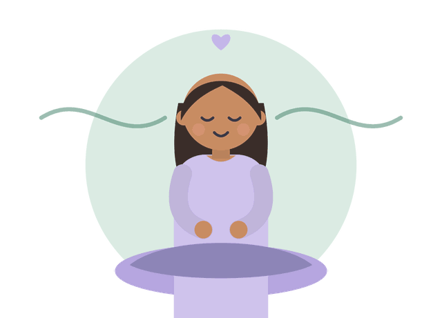
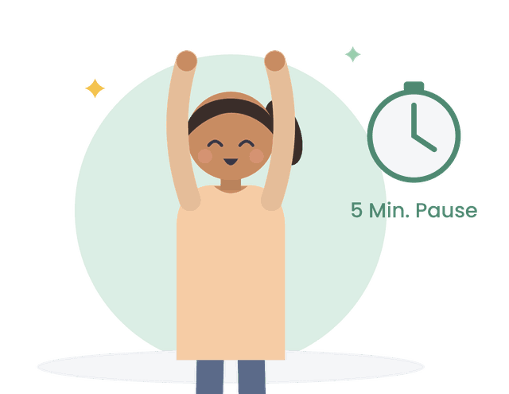

<!doctype html>
<html lang="de">
<head>
<meta charset="utf-8">
<meta name="viewport" content="width=device-width, initial-scale=1, viewport-fit=cover">
<title>Lernkompass</title>
<meta name="description" content="Lernkompass: die passende Lernmethode finden, Methoden mit Belegen nachlesen, nach dem Unterricht abrufen, Aufschieben überwinden und mit KI eine Probeklausur erstellen.">
<meta name="theme-color" content="#f8f7fb" media="(prefers-color-scheme: light)">
<meta name="theme-color" content="#1d1b23" media="(prefers-color-scheme: dark)">
<link rel="manifest" href="manifest.webmanifest">
<link rel="icon" type="image/png" sizes="32x32" href="icons/favicon-32.png">
<link rel="apple-touch-icon" href="icons/apple-touch-icon.png">
<meta name="apple-mobile-web-app-capable" content="yes">
<meta name="mobile-web-app-capable" content="yes">
<meta name="apple-mobile-web-app-title" content="Lernkompass">
<style>
@font-face{font-family:"Kompass Serif";src:url(fonts/kompass-serif.woff) format("woff");font-weight:400 700;font-style:normal;font-display:swap}
@font-face{font-family:"Kompass Serif";src:url(fonts/kompass-serif-italic.woff) format("woff");font-weight:400 700;font-style:italic;font-display:swap}
@font-face{font-family:"Poppins";src:url(fonts/poppins-400.woff) format("woff");font-weight:400;font-display:swap}
@font-face{font-family:"Poppins";src:url(fonts/poppins-500.woff) format("woff");font-weight:500;font-display:swap}
@font-face{font-family:"Poppins";src:url(fonts/poppins-700.woff) format("woff");font-weight:600 700;font-display:swap}
/* Layout: helle, luftige Lesespalte; feine Linienornamente schweben im Hintergrund; Karten mit weichen, mehrschichtigen Schatten; unten eine schwebende Navigationsleiste. */
:root{
  --bg:#fcfbfe; --bg2:#f6f3fb; --paper:#ffffff; --ink:#2b2834; --body:#514c5c; --muted:#8a8494; --line:#ece8f2; --line2:#ddd6e8;
  --lav:#7a68b8; --lav-l:#f0ecfa; --peach:#c47f52; --peach-l:#fdf0e6; --sage:#4f8a68; --sage-l:#e7f3ec;
  --sky:#4f86b8; --sky-l:#e8f1fa; --rose:#c06a7e; --rose-l:#fbebef; --gold:#a07714; --gold-l:#fcf4dc;
  --ok:#3a7c55; --ok-l:#e3f3e9; --no:#b0475e; --no-l:#fbe7eb;
  --sh-1:0 1px 2px rgba(60,48,96,.05),0 2px 6px rgba(60,48,96,.04);
  --sh-2:0 1px 2px rgba(60,48,96,.04),0 6px 18px -6px rgba(90,72,150,.14),0 18px 40px -24px rgba(90,72,150,.22);
  --sh-3:0 2px 4px rgba(60,48,96,.05),0 12px 28px -10px rgba(90,72,150,.22),0 30px 60px -30px rgba(90,72,150,.30);
  --orn:#b9acd9; --orn2:#e2b79a; --orn3:#9cc7ad;
  --serif:"Kompass Serif",Georgia,"Times New Roman",serif; --sans:"Poppins",system-ui,-apple-system,"Segoe UI",sans-serif;
  --navh:66px; --ease:cubic-bezier(.22,.8,.3,1);
}
@media (prefers-color-scheme:dark){:root:not([data-theme="light"]){
  --bg:#1c1a22; --bg2:#221f29; --paper:#27242e; --ink:#f1edf4; --body:#d5cfdb; --muted:#a39cab; --line:#363140; --line2:#433d4f;
  --lav:#b5a8e0; --lav-l:#322d45; --peach:#eeb995; --peach-l:#3f3128; --sage:#9cc4ab; --sage-l:#28372e;
  --sky:#9fc0de; --sky-l:#283542; --rose:#e4a1b0; --rose-l:#402e37; --gold:#e2bc5d; --gold-l:#3d3420;
  --ok:#8fd0a6; --ok-l:#24372b; --no:#ec98a8; --no-l:#43272e;
  --sh-1:0 1px 2px rgba(0,0,0,.3); --sh-2:0 1px 2px rgba(0,0,0,.3),0 10px 24px -12px rgba(0,0,0,.55); --sh-3:0 2px 4px rgba(0,0,0,.35),0 18px 40px -16px rgba(0,0,0,.6);
  --orn:#5d5480; --orn2:#7a5a45; --orn3:#4b6b58; color-scheme:dark}}
:root[data-theme="dark"]{
  --bg:#1c1a22; --bg2:#221f29; --paper:#27242e; --ink:#f1edf4; --body:#d5cfdb; --muted:#a39cab; --line:#363140; --line2:#433d4f;
  --lav:#b5a8e0; --lav-l:#322d45; --peach:#eeb995; --peach-l:#3f3128; --sage:#9cc4ab; --sage-l:#28372e;
  --sky:#9fc0de; --sky-l:#283542; --rose:#e4a1b0; --rose-l:#402e37; --gold:#e2bc5d; --gold-l:#3d3420;
  --ok:#8fd0a6; --ok-l:#24372b; --no:#ec98a8; --no-l:#43272e;
  --sh-1:0 1px 2px rgba(0,0,0,.3); --sh-2:0 1px 2px rgba(0,0,0,.3),0 10px 24px -12px rgba(0,0,0,.55); --sh-3:0 2px 4px rgba(0,0,0,.35),0 18px 40px -16px rgba(0,0,0,.6);
  --orn:#5d5480; --orn2:#7a5a45; --orn3:#4b6b58; color-scheme:dark}

*{box-sizing:border-box}
[hidden]{display:none!important}
html{-webkit-text-size-adjust:100%}
body{margin:0;background:var(--bg);background-image:radial-gradient(120% 60% at 100% 0%,var(--lav-l) 0%,transparent 55%),radial-gradient(90% 50% at 0% 100%,var(--peach-l) 0%,transparent 60%);background-attachment:fixed;
  color:var(--body);font-family:var(--sans);font-size:15px;line-height:1.65;
  padding-left:max(16px,env(safe-area-inset-left,0px));padding-right:max(16px,env(safe-area-inset-right,0px));
  padding-top:max(20px,env(safe-area-inset-top,0px));padding-bottom:calc(var(--navh) + 40px + env(safe-area-inset-bottom,0px));overflow-x:hidden}
.orn{position:fixed;inset:0;z-index:0;pointer-events:none;overflow:hidden}
.orn svg{position:absolute;fill:none;stroke-width:1;vector-effect:non-scaling-stroke}
.orn .o1{width:300px;height:300px;top:-90px;right:-110px;stroke:var(--orn)}
.orn .o2{width:180px;height:180px;bottom:9%;left:-70px;stroke:var(--orn2)}
.orn .o3{width:120px;height:120px;top:42%;right:-30px;stroke:var(--orn3)}
.orn .o4{width:90px;height:90px;top:16%;left:-18px;stroke:var(--orn)}
main{position:relative;z-index:1;max-width:760px;margin:0 auto;display:flex;flex-direction:column;gap:20px}
h1,h2,h3{font-family:var(--serif);color:var(--ink);text-wrap:balance;margin:0;line-height:1.22;letter-spacing:-.005em}
h1{font-size:clamp(1.75rem,5.4vw,2.35rem);font-weight:600}
h2{font-size:1.32rem;font-weight:600}
h3{font-size:1.04rem;font-weight:600}
p{margin:0}
a{color:var(--lav)}
.badge{display:inline-flex;align-items:center;gap:6px;font-size:.68rem;font-weight:600;letter-spacing:.14em;text-transform:uppercase;color:var(--lav);background:var(--paper);border:1px solid var(--line2);padding:5px 12px 5px 10px;border-radius:99px;width:fit-content;box-shadow:var(--sh-1)}
.badge::before{content:"";width:6px;height:6px;border-radius:50%;background:currentColor;opacity:.7}
.flourish{display:block;width:100%;max-width:260px;height:14px;color:var(--orn)}
.flourish path{stroke-dasharray:420;stroke-dashoffset:0}
header.top{display:grid;grid-template-columns:minmax(0,1fr) auto;gap:6px 16px;align-items:center}
header.top .txt{display:flex;flex-direction:column;gap:8px;min-width:0}
header.top .ill{width:clamp(104px,28vw,160px);aspect-ratio:1;max-width:100%}
header.top .ill img{width:100%;height:100%;object-fit:contain;filter:drop-shadow(0 10px 14px rgba(90,72,150,.14))}
.lead{max-width:62ch;grid-column:1/-1}
.card{background:var(--paper);border:1px solid var(--line);border-radius:24px;padding:20px clamp(16px,3.5vw,26px);display:flex;flex-direction:column;gap:14px;box-shadow:var(--sh-2)}
.box{border-radius:16px;padding:13px 15px;font-size:.92rem;color:var(--ink);border:1px solid transparent}
.box.tip{background:var(--gold-l);border-color:color-mix(in srgb,var(--gold) 14%,transparent)} .box.info{background:var(--sky-l);border-color:color-mix(in srgb,var(--sky) 14%,transparent)} .box.warm{background:var(--rose-l);border-color:color-mix(in srgb,var(--rose) 14%,transparent)} .box.ok{background:var(--ok-l)} .box.lav{background:var(--lav-l);border-color:color-mix(in srgb,var(--lav) 14%,transparent)}
.box b.k{color:var(--gold)}
.note{font-size:.82rem;color:var(--muted)}
.src{font-size:.78rem;color:var(--muted)}
.row{display:flex;flex-wrap:wrap;gap:10px;align-items:center}
.btn{font:inherit;font-weight:600;font-size:.9rem;border-radius:99px;padding:10px 20px;border:1px solid transparent;background:linear-gradient(180deg,color-mix(in srgb,var(--lav) 88%,#fff),var(--lav));color:#fff;cursor:pointer;text-decoration:none;display:inline-flex;align-items:center;gap:6px;box-shadow:0 1px 1px rgba(60,48,96,.12),0 6px 16px -6px color-mix(in srgb,var(--lav) 70%,transparent);transition:transform .18s var(--ease),box-shadow .18s var(--ease),filter .18s}
.btn:hover{transform:translateY(-1px);box-shadow:0 2px 2px rgba(60,48,96,.12),0 10px 22px -8px color-mix(in srgb,var(--lav) 75%,transparent)}
.btn:active{transform:translateY(0) scale(.97)}
.btn.ghost{background:var(--paper);color:var(--ink);border-color:var(--line2);box-shadow:var(--sh-1)}
.btn.small{padding:6px 14px;font-size:.82rem}
.btn:disabled{opacity:.4;cursor:default;transform:none}
.link{font:inherit;background:none;border:0;padding:0;color:var(--lav);font-weight:600;cursor:pointer;text-decoration:underline;text-decoration-thickness:1px;text-underline-offset:3px}
button:focus-visible,a:focus-visible,input:focus-visible,textarea:focus-visible,select:focus-visible,label.opt:focus-within{outline:2px solid var(--lav);outline-offset:3px}
.back{font:inherit;font-size:.86rem;background:transparent;border:0;color:var(--muted);cursor:pointer;padding:0;width:fit-content}
input[type=text],input[type=date],textarea,select{font:inherit;font-size:.95rem;color:var(--ink);background:var(--bg);border:1px solid var(--line2);border-radius:14px;padding:11px 13px;width:100%;transition:border-color .2s,box-shadow .2s,background .2s}
input[type=text]:focus,input[type=date]:focus,textarea:focus,select:focus{outline:none;border-color:var(--lav);background:var(--paper);box-shadow:0 0 0 4px var(--lav-l)}
textarea{min-height:110px;resize:vertical;line-height:1.5}
label.f{display:flex;flex-direction:column;gap:6px;font-size:.86rem;font-weight:500;color:var(--ink)}

/* Start */
.tiles{display:grid;grid-template-columns:repeat(2,minmax(0,1fr));gap:12px}
@media (max-width:420px){.tiles{grid-template-columns:1fr}}
.tile{font:inherit;text-align:left;cursor:pointer;border-radius:22px;padding:16px;border:1px solid var(--line);background:var(--paper);color:var(--body);display:flex;flex-direction:column;gap:6px;min-height:132px;position:relative;overflow:hidden;box-shadow:var(--sh-2);transition:transform .25s var(--ease),box-shadow .25s var(--ease)}
.tile::after{content:"";position:absolute;right:-26px;bottom:-26px;width:90px;height:90px;border-radius:50%;border:1px solid var(--tc,var(--orn));opacity:.5;transition:transform .5s var(--ease)}
.tile:hover{transform:translateY(-3px);box-shadow:var(--sh-3)}
.tile:hover::after{transform:scale(1.25)}
.ic{width:42px;height:42px;border-radius:14px;display:grid;place-items:center;box-shadow:inset 0 0 0 1px rgba(255,255,255,.6),0 4px 10px -4px currentColor}
.ic svg{width:22px;height:22px}
.tile b{font-family:var(--serif);font-size:1.08rem;color:var(--ink);line-height:1.25}
.tile span.d{font-size:.84rem}
.due{display:flex;gap:14px;align-items:center;background:linear-gradient(135deg,var(--sage-l),var(--paper));border:1px solid var(--line);border-radius:20px;padding:14px 16px;color:var(--ink);box-shadow:var(--sh-2)}
.due .n{font-family:var(--serif);font-weight:700;font-size:2rem;color:var(--sage);line-height:1;min-width:1.2ch;text-align:center}

/* Finder */
.prog{display:flex;gap:5px}
.prog i{flex:1;height:5px;border-radius:3px;background:var(--line);overflow:hidden;position:relative}
.prog i.done::after{content:"";position:absolute;inset:0;background:linear-gradient(90deg,var(--lav),color-mix(in srgb,var(--lav) 60%,var(--rose)));border-radius:3px;animation:fill .5s var(--ease) both}
@keyframes fill{from{transform:scaleX(0);transform-origin:left}to{transform:scaleX(1);transform-origin:left}}
.opts{display:grid;gap:9px}
.opt{display:flex;gap:12px;align-items:flex-start;border:1px solid var(--line);border-radius:16px;padding:13px 15px;background:var(--paper);cursor:pointer;color:var(--ink);font-size:.94rem;line-height:1.4;box-shadow:var(--sh-1);transition:border-color .2s,background .2s,transform .2s var(--ease),box-shadow .2s}
.opt:hover{transform:translateX(2px);box-shadow:var(--sh-2)}
.opt input{position:absolute;opacity:0;pointer-events:none}
.opt .dot{flex:0 0 20px;height:20px;border-radius:50%;border:1.5px solid var(--line2);margin-top:1px;display:grid;place-items:center;transition:border-color .2s}
.opt .dot::after{content:"";width:10px;height:10px;border-radius:50%;background:var(--lav);transform:scale(0);transition:transform .25s var(--ease)}
.opt small{display:block;color:var(--muted);font-size:.8rem;margin-top:2px}
.opt.sel{border-color:color-mix(in srgb,var(--lav) 55%,transparent);background:var(--lav-l)}
.opt.sel .dot{border-color:var(--lav)}
.opt.sel .dot::after{transform:scale(1)}
.rec{border:1px solid var(--line);border-radius:22px;padding:18px;display:flex;flex-direction:column;gap:10px;background:var(--paper);box-shadow:var(--sh-2);position:relative;overflow:hidden}
.rec.first{box-shadow:var(--sh-3);border-color:color-mix(in srgb,var(--lav) 30%,var(--line))}
.rec.first::before{content:"";position:absolute;inset:0 0 auto 0;height:3px;background:linear-gradient(90deg,var(--lav),var(--rose),var(--peach))}
.rec .rank{font-size:.7rem;font-weight:600;letter-spacing:.12em;text-transform:uppercase;color:var(--lav)}
.rec ul{margin:0;padding-left:18px;font-size:.9rem}

/* Methoden */
.chips{display:flex;flex-wrap:wrap;gap:8px}
.chip{font:inherit;font-size:.82rem;border-radius:99px;padding:6px 14px;border:1px solid var(--line2);background:var(--paper);color:var(--body);cursor:pointer;box-shadow:var(--sh-1);transition:all .2s var(--ease)}
.chip[aria-pressed="true"]{background:var(--lav);color:#fff;border-color:var(--lav);box-shadow:0 6px 14px -6px var(--lav)}
.mlist{display:grid;gap:10px}
.mitem{font:inherit;text-align:left;cursor:pointer;display:grid;grid-template-columns:minmax(0,1fr) auto;gap:4px 12px;align-items:center;border:1px solid var(--line);border-radius:18px;padding:15px 16px;background:var(--paper);color:var(--body);box-shadow:var(--sh-1);transition:transform .22s var(--ease),box-shadow .22s var(--ease)}
.mitem:hover{transform:translateY(-2px);box-shadow:var(--sh-2)}
.mitem b{font-family:var(--serif);font-size:1.04rem;color:var(--ink)}
.mitem span.d{grid-column:1/-1;font-size:.84rem}
.ev{display:inline-flex;align-items:center;gap:6px;font-size:.7rem;font-weight:600;border-radius:99px;padding:3px 10px;white-space:nowrap}
.ev i{display:inline-flex;gap:2px}
.ev i em{width:6px;height:6px;border-radius:50%;background:currentColor;opacity:.22}
.ev i em.on{opacity:1}
.ev.e3{background:var(--ok-l);color:var(--ok)} .ev.e2{background:var(--gold-l);color:var(--gold)} .ev.e1{background:var(--no-l);color:var(--no)} .ev.e0{background:var(--bg2);color:var(--muted)}
.tags{display:flex;flex-wrap:wrap;gap:6px}
.tag{font-size:.72rem;font-weight:500;border-radius:99px;padding:2px 10px;background:var(--lav-l);color:var(--lav)}
.tag.art{background:var(--paper);border:1px solid var(--line2);color:var(--body)}
.sec{display:flex;flex-direction:column;gap:8px}
.sec h3{display:flex;gap:10px;align-items:center}
.sec h3 .bar{width:18px;height:1px;background:currentColor;opacity:.6}
ol.steps{margin:0;padding:0;list-style:none;counter-reset:s;display:flex;flex-direction:column;gap:9px}
ol.steps li{counter-increment:s;display:grid;grid-template-columns:28px minmax(0,1fr);gap:11px;font-size:.93rem}
ol.steps li::before{content:counter(s);width:28px;height:28px;border-radius:50%;background:var(--paper);border:1px solid color-mix(in srgb,var(--lav) 40%,transparent);color:var(--lav);font-weight:600;display:grid;place-items:center;font-size:.8rem;box-shadow:var(--sh-1)}
.lv{display:inline-block;font-size:.66rem;font-weight:600;letter-spacing:.02em;border-radius:99px;padding:1px 8px;margin-right:4px;vertical-align:1px;white-space:nowrap}
.lv-ok{background:var(--ok-l);color:var(--ok)} .lv-gold{background:var(--gold-l);color:var(--gold)} .lv-muted{background:var(--bg2);color:var(--muted)}
ul.stips{list-style:none;margin:0;padding:0;display:flex;flex-direction:column;gap:12px}
ul.stips li{font-size:.92rem;line-height:1.55;padding:12px 14px;border:1px solid var(--line);border-radius:16px;background:var(--bg)}
ul.stips li b{color:var(--ink)}
.band{position:relative;height:34px;border-radius:12px;background:repeating-linear-gradient(90deg,var(--bg2) 0 calc(25% - 1px),var(--line2) calc(25% - 1px) 25%);overflow:hidden;box-shadow:inset 0 1px 3px rgba(60,48,96,.08)}
.band span{position:absolute;top:0;bottom:0;display:flex;align-items:center;justify-content:center;transition:left .5s var(--ease),width .5s var(--ease)}
.band em{font-style:normal;font-size:.7rem;font-weight:600;color:var(--ink);white-space:nowrap;overflow:hidden}
.seg-d{background:color-mix(in srgb,var(--rose) 38%,transparent);z-index:2}
.seg-s{background:color-mix(in srgb,var(--lav) 45%,transparent);z-index:3}
.seg-k{background:repeating-linear-gradient(135deg,color-mix(in srgb,var(--gold) 30%,transparent) 0 6px,transparent 6px 10px);z-index:1}
.band .seg-k{top:auto;height:8px}
.band-ax{display:flex;justify-content:space-between;font-size:.7rem;color:var(--muted);margin-top:-8px}
.legend{display:flex;flex-wrap:wrap;gap:6px 14px;font-size:.78rem;color:var(--muted)}
.legend i{display:inline-block;width:14px;height:10px;border-radius:3px;margin-right:5px;vertical-align:-1px}
input[type=time]{font:inherit;font-size:.95rem;color:var(--ink);background:var(--bg);border:1px solid var(--line2);border-radius:14px;padding:10px 13px;width:100%;min-height:44px}
input[type=time]:focus{outline:none;border-color:var(--lav);background:var(--paper);box-shadow:0 0 0 4px var(--lav-l)}
.napout{font-size:1.05rem;color:var(--ink);padding:14px 16px;border-radius:16px;background:var(--lav-l);text-align:center}
.napout b{font-family:var(--serif);font-size:1.5rem;color:var(--lav)}
.calm.kt{background:linear-gradient(120deg,var(--rose-l),var(--paper))}
.calm .ic{width:44px;height:44px;border-radius:14px;display:grid;place-items:center}
.calm .ic svg{width:24px;height:24px}
.checks{display:flex;flex-direction:column;gap:8px}
.ck{display:grid;grid-template-columns:26px minmax(0,1fr);gap:10px;align-items:center;font-size:.92rem;padding:10px 12px;border:1px solid var(--line);border-radius:14px;background:var(--bg);cursor:pointer;transition:background .25s,border-color .25s}
.ck input{position:absolute;opacity:0;pointer-events:none}
.ck .bx{width:26px;height:26px;border-radius:8px;border:1.5px solid var(--line2);display:grid;place-items:center;color:transparent;background:var(--paper);transition:all .25s var(--ease)}
.ck .bx svg{width:16px;height:16px}
.ck.on{background:var(--ok-l);border-color:color-mix(in srgb,var(--ok) 20%,transparent)}
.ck.on .bx{background:var(--ok);border-color:var(--ok);color:#fff;transform:scale(1.05)}
.ck.on span:last-child{color:var(--muted);text-decoration:line-through;text-decoration-color:color-mix(in srgb,var(--ok) 50%,transparent)}
.ck:has(input:focus-visible){outline:2px solid var(--lav);outline-offset:2px}
.card.sos{background:linear-gradient(160deg,var(--paper),var(--sky-l));border-color:color-mix(in srgb,var(--sky) 25%,transparent)}
details.card summary{cursor:pointer;list-style:none;font-size:.95rem;color:var(--ink)}
details.card summary::-webkit-details-marker{display:none}
details.card summary::after{content:"+";float:right;color:var(--lav);font-weight:600}
details.card[open] summary::after{content:"–"}
.attrfb{display:flex;flex-direction:column;gap:8px}
.attrfb:empty{display:none}
.attrfb .box{animation:rise .35s var(--ease) both}
.pakbar{display:grid;grid-template-columns:repeat(2,minmax(0,1fr));gap:10px}
@media (max-width:420px){.pakbar{grid-template-columns:1fr}}
.pakb{font:inherit;text-align:left;cursor:pointer;display:grid;grid-template-columns:auto minmax(0,1fr);gap:10px;align-items:center;padding:12px 14px;border-radius:18px;border:1px solid var(--line);background:var(--paper);color:var(--body);box-shadow:var(--sh-1);transition:transform .2s var(--ease),box-shadow .2s}
.pakb:hover{transform:translateY(-2px);box-shadow:var(--sh-2)}
.pakb .ic{width:40px;height:40px;border-radius:12px;display:grid;place-items:center}.pakb .ic svg{width:22px;height:22px}
.pakb b{display:block;color:var(--ink);font-size:.92rem}
.paks{display:grid;grid-template-columns:repeat(auto-fill,minmax(min(100%,150px),1fr));gap:10px}
.pak{font:inherit;text-align:left;cursor:pointer;border-radius:20px;padding:14px 16px;border:1px solid var(--line);background:linear-gradient(160deg,var(--paper),color-mix(in srgb,var(--tc,var(--lav)) 8%,var(--paper)));color:var(--body);display:flex;flex-direction:column;gap:4px;box-shadow:var(--sh-1);transition:transform .25s var(--ease),box-shadow .25s}
.pak:hover:not(:disabled){transform:translateY(-2px);box-shadow:var(--sh-2)}
.pak:disabled{opacity:.45;cursor:default}
.pak .pn{width:34px;height:34px;border-radius:50%;display:grid;place-items:center;font-family:var(--serif);font-weight:600;color:var(--tc,var(--lav));border:1px solid currentColor;margin-bottom:4px}
.pak .pn svg{width:18px;height:18px}
.pak b{font-family:var(--serif);color:var(--ink);font-size:1.02rem;line-height:1.25;hyphens:auto;-webkit-hyphens:auto;overflow-wrap:break-word}
.pak{min-width:0}
.pak .d{font-size:.8rem;color:var(--muted)}
.pak.mix{grid-column:1/-1;--tc:var(--lav);background:linear-gradient(120deg,var(--lav-l),var(--paper) 70%)}
.qq{color:var(--ink);font-size:1.08rem;line-height:1.5;font-weight:500;margin:0}
.reveal{animation:rise .35s var(--ease) both}
.ghostbox{background:var(--bg);border-color:var(--line)}
.score{display:flex;gap:10px;flex-wrap:wrap;justify-content:center}
.score span{display:flex;flex-direction:column;align-items:center;min-width:84px;padding:10px 12px;border-radius:16px;font-size:.78rem;color:var(--muted)}
.score b{font-family:var(--serif);font-size:1.7rem;line-height:1.1}
.score .s2{background:var(--ok-l)}.score .s2 b{color:var(--ok)} .score .s1{background:var(--gold-l)}.score .s1 b{color:var(--gold)} .score .s0{background:var(--rose-l)}.score .s0 b{color:var(--rose)}
.tdq{display:flex;flex-direction:column;gap:12px}
.tdrow{display:flex;flex-direction:column;gap:8px;padding:12px;border:1px solid var(--line);border-radius:16px;background:var(--bg)}
.seg.sm button{font-size:.76rem;padding:5px 10px}
.share{display:flex;flex-direction:column;gap:10px;align-items:center;padding:16px;border-radius:20px;background:linear-gradient(160deg,var(--lav-l),var(--paper));animation:rise .4s var(--ease) both}
.linkbox{font-size:.75rem!important;color:var(--muted)!important;padding:8px 10px!important}
.qr{width:min(260px,72vw);height:auto;border-radius:14px;box-shadow:var(--sh-2);background:#fff}
.card.incoming{background:linear-gradient(140deg,var(--peach-l),var(--paper) 70%);border-color:color-mix(in srgb,var(--peach) 25%,transparent)}
.calm.wk{background:linear-gradient(120deg,var(--gold-l),var(--paper))}
.stats{display:grid;grid-template-columns:repeat(4,minmax(0,1fr));gap:10px}
@media (max-width:480px){.stats{grid-template-columns:repeat(2,minmax(0,1fr))}}
.stat{display:flex;flex-direction:column;align-items:center;text-align:center;padding:14px 8px;border-radius:18px;background:linear-gradient(160deg,var(--lav-l),var(--paper));border:1px solid var(--line);animation:rise .5s var(--ease) both;animation-delay:var(--d)}
.stat b{font-family:var(--serif);font-size:1.9rem;line-height:1;color:var(--lav)}
.stat span{font-size:.82rem;font-weight:600;color:var(--ink);margin-top:4px}
.stat small{font-size:.72rem;color:var(--muted)}
.card.lastplan .tag{align-self:flex-start}
.card.lastplan{background:linear-gradient(140deg,var(--gold-l),var(--paper) 70%)}
.weeks{display:flex;gap:10px;align-items:flex-end;min-height:92px;overflow-x:auto;padding-top:6px}
.wk1{display:flex;flex-direction:column;align-items:center;gap:4px;min-width:34px}
.wk1 .bar{width:22px;border-radius:8px 8px 4px 4px;background:linear-gradient(180deg,var(--gold),color-mix(in srgb,var(--gold) 45%,var(--paper)));animation:rise .5s var(--ease) both}
.wk1 small{font-size:.68rem;color:var(--muted)}
.wk1 i{width:8px;height:8px;border-radius:50%} .wk1 .d2{background:var(--ok)} .wk1 .d1{background:var(--gold)} .wk1 .d0{background:var(--rose)} .wk1 .dx{background:var(--line2)}
.kigate{border:1.5px solid color-mix(in srgb,var(--rose) 35%,transparent);background:linear-gradient(160deg,var(--paper),var(--rose-l))}
.gate-ic{width:42px;height:42px;border-radius:14px;display:grid;place-items:center;background:var(--rose-l);color:var(--rose);flex:none}
.gate-ic svg{width:22px;height:22px}
.kichecks{display:flex;flex-direction:column;gap:8px}
.kichecks .ck.on span:last-child{text-decoration:none;color:var(--ink)}
.box.stop{background:var(--no-l);border-color:color-mix(in srgb,var(--no) 25%,transparent)}
.box.stop b{color:var(--no)}
.kilocked{flex-direction:row;align-items:center;gap:12px;opacity:.85;border-style:dashed}
.kiok{background:linear-gradient(140deg,var(--ok-l),var(--paper) 70%);border-color:color-mix(in srgb,var(--ok) 25%,transparent)}
ol.steps li.must{background:var(--rose-l);border-radius:14px;padding:10px 12px}
ol.steps li.must::before{border-color:var(--rose);color:var(--rose)}
.itiles{display:grid;grid-template-columns:repeat(2,minmax(0,1fr));gap:14px}
@media (min-width:760px){.itiles{grid-template-columns:repeat(4,minmax(0,1fr))}}
.itile{font:inherit;text-align:left;cursor:pointer;border-radius:24px;padding:0;border:1px solid var(--line);background:var(--paper);color:var(--body);display:flex;flex-direction:column;overflow:hidden;position:relative;box-shadow:var(--sh-2);transition:transform .3s var(--ease),box-shadow .3s var(--ease)}
.itile:hover,.itile:focus-visible{transform:translateY(-4px);box-shadow:var(--sh-3)}
.itile .art{display:grid;place-items:center;height:118px;background:linear-gradient(165deg,var(--tl),var(--paper) 92%);border-bottom:1px solid color-mix(in srgb,var(--tc) 14%,transparent)}
.itile .illu{width:min(150px,100%);height:112px;transition:transform .4s var(--ease)}
.itile:hover .illu{transform:scale(1.06) translateY(-2px)}
.itile .i-bg{fill:color-mix(in srgb,var(--tc) 13%,var(--paper))}
.itile .txt{display:flex;flex-direction:column;gap:4px;padding:12px 14px 16px}
.itile b{font-family:var(--serif);font-size:1.06rem;line-height:1.22;color:var(--ink)}
.itile .fl{width:56px;height:6px;color:var(--tc);opacity:.75}
.itile .d{font-size:.8rem;line-height:1.4;color:var(--body)}
.itile .go{position:absolute;top:10px;right:12px;width:26px;height:26px;border-radius:50%;display:grid;place-items:center;font-size:.85rem;background:var(--paper);color:var(--tc);box-shadow:var(--sh-1);opacity:0;transform:translateX(-4px);transition:all .3s var(--ease)}
.itile:hover .go,.itile:focus-visible .go{opacity:1;transform:none}
@media (prefers-reduced-motion:no-preference){
 .itile{animation:rise .5s var(--ease) both;animation-delay:calc(var(--i) * 60ms)}
 .itile .i-breathe{transform-box:fill-box;transform-origin:center;animation:ibreathe 5s ease-in-out infinite}
 .itile .i-twinkle{transform-box:fill-box;transform-origin:center;animation:itw 2.6s ease-in-out infinite}
 .itile .i-float{transform-box:fill-box;transform-origin:center;animation:ifloat 4s ease-in-out infinite}
 .itile .i-pop{transform-box:fill-box;transform-origin:center;animation:ipop 3.2s ease-in-out infinite}
 .itile .i-wave{transform-box:fill-box;transform-origin:left center;animation:iwave 1.8s ease-in-out infinite}
 .itile .i-draw{stroke-dasharray:30;animation:idraw 3.4s ease-in-out infinite}
 .itile .i-zz{animation:izz 3s ease-in-out infinite}
 .itile .i-tick{transform-box:fill-box;transform-origin:50% 100%;animation:itick 6s steps(12) infinite}
 .itile .i-pen{transform-box:fill-box;transform-origin:center;animation:ipen 2.4s ease-in-out infinite}
 .itile .i-glass{transform-box:fill-box;transform-origin:center;animation:iglass 5s ease-in-out infinite}
 .itile .d2{animation-delay:.8s}.itile .d3{animation-delay:1.6s}
}
@keyframes ibreathe{0%,100%{transform:scale(.88);opacity:.25}50%{transform:scale(1.06);opacity:.6}}
@keyframes itw{0%,100%{transform:scale(.6) rotate(0);opacity:.5}50%{transform:scale(1.1) rotate(20deg);opacity:1}}
@keyframes ifloat{0%,100%{transform:translateY(0)}50%{transform:translateY(-4px)}}
@keyframes ipop{0%,100%{transform:scale(1)}15%{transform:scale(1.35)}30%{transform:scale(1)}}
@keyframes iwave{0%,100%{transform:skewY(0) scaleX(1)}50%{transform:skewY(-8deg) scaleX(.92)}}
@keyframes idraw{0%{stroke-dashoffset:30}40%,80%{stroke-dashoffset:0}100%{stroke-dashoffset:30}}
@keyframes izz{0%{transform:translate(0,4px);opacity:0}30%{opacity:1}100%{transform:translate(6px,-8px);opacity:0}}
@keyframes itick{to{transform:rotate(360deg)}}
@keyframes ipen{0%,100%{transform:translate(0,0) rotate(0)}25%{transform:translate(-3px,2px) rotate(-6deg)}50%{transform:translate(-6px,0) rotate(0)}75%{transform:translate(-3px,-2px) rotate(6deg)}}
@keyframes iglass{0%,100%{transform:translate(0,0)}50%{transform:translate(-10px,6px)}}
html.noscroll,html.noscroll body{overflow:hidden}
.gate{position:fixed;inset:0;z-index:200;display:grid;place-items:center;padding:16px;background:rgba(47,43,58,.42);backdrop-filter:blur(6px);-webkit-backdrop-filter:blur(6px);opacity:0;transition:opacity .3s var(--ease)}
.gate.on{opacity:1}
.gate-card{width:min(720px,100%);max-height:calc(100dvh - 32px);overflow-y:auto;overscroll-behavior:contain;background:var(--paper);border-radius:28px;border:1px solid var(--line);box-shadow:0 30px 80px -20px rgba(47,43,58,.45);padding:26px 22px 0;display:flex;flex-direction:column;gap:14px;transform:translateY(16px) scale(.98);transition:transform .4s var(--ease)}
.gate.on .gate-card{transform:none}
.gate-card h1{font-family:var(--serif);font-size:clamp(1.5rem,5vw,2rem);line-height:1.15;color:var(--ink);margin:0;outline:none}
.gate-card .lead{margin:0}
.gate-end{height:1px;flex:none}
.gate-foot{position:sticky;bottom:0;margin:0 -22px;padding:14px 22px calc(14px + env(safe-area-inset-bottom));background:var(--paper);display:flex;gap:12px;align-items:center;justify-content:space-between;flex-wrap:wrap;border-top:1px solid var(--line)}
.gate-hint{font-size:.82rem;color:var(--muted)}
.gate-ck{background:var(--lav-l)!important}
.ampel{display:flex;flex-direction:column;gap:10px}
.am{border-radius:20px;padding:14px 16px;border:1px solid var(--line)}
.am.go{background:var(--ok-l)}.am.ask{background:var(--gold-l)}.am.no{background:var(--no-l)}
.amh{display:flex;align-items:center;gap:10px;margin-bottom:6px}
.amh h3{margin:0;font-family:var(--serif);font-size:1.08rem;color:var(--ink)}
.amh .dot{width:14px;height:14px;border-radius:50%;flex:none}
.am.go .dot{background:var(--ok);box-shadow:0 0 0 4px color-mix(in srgb,var(--ok) 20%,transparent)}.am.ask .dot{background:var(--gold);box-shadow:0 0 0 4px color-mix(in srgb,var(--gold) 20%,transparent)}.am.no .dot{background:var(--no);box-shadow:0 0 0 4px color-mix(in srgb,var(--no) 20%,transparent)}
ul.rl{margin:0;padding-left:20px;display:flex;flex-direction:column;gap:5px;font-size:.9rem;line-height:1.45}
ul.rl b{color:var(--ink)}
.why h3{font-family:var(--serif);font-size:1.02rem;color:var(--ink);margin:4px 0 8px}
.whyg{display:grid;grid-template-columns:repeat(2,minmax(0,1fr));gap:8px}
@media (max-width:480px){.whyg{grid-template-columns:1fr}}
.whyg div{background:var(--bg);border:1px solid var(--line);border-radius:14px;padding:10px 12px;display:flex;flex-direction:column;gap:2px;font-size:.84rem}
.whyg b{color:var(--ink);font-size:.86rem}
.dodont{display:grid;grid-template-columns:1fr 1fr;gap:10px}
@media (max-width:560px){.dodont{grid-template-columns:1fr}}
.dd{border-radius:20px;padding:14px 16px}
.dd.do{background:var(--ok-l)}.dd.dont{background:var(--no-l)}
.dd h3{display:flex;align-items:center;gap:8px;margin:0 0 8px;font-family:var(--serif);font-size:1.05rem;color:var(--ink)}
.dd h3 svg{width:24px;height:24px;padding:3px;border-radius:50%;background:var(--paper);fill:none;stroke:currentColor;stroke-width:2;stroke-linecap:round;stroke-linejoin:round}
.dd.do h3 svg{color:var(--ok)}.dd.dont h3 svg{color:var(--no)}
.dd ul{margin:0;padding-left:18px;display:flex;flex-direction:column;gap:6px;font-size:.88rem;line-height:1.45}
.dd b{color:var(--ink)}
ul.plain{margin:0;padding-left:18px;font-size:.93rem;display:flex;flex-direction:column;gap:4px}
.cite{border-left:1px solid var(--line2);padding:2px 0 2px 14px;font-size:.88rem;display:flex;flex-direction:column;gap:3px}
.cite .ref{font-size:.79rem;color:var(--muted)}
.cite .ref a{color:var(--muted)}
.copyref{font:inherit;font-size:.72rem;border:1px solid var(--line2);background:var(--paper);border-radius:99px;padding:2px 10px;color:var(--muted);cursor:pointer;width:fit-content;margin-top:3px}
.map{display:grid;grid-template-columns:repeat(2,minmax(0,1fr));gap:10px}
@media (max-width:480px){.map{grid-template-columns:1fr}}
.map .m{border:1px solid var(--line);border-radius:18px;padding:13px 14px;background:linear-gradient(160deg,var(--paper),var(--bg2));display:flex;flex-direction:column;gap:5px;font-size:.88rem}
.map .m b{font-family:var(--serif);color:var(--ink);font-size:1rem}
.cycle{display:flex;flex-wrap:wrap;gap:6px;align-items:center;font-size:.82rem;font-weight:600;color:var(--lav)}
.cycle span{background:var(--lav-l);border-radius:99px;padding:4px 11px}
.pyr{display:flex;flex-direction:column;align-items:center;gap:4px}
.pyr div{border-radius:10px;padding:6px 10px;text-align:center;font-size:.8rem;color:var(--ink);background:var(--lav-l);border:1px solid color-mix(in srgb,var(--lav) 18%,transparent)}

/* Timer */
.stage{border-radius:22px;background:linear-gradient(180deg,var(--bg2),var(--paper));border:1px solid var(--line);display:flex;flex-direction:column;align-items:center;gap:10px;padding:22px 14px;text-align:center;box-shadow:inset 0 1px 0 rgba(255,255,255,.7)}
.clock{font-family:var(--serif);font-weight:600;font-size:clamp(2.6rem,12vw,3.8rem);color:var(--ink);font-variant-numeric:tabular-nums;line-height:1}
.clock.warn{color:var(--rose);animation:pulse 1s ease-in-out infinite}
@keyframes pulse{50%{opacity:.6}}
.ring{width:100%;height:6px;border-radius:4px;background:var(--line);overflow:hidden}
.ring span{display:block;height:100%;background:linear-gradient(90deg,var(--lav),var(--rose));border-radius:4px;width:0}
.seg{display:inline-flex;border:1px solid var(--line2);border-radius:99px;overflow:hidden;flex-wrap:wrap;background:var(--paper);box-shadow:var(--sh-1)}
.seg button{font:inherit;font-size:.82rem;padding:6px 13px;border:0;background:transparent;color:var(--body);cursor:pointer;transition:background .2s}
.seg button[aria-pressed="true"]{background:var(--lav-l);color:var(--ink);font-weight:600}

/* Abruf */
.flow{display:flex;gap:6px;flex-wrap:wrap}
.flow span{font-size:.72rem;font-weight:600;border-radius:99px;padding:4px 11px;background:var(--paper);border:1px solid var(--line);color:var(--muted);transition:all .3s var(--ease)}
.flow span.on{background:var(--lav);border-color:var(--lav);color:#fff;box-shadow:0 6px 14px -6px var(--lav)}
.flow span.done{background:var(--lav-l);border-color:transparent;color:var(--lav)}
.qrow{display:grid;grid-template-columns:auto minmax(0,1fr);gap:10px;align-items:start}
.lvl{font-size:.72rem;font-weight:700;border-radius:9px;padding:4px 8px;white-space:nowrap;margin-top:8px}
.lvl.l1{background:var(--sky-l);color:var(--sky)} .lvl.l2{background:var(--peach-l);color:var(--peach)} .lvl.l3{background:var(--sage-l);color:var(--sage)}
.conf{display:flex;flex-wrap:wrap;gap:8px}
.conf button{font:inherit;font-size:.84rem;border-radius:99px;padding:7px 14px;border:1px solid var(--line2);background:var(--paper);color:var(--ink);cursor:pointer;transition:all .2s var(--ease)}
.conf button[aria-pressed="true"]{background:var(--lav-l);border-color:var(--lav);font-weight:600}
.modes{display:grid;grid-template-columns:repeat(3,minmax(0,1fr));gap:8px}
@media (max-width:460px){.modes{grid-template-columns:1fr}}
.mode{font:inherit;text-align:left;cursor:pointer;border:1px solid var(--line);border-radius:16px;padding:11px 12px;background:var(--paper);color:var(--ink);display:flex;flex-direction:column;gap:3px;font-size:.84rem;line-height:1.35;box-shadow:var(--sh-1);transition:all .2s var(--ease)}
.mode b{font-size:.9rem}
.mode[aria-pressed="true"]{border-color:var(--lav);background:var(--lav-l)}
.entry{border:1px solid var(--line);border-radius:18px;padding:12px 14px;display:grid;grid-template-columns:minmax(0,1fr) auto;gap:6px 10px;align-items:center;background:var(--paper);box-shadow:var(--sh-1)}
.entry b{color:var(--ink);overflow-wrap:anywhere}
.entry .st{font-size:.72rem;font-weight:600;border-radius:99px;padding:3px 10px;white-space:nowrap}
.st.today{background:var(--rose-l);color:var(--rose)} .st.later{background:var(--sky-l);color:var(--sky)} .st.fest{background:var(--ok-l);color:var(--ok)}
.entry .acts{grid-column:1/-1;display:flex;gap:8px;flex-wrap:wrap}

/* Anfangen */
.paths{display:grid;gap:9px}
.pathbtn{font:inherit;text-align:left;cursor:pointer;border:1px solid var(--line);border-radius:16px;padding:12px 14px;background:var(--paper);color:var(--ink);display:flex;gap:12px;align-items:center;font-size:.94rem;line-height:1.35;box-shadow:var(--sh-1);transition:all .22s var(--ease)}
.pathbtn:hover{transform:translateX(3px);box-shadow:var(--sh-2)}
.pathbtn .e{flex:0 0 34px;height:34px;border-radius:11px;display:grid;place-items:center;font-weight:600;font-family:var(--serif);font-size:1rem}
.pathbtn[aria-pressed="true"]{border-color:var(--lav);background:var(--lav-l)}
.res{display:grid;grid-template-columns:minmax(0,1fr) auto;gap:12px;align-items:start}
.res .ill{width:clamp(90px,24vw,130px)}
.res .ill img{width:100%;filter:drop-shadow(0 8px 12px rgba(90,72,150,.14))}
.slider{display:flex;flex-direction:column;gap:4px}
.slider label{font-size:.86rem;font-weight:500;color:var(--ink);display:flex;justify-content:space-between;gap:8px}
.slider output{font-weight:600;color:var(--lav);font-size:.82rem;white-space:nowrap;flex:0 0 auto}
.btn svg{width:16px;height:16px;flex:0 0 16px}
input[type=range]{width:100%;accent-color:var(--lav)}
.scale{display:flex;justify-content:space-between;font-size:.72rem;color:var(--muted)}

/* KI */
.prompt{font-family:ui-monospace,SFMono-Regular,Menlo,Consolas,monospace;font-size:.8rem;line-height:1.55;background:var(--bg2);border:1px solid var(--line);border-radius:16px;padding:13px;white-space:pre-wrap;overflow-wrap:anywhere;max-height:340px;overflow:auto;color:var(--ink)}
.optable{width:100%;border-collapse:collapse;font-size:.86rem}
.optable th,.optable td{border-bottom:1px solid var(--line);padding:9px 6px;text-align:left;vertical-align:top;color:var(--ink)}
.optable th{font-size:.68rem;letter-spacing:.1em;text-transform:uppercase;color:var(--muted)}
.tw{overflow-x:auto}
.grid2{display:grid;grid-template-columns:repeat(2,minmax(0,1fr));gap:10px}
@media (max-width:480px){.grid2{grid-template-columns:1fr}}

/* Quellen */
.reflist{display:flex;flex-direction:column;gap:12px;font-size:.86rem;color:var(--ink)}
.reflist p{padding-left:22px;text-indent:-22px;overflow-wrap:anywhere}
.reflist .chk{font-size:.7rem;color:var(--ok);font-weight:600;margin-left:4px}

/* Navigation */
nav.tabs{position:fixed;left:max(10px,env(safe-area-inset-left,0px));right:max(10px,env(safe-area-inset-right,0px));bottom:calc(10px + env(safe-area-inset-bottom,0px));z-index:20;max-width:620px;margin:0 auto;
  background:color-mix(in srgb,var(--paper) 86%,transparent);-webkit-backdrop-filter:blur(14px) saturate(1.4);backdrop-filter:blur(14px) saturate(1.4);border:1px solid var(--line);border-radius:24px;padding:6px;box-shadow:var(--sh-3)}
nav.tabs .in{display:grid;grid-template-columns:repeat(7,minmax(0,1fr));gap:1px;position:relative}
nav.tabs button.live::after{content:"";position:absolute;top:5px;right:calc(50% - 15px);width:8px;height:8px;border-radius:50%;background:var(--rose);box-shadow:0 0 0 2px var(--paper);animation:pulse 1.4s ease-in-out infinite}
.ringwrap{position:relative;width:min(260px,72vw);aspect-ratio:1}
.ringwrap svg{width:100%;height:100%;transform:rotate(-90deg)}
.ringwrap .trk{fill:none;stroke:var(--line);stroke-width:6}
.ringwrap .bar{fill:none;stroke:url(#rg);stroke-width:6;stroke-linecap:round;transition:stroke-dashoffset .3s linear}
.ringwrap .mid{position:absolute;inset:0;display:flex;flex-direction:column;align-items:center;justify-content:center;gap:4px;text-align:center;padding:18%}
.ringwrap .mid img{width:70%;max-width:100%}
.welcome{position:relative;overflow:hidden;background:linear-gradient(150deg,var(--paper) 40%,var(--lav-l));border:1px solid color-mix(in srgb,var(--lav) 25%,var(--line))}
.steps3{display:grid;grid-template-columns:repeat(3,minmax(0,1fr));gap:10px}
@media (max-width:520px){.steps3{grid-template-columns:1fr}}
.st3{font:inherit;text-align:left;cursor:pointer;border:1px solid var(--line);border-radius:18px;padding:13px 14px;background:var(--paper);color:var(--body);display:grid;grid-template-columns:34px minmax(0,1fr);gap:4px 10px;align-items:center;box-shadow:var(--sh-1);transition:transform .22s var(--ease),box-shadow .22s var(--ease)}
.st3:hover{transform:translateY(-2px);box-shadow:var(--sh-2)}
.st3 .n{grid-row:span 2;width:34px;height:34px;border-radius:50%;display:grid;place-items:center;font-family:var(--serif);font-weight:600;border:1px solid currentColor}
.st3 b{font-family:var(--serif);color:var(--ink);font-size:1rem;line-height:1.2}
.st3 span.d{font-size:.8rem;line-height:1.35;color:var(--body)}
.why{font-size:.84rem;color:var(--body)}
.why summary{cursor:pointer;color:var(--lav);font-weight:500;list-style:none;display:inline-flex;gap:6px;align-items:center}
.why summary::-webkit-details-marker{display:none}
.why summary::before{content:"?";width:18px;height:18px;border-radius:50%;border:1px solid currentColor;display:grid;place-items:center;font-size:.7rem;font-weight:700}
.why p{margin-top:6px;padding-left:24px}
.intro-list{list-style:none;margin:0;padding:0;display:flex;flex-direction:column;gap:10px}
.intro-list li{display:grid;grid-template-columns:36px minmax(0,1fr);gap:12px;align-items:start;font-size:.92rem}
.intro-list .ic{width:36px;height:36px;border-radius:12px}
.intro-list .ic svg{width:19px;height:19px}
.steps3.four{grid-template-columns:repeat(2,minmax(0,1fr))}
@media (min-width:700px){.steps3.four{grid-template-columns:repeat(4,minmax(0,1fr))}}
@media (max-width:380px){.steps3.four{grid-template-columns:1fr}}
.pbar{display:flex;height:9px;border-radius:6px;background:var(--line);overflow:hidden;box-shadow:inset 0 1px 2px rgba(60,48,96,.08)}
.pbar span{display:block;height:100%;transition:width .6s var(--ease)}
.pbar .s2{background:linear-gradient(90deg,var(--sage),color-mix(in srgb,var(--sage) 70%,#fff))}
.pbar .s1{background:linear-gradient(90deg,var(--gold),color-mix(in srgb,var(--gold) 60%,#fff))}
.legend{display:flex;flex-wrap:wrap;gap:12px;font-size:.78rem;color:var(--muted)}
.legend i{display:inline-block;width:9px;height:9px;border-radius:50%;margin-right:5px;vertical-align:-1px}
.exhead{display:grid;grid-template-columns:minmax(0,1fr) auto;gap:8px;align-items:start}
.cd{font-family:var(--serif);font-weight:600;color:var(--lav);font-size:1.6rem;line-height:1;text-align:right}
.cd small{display:block;font-family:var(--sans);font-size:.7rem;font-weight:500;color:var(--muted)}
.topic{border:1px solid var(--line);border-radius:18px;padding:12px 13px;display:flex;flex-direction:column;gap:8px;background:linear-gradient(180deg,var(--paper),var(--bg))}
.topic h3{display:flex;justify-content:space-between;gap:8px;align-items:center;font-size:1rem}
.topic h3 .cnt{font-family:var(--sans);font-size:.74rem;font-weight:600;color:var(--muted)}
.sub{display:grid;grid-template-columns:auto minmax(0,1fr) auto auto;gap:8px;align-items:center;font-size:.9rem;color:var(--ink)}
.sub .nm{overflow-wrap:anywhere}
.stat{font:inherit;font-size:.72rem;font-weight:600;border-radius:99px;padding:3px 10px;border:1px solid transparent;cursor:pointer;white-space:nowrap;min-width:82px;transition:all .2s var(--ease)}
.stat.s0{background:var(--paper);border-color:var(--line2);color:var(--muted)}
.stat.s1{background:var(--gold-l);color:var(--gold)}
.stat.s2{background:var(--ok-l);color:var(--ok)}
.mini{font:inherit;font-size:.74rem;border:1px solid var(--line2);background:var(--paper);border-radius:99px;padding:3px 9px;color:var(--body);cursor:pointer}
.mini.x{border:0;background:transparent;color:var(--muted);font-size:1rem;padding:0 4px}
.addrow{display:grid;grid-template-columns:minmax(0,1fr) auto;gap:8px}
.addrow input{padding:8px 11px;font-size:.88rem}
.today{display:flex;flex-direction:column;gap:8px}
.today .it{display:grid;grid-template-columns:minmax(0,1fr) auto;gap:8px;align-items:center;border:1px solid var(--line);border-radius:14px;padding:9px 12px;background:var(--paper);font-size:.9rem;color:var(--ink)}
.today .it small{display:block;color:var(--muted);font-size:.76rem}
.mbar{display:grid;grid-template-columns:minmax(0,1fr);gap:4px;border:1px solid var(--line);border-radius:16px;padding:11px 13px;background:var(--paper)}
.mbar .t{display:flex;justify-content:space-between;gap:8px;font-size:.88rem;color:var(--ink)}
.mbar .t b{font-family:var(--serif)}
.mbar .ln{display:grid;grid-template-columns:86px minmax(0,1fr) 34px;gap:8px;align-items:center;font-size:.74rem;color:var(--muted)}
.mbar .ln .tr{height:7px;border-radius:4px;background:var(--line);overflow:hidden}
.mbar .ln .tr span{display:block;height:100%;border-radius:4px}
.hist{display:flex;flex-direction:column;gap:8px}
.hist .h{border:1px solid var(--line);border-radius:14px;padding:10px 12px;font-size:.86rem;display:grid;grid-template-columns:minmax(0,1fr) auto;gap:4px 10px;background:var(--paper)}
.hist .h b{color:var(--ink);overflow-wrap:anywhere}
.dots5{letter-spacing:1px;color:var(--lav);font-size:.8rem;white-space:nowrap}
.bwrap{position:relative;width:min(260px,70vw);aspect-ratio:1;display:grid;place-items:center;max-width:100%}
.bwrap::before,.bwrap::after{content:"";position:absolute;inset:0;border-radius:50%;border:1px solid var(--orn)}
.bwrap::after{inset:14%;border-style:dashed;opacity:.6}
.bc{width:86%;aspect-ratio:1;border-radius:50%;display:grid;place-items:center;text-align:center;padding:12%;font-family:var(--serif);font-size:1.15rem;color:var(--ink);
  background:radial-gradient(circle at 35% 30%,var(--paper),var(--sky-l) 55%,var(--lav-l));box-shadow:var(--sh-3),inset 0 0 0 1px rgba(255,255,255,.6);transform:scale(.7);transition:transform 2s ease-in-out;will-change:transform}
.grd{display:grid;grid-template-columns:40px minmax(0,1fr);gap:4px 12px;align-items:center;border:1px solid var(--line);border-radius:18px;padding:12px 14px;background:var(--paper);transition:background .3s,border-color .3s}
.grd.ok{background:var(--ok-l);border-color:color-mix(in srgb,var(--ok) 30%,transparent)}
.grd .num{grid-row:span 2;width:40px;height:40px;border-radius:50%;display:grid;place-items:center;font-family:var(--serif);font-weight:600;font-size:1.2rem;color:var(--lav);border:1px solid color-mix(in srgb,var(--lav) 40%,transparent);background:var(--paper)}
.grd b{color:var(--ink);display:block}
.gdots{grid-column:2;display:flex;gap:8px;flex-wrap:wrap}
.gd{width:30px;height:30px;border-radius:50%;border:1.5px solid var(--line2);background:var(--paper);cursor:pointer;transition:all .25s var(--ease)}
.gd.on{background:var(--lav);border-color:var(--lav);transform:scale(1.05)}
.kind{font-family:var(--serif);font-size:clamp(1.2rem,3.6vw,1.5rem);line-height:1.45;color:var(--ink);padding:18px 20px;border-radius:20px;background:linear-gradient(150deg,var(--paper),var(--rose-l));border:1px solid var(--line);box-shadow:var(--sh-1)}
.help{display:flex;flex-direction:column;gap:4px;border:1px solid var(--line);border-radius:16px;padding:12px 14px;background:var(--paper)}
.help a{font-family:var(--serif);font-weight:600;font-size:1.25rem;color:var(--lav);text-decoration:none}
.calm{display:grid;grid-template-columns:auto minmax(0,1fr) auto;gap:12px;align-items:center;border-radius:20px;padding:12px 14px;background:linear-gradient(120deg,var(--sky-l),var(--paper));border:1px solid var(--line);box-shadow:var(--sh-1);font:inherit;text-align:left;cursor:pointer;color:var(--ink)}
.calm img{width:56px;height:56px;object-fit:contain}
@media (prefers-reduced-motion:no-preference){.kind.swap{animation:rise .5s var(--ease) both}}
nav.tabs button{font:inherit;font-size:.64rem;font-weight:500;background:transparent;border:0;border-radius:18px;padding:7px 2px;color:var(--muted);cursor:pointer;display:flex;flex-direction:column;align-items:center;gap:2px;line-height:1.2;position:relative;z-index:1;transition:color .25s}
nav.tabs svg{width:22px;height:22px;transition:transform .3s var(--ease)}
nav.tabs button[aria-current="page"]{color:var(--lav);font-weight:600}
nav.tabs button[aria-current="page"] svg{transform:translateY(-1px) scale(1.06)}
nav.tabs .pill{position:absolute;top:0;bottom:0;left:0;border-radius:18px;background:var(--lav-l);transition:transform .38s var(--ease),width .38s var(--ease);z-index:0}
footer{font-size:.76rem;color:var(--muted);text-align:center;display:flex;flex-direction:column;gap:4px;align-items:center}
.toast{position:fixed;left:50%;bottom:calc(var(--navh) + 30px + env(safe-area-inset-bottom,0px));background:var(--ink);color:var(--paper);padding:9px 18px;border-radius:99px;font-size:.84rem;z-index:30;box-shadow:var(--sh-3);transform:translateX(-50%)}

/* Bewegung */
@media (prefers-reduced-motion:no-preference){
  .orn svg{animation:drift 22s ease-in-out infinite alternate}
  .orn .o2{animation-duration:28s;animation-delay:-6s}.orn .o3{animation-duration:18s;animation-delay:-3s}.orn .o4{animation-duration:25s;animation-delay:-9s}
  @keyframes drift{0%{transform:translate(0,0) rotate(0deg)}100%{transform:translate(-14px,18px) rotate(14deg)}}
  .enter>*{animation:rise .55s var(--ease) both}
  .enter>*:nth-child(2){animation-delay:.05s}.enter>*:nth-child(3){animation-delay:.1s}.enter>*:nth-child(4){animation-delay:.15s}.enter>*:nth-child(5){animation-delay:.2s}.enter>*:nth-child(6){animation-delay:.25s}.enter>*:nth-child(n+7){animation-delay:.3s}
  @keyframes rise{from{opacity:0;transform:translateY(14px)}to{opacity:1;transform:none}}
  .tiles .tile,.mlist>*,.paths>*{animation:rise .5s var(--ease) both}
  .tiles .tile:nth-child(2),.mlist>*:nth-child(2),.paths>*:nth-child(2){animation-delay:.06s}.tiles .tile:nth-child(3),.mlist>*:nth-child(3),.paths>*:nth-child(3){animation-delay:.12s}.tiles .tile:nth-child(4),.mlist>*:nth-child(4),.paths>*:nth-child(4){animation-delay:.18s}.tiles .tile:nth-child(5),.mlist>*:nth-child(5),.paths>*:nth-child(5){animation-delay:.24s}.tiles .tile:nth-child(n+6),.mlist>*:nth-child(n+6){animation-delay:.3s}
  .ill img{animation:bob 5s ease-in-out infinite}
  @keyframes bob{50%{transform:translateY(-6px)}}
  .flourish path{animation:draw 1.4s var(--ease) both}
  @keyframes draw{from{stroke-dashoffset:420}to{stroke-dashoffset:0}}
  .flourish circle{animation:pop .5s .9s var(--ease) both}
  @keyframes pop{from{opacity:0;transform:scale(0);transform-box:fill-box;transform-origin:center}to{opacity:1;transform:scale(1);transform-box:fill-box;transform-origin:center}}
  .toast{animation:toast .35s var(--ease) both}
  @keyframes toast{from{opacity:0;transform:translate(-50%,10px)}to{opacity:1;transform:translate(-50%,0)}}
  .due .n{animation:pop2 .6s .3s var(--ease) both}
  @keyframes pop2{from{transform:scale(.4);opacity:0}to{transform:scale(1);opacity:1}}
}
</style>
<script src="qr.js"></script>
</head>
<body>
<div class="orn" aria-hidden="true">
<svg class="o1" viewBox="0 0 300 300"><circle cx="150" cy="150" r="120"/><circle cx="150" cy="150" r="96" stroke-dasharray="2 7"/><circle cx="62" cy="230" r="4"/></svg>
<svg class="o2" viewBox="0 0 180 180"><rect x="34" y="34" width="112" height="112" rx="26" transform="rotate(18 90 90)"/><path d="M20 160 C 60 120, 110 170, 160 120"/></svg>
<svg class="o3" viewBox="0 0 120 120"><circle cx="60" cy="60" r="44"/><circle cx="60" cy="60" r="3"/></svg>
<svg class="o4" viewBox="0 0 90 90"><path d="M45 10 L80 72 L10 72 Z"/></svg>
</div>
<main id="app"></main>
<nav class="tabs" aria-label="Bereiche"><div class="in" id="tabs"><span class="pill" id="pill"></span></div></nav>
<div class="toast" id="toast" hidden role="status"></div>

<script>
(function(){
"use strict";
const $=s=>document.querySelector(s);
const esc=s=>String(s==null?'':s).replace(/[&<>"']/g,c=>({'&':'&amp;','<':'&lt;','>':'&gt;','"':'&quot;',"'":'&#39;'}[c]));
const fmt=s=>{s=Math.max(0,Math.ceil(s));return String(Math.floor(s/60)).padStart(2,'0')+':'+String(s%60).padStart(2,'0')};
const FL='<svg class="flourish" viewBox="0 0 340 18" fill="none" aria-hidden="true"><path d="M2 9 C 60 1, 100 17, 170 9 S 280 1, 338 9" stroke="currentColor" stroke-width=".9"/><circle cx="170" cy="9" r="2.6" fill="currentColor"/><circle cx="20" cy="7" r="1.6" fill="currentColor"/><circle cx="320" cy="7" r="1.6" fill="currentColor"/></svg>';
function toast(t){const el=$('#toast');el.textContent=t;el.hidden=false;clearTimeout(toast._t);toast._t=setTimeout(()=>el.hidden=true,2200)}
async function copy(text,ok){try{await navigator.clipboard.writeText(text);toast(ok||'Kopiert')}catch(e){const ta=document.createElement('textarea');ta.value=text;ta.setAttribute('readonly','');ta.style.position='fixed';ta.style.opacity='0';document.body.appendChild(ta);ta.select();let done=false;try{done=document.execCommand('copy')}catch(_){}ta.remove();toast(done?(ok||'Kopiert'):'Bitte Text markieren und kopieren')}}
const store={get(k,d){try{const v=localStorage.getItem(k);return v?JSON.parse(v):d}catch(e){return d}},set(k,v){try{localStorage.setItem(k,JSON.stringify(v))}catch(e){}}};

/* ---------- Ton & Timer ---------- */
let actx=null;function unlock(){try{if(!actx)actx=new(window.AudioContext||window.webkitAudioContext)();if(actx.state==='suspended')actx.resume()}catch(e){}}
function gong(n){try{unlock();if(!actx)return;for(let k=0;k<(n||1);k++){const t0=actx.currentTime+k*.9;[523.25,784,1046.5].forEach((f,i)=>{const o=actx.createOscillator(),g=actx.createGain();o.type='sine';o.frequency.value=f;g.gain.setValueAtTime(.0001,t0);g.gain.exponentialRampToValueAtTime(.2/(i+1),t0+.02);g.gain.exponentialRampToValueAtTime(.0001,t0+2.2);o.connect(g).connect(actx.destination);o.start(t0);o.stop(t0+2.3)})}}catch(e){}}
let lock=null;async function wake(on){try{if(on&&!lock&&navigator.wakeLock){lock=await navigator.wakeLock.request('screen');lock.addEventListener('release',()=>lock=null)}else if(!on&&lock){await lock.release();lock=null}}catch(e){}}
let timers=[];function stopTimers(){timers.forEach(t=>t.stop());timers=[]}
function Timer(sec,tick,end){let e=0,id=null;const t={start(){e=Date.now()+sec*1000;clearInterval(id);wake(true);const f=()=>{const r=(e-Date.now())/1000;tick(r,sec);if(r<=0){clearInterval(id);id=null;if(FT.phase==='idle')wake(false);end&&end()}};f();id=setInterval(f,250)},stop(){clearInterval(id);id=null;if(FT.phase==='idle')wake(false)}};timers.push(t);return t}

/* ---------- Icons ---------- */
const I={
 x:'<path d="M7 7l10 10M17 7L7 17"/>',
 shield:'<path d="M12 3.5l7 2.6v5.2c0 4.3-3 7.6-7 9.2-4-1.6-7-4.9-7-9.2V6.1z"/><path d="m9 12 2.2 2.2L15.5 10"/>',
 week:'<rect x="4" y="5.5" width="16" height="14" rx="3"/><path d="M8 3.5v4M16 3.5v4M4 10h16"/><path d="m9.5 14.5 2 2 3.5-3.5"/>',
 flag:'<path d="M5.5 20.5V4"/><path d="M5.5 4.5h11.5l-2.4 3.8 2.4 3.7H5.5"/>',
 moon:'<path d="M19 14.6A7.6 7.6 0 0 1 9.4 5a7.6 7.6 0 1 0 9.6 9.6z"/><path d="M16.5 3.5v3M15 5h3"/>',
 home:'<path d="M3 11.5 12 4l9 7.5"/><path d="M5.5 10v9.5h13V10"/>',
 compass:'<circle cx="12" cy="12" r="8.5"/><path d="m15.5 8.5-2 5-5 2 2-5z"/>',
 book:'<path d="M4 5.5C4 4.7 4.7 4 5.5 4H11v15H5.5C4.7 19 4 19.7 4 20.5z"/><path d="M20 5.5c0-.8-.7-1.5-1.5-1.5H13v15h5.5c.8 0 1.5.7 1.5 1.5z"/>',
 recall:'<path d="M4.5 12a7.5 7.5 0 1 0 2.2-5.3"/><path d="M4 4v4h4"/><path d="M12 8v4l3 2"/>',
 start:'<circle cx="12" cy="12" r="8.5"/><path d="m10 8.5 5 3.5-5 3.5z"/>',
 spark:'<path d="M12 3.5 13.8 9l5.7 1.8-5.7 1.9L12 18.5l-1.8-5.8L4.5 10.8 10.2 9z"/><path d="M18.5 16v4M16.5 18h4"/>',
 src:'<path d="M7 4h8l4 4v12H7z"/><path d="M15 4v4h4M10 12h6M10 15.5h6"/>',
 timer:'<circle cx="12" cy="13.5" r="7.5"/><path d="M12 9.5v4l2.6 1.8M9.5 3.5h5M12 3.5V6M18.5 6.5l1.2-1.2"/>',
 breath:'<path d="M4 9.5h9.5a2.5 2.5 0 1 0-2.5-2.5"/><path d="M4 13h13a2.5 2.5 0 1 1-2.5 2.5"/><path d="M4 16.5h5"/>',
 plan:'<rect x="4" y="5.5" width="16" height="14" rx="3"/><path d="M4 10h16M8.5 3.5v4M15.5 3.5v4M8 14h3M8 16.8h6"/>',
 more:'<circle cx="6" cy="12" r="1.4"/><circle cx="12" cy="12" r="1.4"/><circle cx="18" cy="12" r="1.4"/>',
 eval:'<path d="M6.5 4h9.5a2 2 0 0 1 2 2v14l-2.7-1.8L12.6 20l-2.7-1.8L7.2 20 4.5 18.2V6a2 2 0 0 1 2-2z"/><path d="M8.5 9h6M8.5 12.5h4"/>',
 data:'<ellipse cx="12" cy="6.5" rx="7" ry="2.5"/><path d="M5 6.5v11c0 1.4 3.1 2.5 7 2.5s7-1.1 7-2.5v-11M5 12c0 1.4 3.1 2.5 7 2.5s7-1.1 7-2.5"/>',
 check:'<circle cx="12" cy="12" r="8.5"/><path d="m8.5 12.2 2.4 2.4 4.6-4.8"/>',
 lock:'<rect x="5.5" y="10.5" width="13" height="9" rx="2.5"/><path d="M8.5 10.5V8a3.5 3.5 0 0 1 7 0v2.5"/>'
};
const ic=(k,c)=>`<svg viewBox="0 0 24 24" fill="none" stroke="${c||'currentColor'}" stroke-width="1.4" stroke-linecap="round" stroke-linejoin="round" aria-hidden="true">${I[k]}</svg>`;

/* ---------- Quellen (DOIs am 25./26.10.2026 über Crossref geprüft) ---------- */
const REF={
 bastani2025:{a:'Bastani, H., Bastani, O., Sungu, A., Ge, H., Kabakcı, Ö., & Mariman, R. (2025).',t:'Generative AI without guardrails can harm learning: Evidence from high school mathematics.',j:'Proceedings of the National Academy of Sciences, 122',v:'(26), Artikel e2422633122.',doi:'10.1073/pnas.2422633122',k:'Bastani et al., 2025'},
 harkin2016:{a:'Harkin, B., Webb, T. L., Chang, B. P. I., Prestwich, A., Conner, M., Kellar, I., Benn, Y., & Sheeran, P. (2016).',t:'Does monitoring goal progress promote goal attainment? A meta-analysis of the experimental evidence.',j:'Psychological Bulletin, 142',v:'(2), 198–229.',doi:'10.1037/bul0000025',k:'Harkin et al., 2016'},
 bosshard2024:{a:'Bosshard, M., & Gomez, P. (2024).',t:'Effectiveness of stress arousal reappraisal and stress-is-enhancing mindset interventions on task performance outcomes: A meta-analysis of randomized controlled trials.',j:'Scientific Reports, 14',v:', Artikel 7923.',doi:'10.1038/s41598-024-58408-w',k:'Bosshard & Gomez, 2024'},
 camerer2018:{a:'Camerer, C. F., Dreber, A., Holzmeister, F., Ho, T.-H., Huber, J., Johannesson, M., Kirchler, M., Nave, G., Nosek, B. A., Pfeiffer, T., Altmejd, A., Buttrick, N., Chan, T., Chen, Y., Forsell, E., Gampa, A., Heikensten, E., Hummer, L., Imai, T., … Wu, H. (2018).',t:'Evaluating the replicability of social science experiments in Nature and Science between 2010 and 2015.',j:'Nature Human Behaviour, 2',v:'(9), 637–644.',doi:'10.1038/s41562-018-0399-z',k:'Camerer et al., 2018'},
 ramirez2011:{a:'Ramirez, G., & Beilock, S. L. (2011).',t:'Writing about testing worries boosts exam performance in the classroom.',j:'Science, 331',v:'(6014), 211–213.',doi:'10.1126/science.1199427',k:'Ramirez & Beilock, 2011'},
 smith2016:{a:'Smith, A. M., Floerke, V. A., & Thomas, A. K. (2016).',t:'Retrieval practice protects memory against acute stress.',j:'Science, 354',v:'(6315), 1046–1048.',doi:'10.1126/science.aah5067',k:'Smith et al., 2016'},
 soicher2017:{a:'Soicher, R. N., & Gurung, R. A. R. (2017).',t:'Do exam wrappers increase metacognition and performance? A single course intervention.',j:'Psychology Learning & Teaching, 16',v:'(1), 64–73.',doi:'10.1177/1475725716661872',k:'Soicher & Gurung, 2017'},
 vonderembse2018:{a:'von der Embse, N., Jester, D., Roy, D., & Post, J. (2018).',t:'Test anxiety effects, predictors, and correlates: A 30-year meta-analytic review.',j:'Journal of Affective Disorders, 227',v:', 483–493.',doi:'10.1016/j.jad.2017.11.048',k:'von der Embse et al., 2018'},
 drake2013:{a:'Drake, C., Roehrs, T., Shambroom, J., & Roth, T. (2013).',t:'Caffeine effects on sleep taken 0, 3, or 6 hours before going to bed.',j:'Journal of Clinical Sleep Medicine, 9',v:'(11), 1195–1200.',doi:'10.5664/jcsm.3170',k:'Drake et al., 2013'},
 ebrahim2013:{a:'Ebrahim, I. O., Shapiro, C. M., Williams, A. J., & Fenwick, P. B. (2013).',t:'Alcohol and sleep I: Effects on normal sleep.',j:'Alcoholism: Clinical and Experimental Research, 37',v:'(4), 539–549.',doi:'10.1111/acer.12006',k:'Ebrahim et al., 2013'},
 irish2015:{a:'Irish, L. A., Kline, C. E., Gunn, H. E., Buysse, D. J., & Hall, M. H. (2015).',t:'The role of sleep hygiene in promoting public health: A review of empirical evidence.',j:'Sleep Medicine Reviews, 22',v:', 23–36.',doi:'10.1016/j.smrv.2014.10.001',k:'Irish et al., 2015'},
 lovato2010:{a:'Lovato, N., & Lack, L. (2010).',t:'The effects of napping on cognitive functioning.',j:'Progress in Brain Research, 185',v:', 155–166.',doi:'10.1016/B978-0-444-53702-7.00009-9',k:'Lovato & Lack, 2010'},
 riemann2017:{a:'Riemann, D., Baglioni, C., Bassetti, C., Bjorvatn, B., Dolenc Groselj, L., Ellis, J. G., Espie, C. A., Garcia-Borreguero, D., Gjerstad, M., Gonçalves, M., Hertenstein, E., Jansson-Fröjmark, M., Jennum, P. J., Leger, D., Nissen, C., Parrino, L., Paunio, T., Pevernagie, D., Verbraecken, J., … Spiegelhalder, K. (2017).',t:'European guideline for the diagnosis and treatment of insomnia.',j:'Journal of Sleep Research, 26',v:'(6), 675–700.',doi:'10.1111/jsr.12594',k:'Riemann et al., 2017'},
 ruggiero2014:{a:'Ruggiero, J. S., & Redeker, N. S. (2014).',t:'Effects of napping on sleepiness and sleep-related performance deficits in night-shift workers: A systematic review.',j:'Biological Research for Nursing, 16',v:'(2), 134–142.',doi:'10.1177/1099800413476571',k:'Ruggiero & Redeker, 2014'},
 scullin2018:{a:'Scullin, M. K., Krueger, M. L., Ballard, H. K., Pruett, N., & Bliwise, D. L. (2018).',t:'The effects of bedtime writing on difficulty falling asleep: A polysomnographic study comparing to-do lists and completed activity lists.',j:'Journal of Experimental Psychology: General, 147',v:'(1), 139–146.',doi:'10.1037/xge0000374',k:'Scullin et al., 2018'},
 slanger2016:{a:'Slanger, T. E., Gross, J. V., Pinger, A., Morfeld, P., Bellinger, M., Duhme, A.-L., Reichardt Ortega, R. A., Costa, G., Driscoll, T. R., Foster, R. G., Fritschi, L., Sallinen, M., Liira, J., & Erren, T. C. (2016).',t:'Person-directed, non-pharmacological interventions for sleepiness at work and sleep disturbances caused by shift work.',j:'Cochrane Database of Systematic Reviews',v:', Ausgabe 8, Artikel CD010641.',doi:'10.1002/14651858.CD010641.pub2',k:'Slanger et al., 2016'},
 tassi2000:{a:'Tassi, P., & Muzet, A. (2000).',t:'Sleep inertia.',j:'Sleep Medicine Reviews, 4',v:'(4), 341–353.',doi:'10.1053/smrv.2000.0098',k:'Tassi & Muzet, 2000'},
 watson2015:{a:'Watson, N. F., Badr, M. S., Belenky, G., Bliwise, D. L., Buxton, O. M., Buysse, D., Dinges, D. F., Gangwisch, J., Grandner, M. A., Kushida, C., Malhotra, R. K., Martin, J. L., Patel, S. R., Quan, S. F., Tasali, E., Twery, M., Croft, J. B., Maher, E., Barrett, J. A., … Heald, J. L. (2015).',t:'Recommended amount of sleep for a healthy adult: A joint consensus statement of the American Academy of Sleep Medicine and Sleep Research Society.',j:'Journal of Clinical Sleep Medicine, 11',v:'(6), 591–592.',doi:'10.5664/jcsm.4758',k:'Watson et al., 2015'},
 yoo2007:{a:'Yoo, S.-S., Hu, P. T., Gujar, N., Jolesz, F. A., & Walker, M. P. (2007).',t:'A deficit in the ability to form new human memories without sleep.',j:'Nature Neuroscience, 10',v:'(3), 385–392.',doi:'10.1038/nn1851',k:'Yoo et al., 2007'},
 adesope2017:{a:'Adesope, O. O., Trevisan, D. A., & Sundararajan, N. (2017).',t:'Rethinking the use of tests: A meta-analysis of practice testing.',j:'Review of Educational Research, 87',v:'(3), 659–701.',doi:'10.3102/0034654316689306',k:'Adesope et al., 2017'},
 balban2023:{a:'Balban, M. Y., Neri, E., Kogon, M. M., Weed, L., Nouriani, B., Jo, B., Holl, G., Zeitzer, J. M., Spiegel, D., & Huberman, A. D. (2023).',t:'Brief structured respiration practices enhance mood and reduce physiological arousal.',j:'Cell Reports Medicine, 4',v:'(1), Artikel 100895.',doi:'10.1016/j.xcrm.2022.100895',k:'Balban et al., 2023'},
 chang2012:{a:'Chang, Y. K., Labban, J. D., Gapin, J. I., & Etnier, J. L. (2012).',t:'The effects of acute exercise on cognitive performance: A meta-analysis.',j:'Brain Research, 1453',v:', 87–101.',doi:'10.1016/j.brainres.2012.02.068',k:'Chang et al., 2012'},
 lieberman2007:{a:'Lieberman, M. D., Eisenberger, N. I., Crockett, M. J., Tom, S. M., Pfeifer, J. H., & Way, B. M. (2007).',t:'Putting feelings into words: Affect labeling disrupts amygdala activity in response to affective stimuli.',j:'Psychological Science, 18',v:'(5), 421–428.',doi:'10.1111/j.1467-9280.2007.01916.x',k:'Lieberman et al., 2007'},
 zaccaro2018:{a:'Zaccaro, A., Piarulli, A., Laurino, M., Garbella, E., Menicucci, D., Neri, B., & Gemignani, A. (2018).',t:'How breath-control can change your life: A systematic review on psycho-physiological correlates of slow breathing.',j:'Frontiers in Human Neuroscience, 12',v:', Artikel 353.',doi:'10.3389/fnhum.2018.00353',k:'Zaccaro et al., 2018'},
 atkinson1957:{a:'Atkinson, J. W. (1957).',t:'Motivational determinants of risk-taking behavior.',j:'Psychological Review, 64',v:'(6), 359–372.',doi:'10.1037/h0043445',k:'Atkinson, 1957'},
 bandura1977:{a:'Bandura, A. (1977).',t:'Self-efficacy: Toward a unifying theory of behavioral change.',j:'Psychological Review, 84',v:'(2), 191–215.',doi:'10.1037/0033-295X.84.2.191',k:'Bandura, 1977'},
 bartlett1932:{a:'Bartlett, F. C. (1932).',t:'Remembering: A study in experimental and social psychology.',j:'Cambridge University Press.',v:'',k:'Bartlett, 1932',book:1},
 deci1993:{a:'Deci, E. L., & Ryan, R. M. (1993).',t:'Die Selbstbestimmungstheorie der Motivation und ihre Bedeutung für die Pädagogik.',j:'Zeitschrift für Pädagogik, 39',v:'(2), 223–238.',k:'Deci & Ryan, 1993',book:1},
 hasselhorn2017:{a:'Hasselhorn, M., & Gold, A. (2017).',t:'Pädagogische Psychologie: Erfolgreiches Lernen und Lehren',j:'(4. Aufl.). Kohlhammer.',v:'',k:'Hasselhorn & Gold, 2017',book:1},
 horstmann2012:{a:'Horstmann, G., & Dreisbach, G. (2012).',t:'Allgemeine Psychologie 2 kompakt: Lernen, Emotion, Motivation, Gedächtnis.',j:'Beltz.',v:'',k:'Horstmann & Dreisbach, 2012',book:1},
 latham1991:{a:'Latham, G. P., & Locke, E. A. (1991).',t:'Self-regulation through goal setting.',j:'Organizational Behavior and Human Decision Processes, 50',v:'(2), 212–247.',doi:'10.1016/0749-5978(91)90021-K',k:'Latham & Locke, 1991'},
 weiner1979:{a:'Weiner, B. (1979).',t:'A theory of motivation for some classroom experiences.',j:'Journal of Educational Psychology, 71',v:'(1), 3–25.',doi:'10.1037/0022-0663.71.1.3',k:'Weiner, 1979'},
 anderson2001:{a:'Anderson, L. W., & Krathwohl, D. R. (Hrsg.). (2001).',t:'A taxonomy for learning, teaching, and assessing: A revision of Bloom’s taxonomy of educational objectives.',j:'Longman.',v:'',k:'Anderson & Krathwohl, 2001',book:1},
 bisra2018:{a:'Bisra, K., Liu, Q., Nesbit, J. C., Salimi, F., & Winne, P. H. (2018).',t:'Inducing self-explanation: A meta-analysis.',j:'Educational Psychology Review, 30',v:'(3), 703–725.',doi:'10.1007/s10648-018-9434-x',k:'Bisra et al., 2018'},
 biwer2023:{a:'Biwer, F., Wiradhany, W., oude Egbrink, M. G. A., & de Bruin, A. B. H. (2023).',t:'Understanding effort regulation: Comparing ‘Pomodoro’ breaks and self-regulated breaks.',j:'British Journal of Educational Psychology, 93',v:'(S2), 353–367.',doi:'10.1111/bjep.12593',k:'Biwer et al., 2023'},
 bjork2011:{a:'Bjork, E. L., & Bjork, R. A. (2011).',t:'Making things hard on yourself, but in a good way: Creating desirable difficulties to enhance learning.',j:'In M. A. Gernsbacher, R. W. Pew, L. M. Hough & J. R. Pomerantz (Hrsg.), Psychology and the real world (S. 56–64). Worth.',v:'',k:'Bjork & Bjork, 2011',book:1},
 bloom1956:{a:'Bloom, B. S. (Hrsg.). (1956).',t:'Taxonomy of educational objectives: Handbook I. Cognitive domain.',j:'David McKay.',v:'',k:'Bloom, 1956',book:1},
 breines2012:{a:'Breines, J. G., & Chen, S. (2012).',t:'Self-compassion increases self-improvement motivation.',j:'Personality and Social Psychology Bulletin, 38',v:'(9), 1133–1143.',doi:'10.1177/0146167212445599',k:'Breines & Chen, 2012'},
 brunmair2019:{a:'Brunmair, M., & Richter, T. (2019).',t:'Similarity matters: A meta-analysis of interleaved learning and its moderators.',j:'Psychological Bulletin, 145',v:'(11), 1029–1052.',doi:'10.1037/bul0000209',k:'Brunmair & Richter, 2019'},
 cepeda2006:{a:'Cepeda, N. J., Pashler, H., Vul, E., Wixted, J. T., & Rohrer, D. (2006).',t:'Distributed practice in verbal recall tasks: A review and quantitative synthesis.',j:'Psychological Bulletin, 132',v:'(3), 354–380.',doi:'10.1037/0033-2909.132.3.354',k:'Cepeda et al., 2006'},
 diekelmann2010:{a:'Diekelmann, S., & Born, J. (2010).',t:'The memory function of sleep.',j:'Nature Reviews Neuroscience, 11',v:'(2), 114–126.',doi:'10.1038/nrn2762',k:'Diekelmann & Born, 2010'},
 dunlosky2012:{a:'Dunlosky, J., & Rawson, K. A. (2012).',t:'Overconfidence produces underachievement: Inaccurate self evaluations undermine students’ learning and retention.',j:'Learning and Instruction, 22',v:'(4), 271–280.',doi:'10.1016/j.learninstruc.2011.08.003',k:'Dunlosky & Rawson, 2012'},
 dunlosky2013:{a:'Dunlosky, J., Rawson, K. A., Marsh, E. J., Nathan, M. J., & Willingham, D. T. (2013).',t:'Improving students’ learning with effective learning techniques: Promising directions from cognitive and educational psychology.',j:'Psychological Science in the Public Interest, 14',v:'(1), 4–58.',doi:'10.1177/1529100612453266',k:'Dunlosky et al., 2013'},
 fiorella2016:{a:'Fiorella, L., & Mayer, R. E. (2016).',t:'Eight ways to promote generative learning.',j:'Educational Psychology Review, 28',v:'(4), 717–741.',doi:'10.1007/s10648-015-9348-9',k:'Fiorella & Mayer, 2016'},
 fiorella2018:{a:'Fiorella, L., & Zhang, Q. (2018).',t:'Drawing boundary conditions for learning by drawing.',j:'Educational Psychology Review, 30',v:'(3), 1115–1137.',doi:'10.1007/s10648-018-9444-8',k:'Fiorella & Zhang, 2018'},
 gollwitzer2006:{a:'Gollwitzer, P. M., & Sheeran, P. (2006).',t:'Implementation intentions and goal achievement: A meta-analysis of effects and processes.',j:'Advances in Experimental Social Psychology, 38',v:', 69–119.',doi:'10.1016/S0065-2601(06)38002-1',k:'Gollwitzer & Sheeran, 2006'},
 karpicke2011:{a:'Karpicke, J. D., & Blunt, J. R. (2011).',t:'Retrieval practice produces more learning than elaborative studying with concept mapping.',j:'Science, 331',v:'(6018), 772–775.',doi:'10.1126/science.1199327',k:'Karpicke & Blunt, 2011'},
 kasneci2023:{a:'Kasneci, E., Sessler, K., Küchemann, S., Bannert, M., Dementieva, D., Fischer, F., … Kasneci, G. (2023).',t:'ChatGPT for good? On opportunities and challenges of large language models for education.',j:'Learning and Individual Differences, 103',v:', Artikel 102274.',doi:'10.1016/j.lindif.2023.102274',k:'Kasneci et al., 2023'},
 kobayashi2019:{a:'Kobayashi, K. (2019).',t:'Learning by preparing-to-teach and teaching: A meta-analysis.',j:'Japanese Psychological Research, 61',v:'(3), 192–203.',doi:'10.1111/jpr.12221',k:'Kobayashi, 2019'},
 kornell2008:{a:'Kornell, N., & Bjork, R. A. (2008).',t:'Learning concepts and categories: Is spacing the “enemy of induction”?',j:'Psychological Science, 19',v:'(6), 585–592.',doi:'10.1111/j.1467-9280.2008.02127.x',k:'Kornell & Bjork, 2008'},
 kornell2009:{a:'Kornell, N. (2009).',t:'Optimising learning using flashcards: Spacing is more effective than cramming.',j:'Applied Cognitive Psychology, 23',v:'(9), 1297–1317.',doi:'10.1002/acp.1537',k:'Kornell, 2009'},
 miyatsu2018:{a:'Miyatsu, T., Nguyen, K., & McDaniel, M. A. (2018).',t:'Five popular study strategies: Their pitfalls and optimal implementations.',j:'Perspectives on Psychological Science, 13',v:'(3), 390–407.',doi:'10.1177/1745691617710510',k:'Miyatsu et al., 2018'},
 murre2015:{a:'Murre, J. M. J., & Dros, J. (2015).',t:'Replication and analysis of Ebbinghaus’ forgetting curve.',j:'PLOS ONE, 10',v:'(7), Artikel e0120644.',doi:'10.1371/journal.pone.0120644',k:'Murre & Dros, 2015'},
 pashler2008:{a:'Pashler, H., McDaniel, M., Rohrer, D., & Bjork, R. (2008).',t:'Learning styles: Concepts and evidence.',j:'Psychological Science in the Public Interest, 9',v:'(3), 105–119.',doi:'10.1111/j.1539-6053.2009.01038.x',k:'Pashler et al., 2008'},
 ponce2022:{a:'Ponce, H. R., Mayer, R. E., & Méndez, E. E. (2022).',t:'Effects of learner-generated highlighting and instructor-provided highlighting on learning from text: A meta-analysis.',j:'Educational Psychology Review, 34',v:'(2), 989–1024.',doi:'10.1007/s10648-021-09654-1',k:'Ponce et al., 2022'},
 roediger2006:{a:'Roediger, H. L., III, & Karpicke, J. D. (2006).',t:'Test-enhanced learning: Taking memory tests improves long-term retention.',j:'Psychological Science, 17',v:'(3), 249–255.',doi:'10.1111/j.1467-9280.2006.01693.x',k:'Roediger & Karpicke, 2006'},
 rowland2014:{a:'Rowland, C. A. (2014).',t:'The effect of testing versus restudy on retention: A meta-analytic review of the testing effect.',j:'Psychological Bulletin, 140',v:'(6), 1432–1463.',doi:'10.1037/a0037559',k:'Rowland, 2014'},
 schroeder2018:{a:'Schroeder, N. L., Nesbit, J. C., Anguiano, C. J., & Adesope, O. O. (2018).',t:'Studying and constructing concept maps: A meta-analysis.',j:'Educational Psychology Review, 30',v:'(2), 431–455.',doi:'10.1007/s10648-017-9403-9',k:'Schroeder et al., 2018'},
 sirois2013:{a:'Sirois, F., & Pychyl, T. (2013).',t:'Procrastination and the priority of short-term mood regulation: Consequences for future self.',j:'Social and Personality Psychology Compass, 7',v:'(2), 115–127.',doi:'10.1111/spc3.12011',k:'Sirois & Pychyl, 2013'},
 steel2007:{a:'Steel, P. (2007).',t:'The nature of procrastination: A meta-analytic and theoretical review of quintessential self-regulatory failure.',j:'Psychological Bulletin, 133',v:'(1), 65–94.',doi:'10.1037/0033-2909.133.1.65',k:'Steel, 2007'},
 vaneerde2018:{a:'van Eerde, W., & Klingsieck, K. B. (2018).',t:'Overcoming procrastination? A meta-analysis of intervention studies.',j:'Educational Research Review, 25',v:', 73–85.',doi:'10.1016/j.edurev.2018.09.002',k:'van Eerde & Klingsieck, 2018'},
 wammes2016:{a:'Wammes, J. D., Meade, M. E., & Fernandes, M. A. (2016).',t:'The drawing effect: Evidence for reliable and robust memory benefits in free recall.',j:'Quarterly Journal of Experimental Psychology, 69',v:'(9), 1752–1776.',doi:'10.1080/17470218.2015.1094494',k:'Wammes et al., 2016'},
 wohl2010:{a:'Wohl, M. J. A., Pychyl, T. A., & Bennett, S. H. (2010).',t:'I forgive myself, now I can study: How self-forgiveness for procrastinating can reduce future procrastination.',j:'Personality and Individual Differences, 48',v:'(7), 803–808.',doi:'10.1016/j.paid.2010.01.029',k:'Wohl et al., 2010'}
};
const refText=id=>{const r=REF[id];return `${r.a} ${r.t} ${r.j}${r.v}${r.doi?' https://doi.org/'+r.doi:''}`};
const refHTML=id=>{const r=REF[id];return `${esc(r.a)} ${esc(r.t)} <i>${esc(r.j)}</i>${esc(r.v)}${r.doi?` <a href="https://doi.org/${r.doi}" target="_blank" rel="noopener">https://doi.org/${r.doi}</a>`:''}`};

/* ---------- Methoden ---------- */
const GOALS={ueberblick:'Überblick',verstehen:'Verstehen',behalten:'Behalten',wiederholen:'Wiederholen',anwenden:'Anwenden'};
const EVL={3:'gut belegt',2:'mittel belegt',1:'wenig belegt',0:'als Ganzes kaum untersucht'};
const M=[
 {id:'abruf',name:'Aktives Abrufen',alias:'Selbsttest · „Gehirn-Entleerung“',ev:3,goals:['behalten','wiederholen','verstehen'],min:5,col:'lav',
  kurz:'Unterlagen zu – und alles aus dem Kopf holen, was du weißt. Danach vergleichen.',
  wie:['Unterlagen zuklappen.','Alles aufschreiben, was du zum Thema weißt – Stichworte, Skizzen, Pfeile. Oder: Fragen beantworten, Karteikarten abfragen.','Unterlagen öffnen und vergleichen. Fehlendes in einer zweiten Farbe ergänzen.','Aus den Lücken neue Fragen machen – sie sind dein Material fürs nächste Mal.'],
  wirk:'Beim Abrufen wird die Erinnerung nicht nur „abgelesen“, sondern neu aufgebaut. Das festigt die Gedächtnisspur und die Wege, auf denen du sie wiederfindest. Gleichzeitig zeigt dir der Vergleich ehrlich, was du schon kannst und was nicht. Wiederlesen erzeugt dagegen leicht das trügerische Gefühl „Kenn ich schon“. Abrufen fühlt sich anstrengender an – diese Mühe ist gewollt („erwünschte Schwierigkeit“).',
  pflege:'Direkt nach dem Unterricht zu den Vitalzeichen: 3 Minuten alles aufschreiben, was du über Puls, Blutdruck und Normwerte weißt. Dann mit der Mitschrift vergleichen.',
  stolper:['Ohne Vergleich prägst du dir auch Fehler ein – immer kontrollieren.','Am Anfang fällt wenig ein. Das ist normal und kein Zeichen, dass die Methode bei dir nicht wirkt.','Nur „im Kopf kurz drüber nachdenken“ reicht selten. Schreib oder sprich die Antwort wirklich aus.'],
  belege:[['roediger2006','Wer einen Text las und sich danach selbst testete, erinnerte sich eine Woche später an mehr als Lernende, die den Text erneut lasen – obwohl Letztere sich kurz nach dem Lernen sicherer fühlten.'],
   ['rowland2014','Meta-Analyse: Üben durch Abrufen bringt im Mittel mehr als erneutes Lernen mit dem Material.'],
   ['adesope2017','Meta-Analyse: Übungstests waren dem Wiederlesen und allen anderen Vergleichsbedingungen überlegen – in Schule, Hochschule und Labor.'],
   ['dunlosky2013','Überblicksarbeit zu zehn Lerntechniken: Selbsttesten erhält die Bewertung „hoher Nutzen“.'],
   ['karpicke2011','Abrufen führte in einem späteren Test zu mehr Lernerfolg als das Erstellen einer Concept-Map mit offenem Text.']]},
 {id:'verteilt',name:'Verteiltes Wiederholen',alias:'Spacing · 1 – 3 – 7 Tage',ev:3,goals:['behalten','wiederholen'],min:10,col:'sage',
  kurz:'Lieber oft kurz als einmal lang: denselben Stoff über mehrere Tage verteilt wiederholen.',
  wie:['Plane gleich nach dem Lernen feste Wiederholtermine, z. B. nach 1, 3 und 7 Tagen.','Jede Wiederholung ist kurz (10–15 Minuten) und beginnt mit Abrufen aus dem Kopf.','Je länger du dir etwas merken willst, desto größer dürfen die Abstände werden.','Trag die Termine in Kalender oder Abrufblatt ein – das Tool „Abrufen“ in dieser App macht das automatisch.'],
  wirk:'Zwischen zwei Lerneinheiten vergisst du ein wenig. Dadurch wird das nächste Abrufen anstrengender – und genau das stärkt die Erinnerung mehr als pausenloses Wiederholen am Stück. Außerdem bekommt das Gehirn zwischen den Einheiten Zeit zum Festigen, unter anderem im Schlaf.',
  pflege:'Die Medikamentengruppen aus der Pharmakologie nicht am Abend vor der Klausur, sondern über drei Wochen in vier kurzen Runden wiederholen.',
  stolper:['Massiertes Lernen („Bulimie-Lernen“) fühlt sich kurzfristig erfolgreicher an – das täuscht.','Ohne festen Plan gehen Wiederholungen im Alltag unter. Termine sofort eintragen.'],
  belege:[['cepeda2006','Überblick über viele Experimente: Verteiltes Lernen schlägt massiertes Lernen zuverlässig. Der günstigste Abstand wächst mit der Zeit, über die man sich etwas merken will.'],
   ['dunlosky2013','Verteiltes Üben erhält die Bewertung „hoher Nutzen“.'],
   ['murre2015','Ebbinghaus’ Vergessenskurve wurde mit modernen Methoden nachgebildet und im Wesentlichen bestätigt.'],
   ['diekelmann2010','Überblicksarbeit: Schlaf unterstützt das Festigen neu gelernter Inhalte im Gedächtnis.']]},
 {id:'karten',name:'Karteikarten & Leitner-Box',alias:'auch digital mit Anki oder Quizlet',ev:3,goals:['behalten','wiederholen'],min:10,col:'peach',
  kurz:'Fragen vorne, Antwort hinten – und gewusste Karten wandern in Fächer, die seltener drankommen.',
  wie:['Vorne eine echte Frage („Welche drei Anzeichen …?“), hinten die Antwort in eigenen Worten, gern mit Mini-Skizze.','Antwort laut oder schriftlich geben, bevor du umdrehst.','Gewusst: Karte ein Fach weiter. Nicht gewusst: zurück in Fach 1.','Fach 1 täglich, Fach 2 alle 2 Tage, Fach 3 wöchentlich, Fach 4 alle 2 Wochen, Fach 5 vor der Klausur.'],
  wirk:'Karteikarten verbinden die zwei wirksamsten Prinzipien: Abrufen und Verteilen. Die Leitner-Box sorgt dafür, dass schwierige Karten öfter kommen und leichte seltener.',
  pflege:'Fachbegriffe aus der Anatomie oder Normwerte – aber als Frage formuliert: „Ab welchem Wert spricht man von Tachykardie?“',
  stolper:['Karten zu früh aussortieren: Lege eine Karte erst weg, wenn du sie mehrmals hintereinander gewusst hast.','Nur Begriff ↔ Definition auswendig lernen bleibt oberflächlich. Ergänze Warum- und Anwendungsfragen.','Viele kleine Stapel, die man am Stück durchgeht, bringen weniger als ein großer, gemischter Stapel.'],
  belege:[['kornell2009','Lernen mit einem großen Kartenstapel (Wiederholungen weit verteilt) war wirksamer als mit mehreren kleinen Stapeln (Wiederholungen eng beieinander) – obwohl die Lernenden das Gegenteil vermuteten.'],
   ['miyatsu2018','Empfehlungen für gutes Karteikartenlernen: Karten nicht zu früh aussortieren, Antworten wirklich abrufen, Inhalte verknüpfen statt isoliert pauken.'],
   ['dunlosky2013','Die zugrunde liegenden Techniken – Selbsttesten und verteiltes Üben – haben hohen Nutzen.']]},
 {id:'mischen',name:'Gemischtes Üben',alias:'Interleaving',ev:2,goals:['anwenden','verstehen'],min:20,col:'sky',
  kurz:'Ähnliche Aufgabentypen nicht nacheinander, sondern gemischt üben – damit du lernst, sie zu unterscheiden.',
  wie:['Erst die Grundlagen jedes Themas einzeln lernen.','Dann Aufgaben oder Fälle zu verschiedenen, leicht verwechselbaren Themen bunt mischen.','Bei jeder Aufgabe zuerst fragen: „Um welches Problem geht es hier – und woran erkenne ich das?“'],
  wirk:'Wer blockweise übt, weiß immer schon, welches Wissen gerade gefragt ist. Beim Mischen musst du selbst erkennen, worum es geht. Das schärft den Blick für Unterschiede – genau das, was in Klausuren und in der Praxis verlangt wird.',
  pflege:'Fallbeispiele zu Herzinsuffizienz, COPD und Pneumonie gemischt bearbeiten: Woran unterscheidest du die Atemnot?',
  stolper:['Es fühlt sich chaotischer und langsamer an – das ist Teil der Wirkung.','Bei einfachem Vokabel- oder Begriffslernen bringt Mischen kaum etwas, eher sogar Nachteile.'],
  belege:[['kornell2008','Malstile wurden besser erkannt, wenn Bilder verschiedener Künstler gemischt statt nacheinander gezeigt wurden.'],
   ['brunmair2019','Meta-Analyse: insgesamt mittlerer Vorteil (g = 0,42), am größten bei Bildern (g = 0,67), klein bei Mathematik (g = 0,34). Bei Wörtern war blockweises Lernen besser (g = −0,39), bei Sachtexten blieb es unklar. Mischen hilft also vor allem dort, wo Dinge leicht verwechselt werden.'],
   ['dunlosky2013','Gemischtes Üben erhält die Bewertung „mittlerer Nutzen“, weil es noch wenig in echten Lernsituationen untersucht war.']]},
 {id:'selbsterklaeren',name:'Selbsterklären',alias:'beim Lernen sich selbst erklären',ev:2,goals:['verstehen','anwenden'],min:15,col:'rose',
  kurz:'Nach jedem Abschnitt innehalten und dir selbst erklären, was er bedeutet und wie er zu deinem Wissen passt.',
  wie:['Einen Abschnitt lesen oder einen Arbeitsschritt anschauen.','Laut oder schriftlich erklären: „Was heißt das? Warum ist das so? Wie hängt das mit … zusammen?“','Wo du stockst, ist eine Verständnislücke – dort noch einmal nachlesen.'],
  wirk:'Beim Erklären musst du Neues mit Vorwissen verknüpfen und Lücken füllen. So entsteht ein zusammenhängendes Verständnis statt einzelner Fakten.',
  pflege:'Den Pflegestandard zur Dekubitusprophylaxe Schritt für Schritt durchgehen und bei jedem Schritt erklären, warum er nötig ist.',
  stolper:['Nur wiederholen, was im Text steht, ist noch kein Erklären. Frag nach dem Warum.'],
  belege:[['bisra2018','Meta-Analyse über 64 Studien: Aufforderungen zum Selbsterklären verbesserten das Lernen im Mittel deutlich (g = 0,55).'],
   ['dunlosky2013','Selbsterklären erhält die Bewertung „mittlerer Nutzen“.']]},
 {id:'warum',name:'Elaboratives Fragen',alias:'Warum-Fragen stellen',ev:2,goals:['verstehen','behalten'],min:10,col:'gold',
  kurz:'Zu jedem Fakt die Frage „Warum ist das so?“ stellen und beantworten.',
  wie:['Nimm einen Fakt aus deinen Unterlagen.','Frag dich: „Warum ist das so?“ oder „Warum gilt das hier – und dort nicht?“','Antworte in eigenen Worten und prüfe die Antwort mit dem Lehrbuch.'],
  wirk:'Die Warum-Frage zwingt dich, den Fakt mit deinem Vorwissen zu verbinden. Verknüpftes Wissen ist leichter wiederzufinden. Je mehr Vorwissen du hast, desto besser klappt es.',
  pflege:'„Warum steigt bei Fieber die Herzfrequenz?“ – statt nur „Bei Fieber steigt die Herzfrequenz“ auswendig zu lernen.',
  stolper:['Ohne Vorwissen entstehen leicht falsche Erklärungen. Antworten immer überprüfen.'],
  belege:[['dunlosky2013','Elaboratives Fragen erhält die Bewertung „mittlerer Nutzen“, gut belegt vor allem für Faktenwissen.']]},
 {id:'erklaeren',name:'Erklären & Lehren',alias:'„Erklär’s der Patientin“ · Feynman-Prinzip',ev:2,goals:['verstehen','behalten'],min:10,col:'lav',
  kurz:'Den Stoff so erklären, dass ihn jemand ohne Vorwissen versteht – echt oder in Gedanken.',
  wie:['Thema wählen und kurz vorbereiten.','Ohne Unterlagen erklären: einer Mitschülerin, einem Kuscheltier oder in eine Sprachnachricht.','Die Zuhörerin fragt zweimal „Warum?“.','Wo du ins Stocken kommst, nachlesen – und noch einmal erklären.'],
  wirk:'Wer erklären will, muss ordnen, vereinfachen und Zusammenhänge herstellen. Das Erklären selbst ist zudem eine Form des Abrufens.',
  pflege:'Einer (gedachten) Patientin erklären, warum sie nach der OP früh aufstehen soll – in einfachen Worten, ohne Fachbegriffe.',
  stolper:['Der Name „Feynman-Technik“ ist populär, als eigenes Verfahren aber nicht untersucht. Belegt ist das Prinzip „Lernen durch Lehren“.','Erklären mit offenen Unterlagen ist eher Vorlesen. Erst ohne, dann prüfen.'],
  belege:[['kobayashi2019','Meta-Analyse über 28 Studien: Schon die Vorbereitung aufs Lehren verbesserte das Lernen (g = 0,35), tatsächliches Lehren nach der Vorbereitung noch mehr (g = 0,56).'],
   ['fiorella2016','Übersicht zu „generativem Lernen“: Lehren und Selbsterklären gehören zu den Strategien, bei denen Lernende selbst Sinn konstruieren und davon profitieren.']]},
 {id:'map',name:'Concept-Map & Mind-Map',alias:'selbst erstellt – am besten aus dem Kopf',ev:2,goals:['ueberblick','verstehen'],min:20,col:'sage',
  kurz:'Begriffe und ihre Verbindungen als Netz aufzeichnen – selbst gebaut, nicht abgezeichnet.',
  wie:['Thema in die Mitte.','Ohne Unterlagen Äste und Begriffe ergänzen, so weit du kommst.','Unterlagen öffnen: Fehlendes in einer zweiten Farbe ergänzen.','Verbindungen zwischen Ästen einzeichnen und beschriften: Wie hängt das zusammen?'],
  wirk:'Beim Erstellen musst du Wissen ordnen und Beziehungen benennen – das fördert Überblick und Verstehen. Baust du die Map aus dem Kopf, kommt die Wirkung des Abrufens dazu.',
  pflege:'Concept-Map zum Thema Sturzprophylaxe: Risikofaktoren, Assessment, Maßnahmen – und Pfeile, die zeigen, welche Maßnahme welchen Risikofaktor betrifft.',
  stolper:['Eine Concept-Map hat beschriftete Verbindungen, eine Mind-Map meist nur Äste. Die Studien beziehen sich vor allem auf Concept-Maps.','Schön gestalten kostet viel Zeit, bringt aber wenig. Inhalt vor Optik.'],
  belege:[['schroeder2018','Meta-Analyse: Lernen mit Concept-Maps wirkt insgesamt mittel (g = 0,58). Selbst erstellen wirkt stärker (g = 0,72) als fertige Maps zu lernen (g = 0,43). Zahlen nach der deutschen Kurzfassung des Clearing House Unterricht (TU München).'],
   ['karpicke2011','Abrufen war in einem späteren Test wirksamer als Concept-Mapping mit offenem Text. Deshalb: Map aus dem Kopf bauen.']]},
 {id:'zeichnen',name:'Zeichnen & Sketchnotes',alias:'Wort und Bild verbinden',ev:2,goals:['behalten','ueberblick'],min:15,col:'peach',
  kurz:'Inhalte als einfache Skizze, Symbol oder Bildnotiz festhalten – Schönheit egal.',
  wie:['Grundformen nutzen: Kasten, Pfeil, Sprechblase, Strichmännchen.','Einen Abschnitt lesen, dann ohne Text eine Skizze dazu zeichnen.','Die Skizze jemandem erklären oder mit dem Text vergleichen.'],
  wirk:'Beim Zeichnen verarbeitest du einen Inhalt auf mehreren Wegen: Du musst ihn verstehen, in ein Bild übersetzen und motorisch umsetzen. Dadurch entstehen mehr Abrufwege.',
  pflege:'Den großen und kleinen Blutkreislauf als Skizze aus dem Kopf zeichnen und beschriften.',
  stolper:['Abzeichnen aus dem Buch bringt wenig. Selbst übersetzen ist der Kern.','Bei sehr komplexen Inhalten braucht es Hilfen, z. B. vorgegebene Teilskizzen.'],
  belege:[['wammes2016','In mehreren Experimenten wurden Begriffe, die gezeichnet wurden, später besser erinnert als Begriffe, die aufgeschrieben wurden.'],
   ['fiorella2018','Überblicksarbeit: Zeichnen hilft beim Lernen aus Texten, vor allem im Vergleich zu bloßem Lesen. Die Wirkung hängt von Bedingungen wie Hilfen und Zeit ab.']]},
 {id:'zusammenfassen',name:'Zusammenfassen',alias:'in eigenen Worten, aus dem Kopf',ev:1,goals:['ueberblick','verstehen'],min:15,col:'sky',
  kurz:'Das Wichtigste eines Textes kurz in eigenen Worten festhalten.',
  wie:['Abschnitt lesen.','Text umdrehen und höchstens 5–7 Stichworte oder 3 Sätze aus dem Kopf aufschreiben.','Mit dem Text vergleichen und ergänzen.'],
  wirk:'Wer zusammenfasst, muss Wichtiges von Unwichtigem trennen. Allein bringt das aber wenig, vor allem wenn man abschreibt. Aus dem Kopf und in eigenen Worten wird es zur Abrufübung.',
  pflege:'Einen Fachtext zur Sturzprophylaxe in fünf eigenen Sätzen zusammenfassen – ohne hinzuschauen.',
  stolper:['Abschreiben oder Umformulieren mit offenem Text ist kaum wirksam.','Gute Zusammenfassungen brauchen Übung.'],
  belege:[['dunlosky2013','Zusammenfassen erhält die Bewertung „geringer Nutzen“ – vor allem, weil viele Lernende es ohne Übung nicht gut umsetzen.'],
   ['miyatsu2018','Zusammenfassen wirkt besser, wenn es in eigenen Worten, knapp und aus dem Gedächtnis geschieht.']]},
 {id:'markieren',name:'Markieren',alias:'Textmarker & Unterstreichen',ev:1,goals:['ueberblick'],min:10,col:'gold',
  kurz:'Wichtige Stellen hervorheben – sparsam und erst nach dem Lesen.',
  wie:['Absatz erst ganz lesen, dann höchstens einen Satz markieren.','Nur Kernaussagen, Fachbegriffe in einer zweiten Farbe.','Aus jeder Markierung eine Frage machen – die beantwortest du später aus dem Kopf.'],
  wirk:'Markieren lenkt die Aufmerksamkeit beim ersten Lesen. Der Nutzen entsteht beim Auswählen, nicht beim späteren Wiederlesen der bunten Stellen.',
  pflege:'Im Fachtext zur Händedesinfektion nur die fünf Indikationen markieren – und daraus fünf Abruffragen formulieren.',
  stolper:['Zu viel Markiertes wirkt wie nichts Markiertes.','Markierungen nur wiederlesen bringt kaum etwas.'],
  belege:[['dunlosky2013','Markieren und Unterstreichen erhalten die Bewertung „geringer Nutzen“.'],
   ['ponce2022','Meta-Analyse: Selbst markieren half Studierenden, nicht aber Schülerinnen und Schülern. Das spätere Wiederlesen der eigenen Markierungen brachte keinen zusätzlichen Vorteil. Training im sparsamen Markieren hilft.'],
   ['miyatsu2018','Empfehlung: erst lesen, dann sparsam markieren.']]},
 {id:'sq3r',name:'Fünf-Schritt-Lesemethode',alias:'SQ3R: Überblick – Fragen – Lesen – Wiedergeben – Rückblick',ev:0,goals:['verstehen','ueberblick'],min:30,col:'rose',
  kurz:'Lange Fachtexte in fünf Schritten erarbeiten – mit Fragen vorher und Wiedergeben nachher.',
  wie:['Überblick: Überschriften, Bilder, Fettgedrucktes überfliegen.','Fragen: Was will ich nach dem Lesen wissen? Auf Klebezettel notieren.','Lesen: Abschnitt für Abschnitt, sparsam markieren.','Wiedergeben: Text zu, Inhalt in eigenen Worten wiedergeben und Fragen beantworten.','Rückblick: Was fehlte? Lücken schließen.'],
  wirk:'Die Methode bündelt mehrere Bausteine: Vorwissen aktivieren, mit Fragen lesen und – am wichtigsten – aus dem Kopf wiedergeben. Der Schritt „Wiedergeben“ ist aktives Abrufen.',
  pflege:'Ein Kapitel zum Thema Diabetes mellitus aus dem Pflegelehrbuch mit den fünf Schritten erarbeiten.',
  stolper:['Als Gesamtpaket ist die Methode kaum in guten Studien geprüft. Ihre Bausteine Fragen stellen und Wiedergeben sind dagegen gut belegt.','Wer den Schritt „Wiedergeben“ auslässt, verliert den wirksamsten Teil.'],
  belege:[['dunlosky2013','Die wirksamen Bausteine – Selbsttesten (hoch) sowie elaboratives Fragen und Selbsterklären (mittel) – sind gut untersucht. Die Methode geht auf Robinson (1946) zurück.']]}
];
const ART={abruf:'Abruf & Wiederholung',verteilt:'Abruf & Wiederholung',karten:'Abruf & Wiederholung',mischen:'Üben organisieren',selbsterklaeren:'generative Strategie',warum:'generative Strategie',erklaeren:'generative Strategie',zeichnen:'generative Strategie',map:'strukturierend & generativ',zusammenfassen:'strukturierende Strategie',markieren:'strukturierende Strategie',sq3r:'strukturierend & Abruf'};
M.forEach(m=>m.art=ART[m.id]);
const MBY=Object.fromEntries(M.map(m=>[m.id,m]));
const evBadge=e=>`<span class="ev e${e}"><i>${[1,2,3].map(k=>`<em class="${k<=e?'on':''}"></em>`).join('')}</i>${EVL[e]}</span>`;

/* ---------- Navigation ---------- */
const TABS=[['start','Start','home'],['plan','Plan','plan'],['finder','Finder','compass'],['methoden','Methoden','book'],['abruf','Abrufen','recall'],['timer','Timer','timer'],['mehr','Mehr','more']];
const MEHR=['mehr','anfangen','ki','auswerten','quellen','durchatmen','schlaf','klausurtag','woche','regeln'];
let view='start',param=null;
function go(v,p){stopTimers();view=v;param=p||null;render();window.scrollTo({top:0})}
$('#tabs').insertAdjacentHTML('beforeend',TABS.map(([k,l,i])=>`<button data-tab="${k}">${ic(i)}<span>${l}</span></button>`).join(''));
function movePill(){const cur=document.querySelector('#tabs button[aria-current="page"]'),pill=$('#pill');if(!pill)return;if(!cur){pill.style.opacity='0';return}pill.style.opacity='1';pill.style.width=cur.offsetWidth+'px';pill.style.transform=`translateX(${cur.offsetLeft}px)`}
window.addEventListener('resize',movePill);
$('#tabs').addEventListener('click',e=>{const b=e.target.closest('[data-tab]');if(b)go(b.dataset.tab)});
document.addEventListener('click',e=>{const b=e.target.closest('[data-go]');if(b){e.preventDefault();go(b.dataset.go,b.dataset.p)}});

function head(badge,title,lead,ill){return `<header class="top"><div class="txt"><span class="badge">${badge}</span><h1>${title}</h1>${FL}</div>${ill?`<div class="ill"></div>`:''}${lead?`<p class="lead">${lead}</p>`:''}</header>`}
const foot=`<footer>${FL.replace('class="flourish"','class="flourish" style="max-width:180px"')}<span>Jasmin Klug · Praxisanleiterin · Modul „Lernen lernen“</span><button class="link" data-go="quellen">Alle Quellen</button></footer>`;

function render(){
  document.querySelectorAll('#tabs button').forEach(b=>b.setAttribute('aria-current',(b.dataset.tab===view||(view==='methode'&&b.dataset.tab==='methoden')||(view==='pakete'&&b.dataset.tab==='abruf')||(b.dataset.tab==='mehr'&&MEHR.includes(view)))?'page':'false'));
  const R={start:vStart,plan:vPlan,finder:vFinder,methoden:vMethoden,methode:vMethode,abruf:vAbruf,timer:vTimer,mehr:vMehr,auswerten:vEval,durchatmen:vDurch,schlaf:vSchlaf,klausurtag:vKlausur,pakete:vPakete,woche:vWoche,regeln:vRegeln,anfangen:vAnfangen,ki:vKI,quellen:vQuellen}[view]||vStart;
  const app=$('#app');app.classList.remove('enter');app.innerHTML=R()+foot;void app.offsetWidth;app.classList.add('enter');
  (AFTER[view]||(()=>{}))();movePill();ftLive();
}
const AFTER={};

/* ---------- Abruf-Speicher ---------- */
const KEY='lernkompass-abruf-v1';
const today0=()=>{const d=new Date();d.setHours(0,0,0,0);return d.getTime()};
const addDays=(t,n)=>{const d=new Date(t);d.setDate(d.getDate()+n);d.setHours(0,0,0,0);return d.getTime()};
const STEPS=[1,3,7];
function entries(){return store.get(KEY,[])}
function saveEntries(a){store.set(KEY,a)}
function nextDue(e){const n=e.done||0;if(n>=STEPS.length)return null;return addDays(e.created,STEPS[n])}
function dueList(){const t=today0();return entries().filter(e=>{const d=nextDue(e);return d!==null&&d<=t})}
const dstr=t=>new Date(t).toLocaleDateString('de-DE',{weekday:'short',day:'numeric',month:'short'});

/* ---------- Start ---------- */
function vStart(){
  const due=dueList().length;
  const T=[['plan','Lernplan','Klausuren, Themen und Unterthemen – und was du schon geschafft hast.','plan','rose'],
   ['finder','Methoden-Finder','Ein paar Fragen – und du weißt, womit du heute lernst.','compass','lav'],
   ['methoden','Methoden-Bibliothek','12 Lernmethoden: so geht’s, darum wirkt’s, das sagt die Forschung.','book','sage'],
   ['abruf','Abrufen nach dem Unterricht','5–10 Minuten aus dem Kopf – mit Wiederholplan.','recall','peach'],
   ['timer','Fokus-Timer','Eine Sache, volle Aufmerksamkeit – mit festen Pausen.','timer','lav'],
   ['anfangen','Anfangen statt Aufschieben','Wenn es gerade schwerfällt: der passende kleine Schritt.','start','sky'],
   ['auswerten','Lerntagebuch','Nach dem Lernen auswerten – und herausfinden, was bei dir wirkt.','eval','gold'],
   ['ki','Probeklausur mit KI','Schritt für Schritt – passend zu den Anforderungsbereichen eurer Schule.','spark','rose']];
  return head('Lernen lernen','Lernkompass','Finde die Lernmethode, die zu deinem Ziel passt – und fang gleich an.','winken')+
 welcomeCard()+ktCard()+wrCard()+
  `<div class="sec"><h2 style="font-size:1.15rem">Dein Weg in vier Schritten</h2><div class="steps3 four">
   <button class="st3" data-go="plan" style="color:var(--rose)"><span class="n">1</span><b>Planen</b><span class="d">Klausur und Themen eintragen</span></button>
   <button class="st3" data-go="finder" style="color:var(--lav)"><span class="n">2</span><b>Methode finden</b><span class="d">6 kurze Fragen im Finder</span></button>
   <button class="st3" data-go="timer" style="color:var(--sage)"><span class="n">3</span><b>Lernen</b><span class="d">mit Methode und Fokus-Timer</span></button>
   <button class="st3" data-go="abruf" style="color:var(--peach)"><span class="n">4</span><b>Festigen & auswerten</b><span class="d">abrufen, Lerntagebuch führen</span></button>
  </div></div>`+todayCard(3,true)+`<button class="calm" data-go="durchatmen"><span><b>Lernen geht gerade nicht?</b><br><span class="note">Durchatmen: kleine Werkzeuge gegen Unruhe, Überforderung und Erschöpfung.</span></span><span style="color:var(--lav)">${ic('breath')}</span></button>`+
  (due?`<button class="due" data-go="abruf" style="font:inherit;border:0;text-align:left;cursor:pointer"><span class="n">${due}</span><span><b>Heute ${due===1?'ist eine Wiederholung':'sind '+due+' Wiederholungen'} fällig.</b><br><span class="note">Tippe, um sie aus dem Kopf zu beantworten.</span></span></button>`:'')+
  `<h2 style="font-size:1.15rem">Alle Bereiche</h2><div class="tiles">${T.map(([k,t,d,i,c])=>`<button class="tile" data-go="${k}" style="--tc:var(--${c})"><span class="ic" style="background:var(--${c}-l);color:var(--${c})">${ic(i)}</span><b>${t}</b><span class="d">${d}</span></button>`).join('')}</div>`+
  `<div class="box lav"><b>Kurz vorweg:</b> Es gibt keine „Lerntypen“, für die nur eine Methode passt. Dafür fehlen die Belege (Pashler et al., 2008). Welche Methode sinnvoll ist, hängt vor allem von deinem <b>Ziel</b> und deinem <b>Stoff</b> ab – und fast immer gehört Abrufen aus dem Kopf dazu.</div>`+
  installBox();
}
const WKEY='lernkompass-willkommen-v1';
function welcomeCard(){
  if(store.get(WKEY,false))return `<div class="row" style="justify-content:flex-end;margin-top:-8px"><button class="link" id="w-show" style="font-size:.84rem">So funktioniert der Lernkompass</button></div>`;
  return `<div class="card welcome" id="welcome"><h2>Willkommen! Schön, dass du da bist.</h2>
   <p>Der Lernkompass hilft dir, <b>wirksam</b> zu lernen – nicht länger, sondern klüger. So nutzt du ihn:</p>
   <ul class="intro-list">
    <li><span class="ic" style="background:var(--rose-l);color:var(--rose)">${ic('plan')}</span><span><b>Klausur in Sicht?</b> Im Lernplan trägst du Termin, Themen und Unterthemen ein – und siehst, was du schon geschafft hast.</span></li>
    <li><span class="ic" style="background:var(--lav-l);color:var(--lav)">${ic('compass')}</span><span><b>Unsicher, wie du lernen sollst?</b> Der Finder fragt dich kurz aus und schlägt dir passende Methoden vor.</span></li>
    <li><span class="ic" style="background:var(--sage-l);color:var(--sage)">${ic('book')}</span><span><b>Neugierig, warum eine Methode wirkt?</b> In der Bibliothek steht zu jeder Methode, wie sie geht und was die Forschung sagt.</span></li>
    <li><span class="ic" style="background:var(--peach-l);color:var(--peach)">${ic('recall')}</span><span><b>Gerade aus dem Unterricht?</b> Fünf Minuten abrufen – die App erinnert dich an die Wiederholungen. Fertige Fragen zu jedem Block und den Fragen-Tausch mit deinem Tandem findest du dort auch.</span></li>
    <li><span class="ic" style="background:var(--sky-l);color:var(--sky)">${ic('timer')}</span><span><b>Bereit loszulegen?</b> Der Fokus-Timer hält dich bei einer Sache. Fällt der Start schwer, hilft „Anfangen“.</span></li>
    <li><span class="ic" style="background:var(--gold-l);color:var(--gold)">${ic('eval')}</span><span><b>Fertig mit Lernen?</b> Im Lerntagebuch bewertest du kurz, wie es lief. So lernt der Lernkompass, welche Methoden bei dir wirken.</span></li>
    <li><span class="ic" style="background:var(--sky-l);color:var(--sky)">${ic('breath')}</span><span><b>Kopf zu voll, Herz zu schwer?</b> Unter „Durchatmen“ findest du Atem-, Bewegungs- und Erdungsübungen – und Hilfe, wenn es dir richtig schlecht geht.</span></li>
    <li><span class="ic" style="background:var(--rose-l);color:var(--rose)">${ic('flag')}</span><span><b>Klausur morgen, Nachtdienst gestern?</b> Unter „Mehr“ begleiten dich der Klausurtag-Begleiter, der Schlaf-Kompass für den Schichtdienst und ein Wochenrückblick.</span></li>
    <li><span class="ic" style="background:var(--bg2);color:var(--muted)">${ic('lock')}</span><span><b>Deine Daten bleiben bei dir.</b> Keine Anmeldung, nichts wird verschickt. Gespeichert wird nur auf deinem Gerät.</span></li>
   </ul>
   <div class="row"><button class="btn" data-go="finder" id="w-go">Mit dem Finder starten</button><button class="btn ghost" id="w-ok">Verstanden</button></div></div>`;
}
function installBox(){
  const sa=window.matchMedia('(display-mode: standalone)').matches||navigator.standalone===true;
  if(sa)return '';
  return `<div class="card" style="gap:8px"><h3>Als App auf dem Handy speichern</h3><p class="note" style="font-size:.86rem">iPhone: in Safari auf „Teilen“ und dann „Zum Home-Bildschirm“. Android: im Chrome-Menü (⋮) „App installieren“. Danach funktioniert der Lernkompass auch ohne Internet.</p><button class="btn small" id="inst-btn" hidden>App installieren</button></div>`;
}
let deferred=null;
window.addEventListener('beforeinstallprompt',e=>{e.preventDefault();deferred=e;const b=$('#inst-btn');if(b)b.hidden=false});
AFTER.start=()=>{const ok=$('#w-ok');if(ok)ok.onclick=()=>{store.set(WKEY,true);render()};const wg=$('#w-go');if(wg)wg.addEventListener('click',()=>store.set(WKEY,true));const ws=$('#w-show');if(ws)ws.onclick=()=>{store.set(WKEY,false);render()};const b=$('#inst-btn');if(b){b.hidden=!deferred;b.onclick=async()=>{if(!deferred)return;deferred.prompt();try{await deferred.userChoice}catch(e){}deferred=null;b.hidden=true}}};

/* ---------- Finder ---------- */
const FQ=[
 {k:'ziel',why:'Je nach Ziel passen andere Methoden: Für den Überblick hilft eine Concept-Map, fürs dauerhafte Merken vor allem Abrufen und Wiederholen.',q:'Was ist dein Ziel für diese Lerneinheit?',o:[['ueberblick','Mir einen Überblick verschaffen','Was gehört alles zu diesem Thema?'],['verstehen','Etwas wirklich verstehen','Zusammenhänge, Warum-Fragen'],['behalten','Mir etwas dauerhaft merken','Fachbegriffe, Normwerte, Abläufe'],['anwenden','Wissen anwenden können','Fallaufgaben, Praxis, Anforderungsbereich III'],['wiederholen','Stoff vor einer Prüfung wiederholen','Den ich eigentlich schon gelernt habe']]},
 {k:'stoff',why:'Begriffe lernt man anders als Zusammenhänge oder lange Texte. Und leicht verwechselbare Themen profitieren vom gemischten Üben.',q:'Welche Art von Stoff hast du vor dir?',o:[['fakten','Fachbegriffe, Zahlen, Fakten','z. B. Normwerte, Anatomie'],['zusammenhang','Abläufe und Zusammenhänge','z. B. Krankheitsentstehung, Pflegeprozess'],['text','Einen langen Fachtext','z. B. Lehrbuchkapitel, Skript'],['faelle','Ähnliche Themen, die man verwechseln kann','z. B. Krankheitsbilder, Medikamentengruppen']]},
 {k:'pruefung',why:'Kurz vor einer Prüfung lohnt es sich, zu prüfen, was sitzt. Mit mehr Zeit kannst du in mehreren kurzen Runden lernen – das hält länger.',q:'Wann ist die nächste Prüfung zu diesem Stoff?',o:[['offen','Noch keine bestimmt',''],['lang','In mehr als einer Woche',''],['kurz','In 2 bis 7 Tagen',''],['morgen','Morgen oder übermorgen','']]},
 {k:'zeit',why:'Manche Methoden brauchen Anlauf. In 10 Minuten schlage ich dir nur Methoden vor, die auch in 10 Minuten funktionieren.',q:'Wie viel Zeit hast du jetzt?',o:[['10','Etwa 10 Minuten',''],['25','Etwa 25 Minuten',''],['45','45 Minuten oder mehr','']]},
 {k:'wer',why:'Zu zweit kann man sich gegenseitig abfragen und erklären – Erklären ist selbst eine wirksame Lernmethode.',q:'Lernst du allein oder zu zweit?',o:[['allein','Allein',''],['zuzweit','Mit jemandem zusammen','Tandem, Lerngruppe, auch per Video']]},
 {k:'gefuehl',why:'Wie es dir geht, beeinflusst, was jetzt realistisch ist. Bei Erschöpfung ist manchmal eine Pause klüger als jede Methode.',q:'Wie geht es dir gerade beim Gedanken ans Lernen?',o:[['ok','Ich bin bereit',''],['muede','Ich bin müde oder erschöpft','z. B. nach einem Dienst'],['unruhig','Ich bin angespannt oder unruhig',''],['schieben','Ich schiebe es schon länger vor mir her','']]}
];
let fState={i:-1,a:{}};
function vFinder(){
  if(fState.i<0)return vFinderIntro();
  if(fState.i>=FQ.length)return vFinderResult();
  const q=FQ[fState.i],sel=fState.a[q.k];
  return head('Methoden-Finder',`Frage ${fState.i+1} von ${FQ.length}`)+
  `<div class="card"><div class="prog">${FQ.map((_,i)=>`<i class="${i<=fState.i?'done':''}"></i>`).join('')}</div>
  <h2>${q.q}</h2>
  <details class="why"><summary>Warum frage ich das?</summary><p>${q.why}</p></details>
  <div class="opts" role="radiogroup" aria-label="${esc(q.q)}">${q.o.map(([v,l,s])=>`<label class="opt ${sel===v?'sel':''}"><input type="radio" name="fq" value="${v}" ${sel===v?'checked':''}><span class="dot"></span><span>${l}${s?`<small>${s}</small>`:''}</span></label>`).join('')}</div>
  <div class="row">${fState.i?'<button class="btn ghost" id="f-back">Zurück</button>':''}<button class="btn" id="f-next" ${sel?'':'disabled'}>${fState.i<FQ.length-1?'Weiter':'Ergebnis zeigen'}</button></div></div>`;
}
function vFinderIntro(){
  return head('Methoden-Finder','Welche Lernmethode passt jetzt zu dir?','Bevor du loslegst, kurz erklärt, was dich erwartet.','winken')+
  `<div class="card"><h2>So funktioniert der Finder</h2>
   <ul class="intro-list">
    <li><span class="ic" style="background:var(--lav-l);color:var(--lav)">${ic('compass')}</span><span><b>6 kurze Fragen, etwa eine Minute.</b> Zu deinem Ziel, deinem Stoff, deiner Zeit und dazu, wie es dir gerade geht. Es gibt keine falschen Antworten.</span></li>
    <li><span class="ic" style="background:var(--sage-l);color:var(--sage)">${ic('book')}</span><span><b>Du bekommst drei passende Methoden</b> mit Begründung, warum sie zu dir passen, und einen Plan für die Zeit, die du hast.</span></li>
    <li><span class="ic" style="background:var(--peach-l);color:var(--peach)">${ic('check')}</span><span><b>Grundlage ist die Lernforschung,</b> nicht ein „Lerntyp“. Entscheidend sind dein Ziel und dein Stoff – und wie gut eine Methode belegt ist.</span></li>
    <li><span class="ic" style="background:var(--gold-l);color:var(--gold)">${ic('lock')}</span><span><b>Nichts wird gespeichert.</b> Deine Antworten bleiben auf diesem Bildschirm.</span></li>
   </ul>
   <div class="box lav"><b>Tipp:</b> Denk an eine konkrete Lerneinheit, die du heute oder morgen vorhast – zum Beispiel „Vitalzeichen wiederholen“. Dann wird die Empfehlung genauer.</div>
   <div class="row"><button class="btn" id="f-start">Los geht’s</button><button class="btn ghost" data-go="methoden">Lieber direkt alle Methoden ansehen</button></div></div>
  <p class="src">Die Empfehlung ist ein Vorschlag aus deinen Antworten und den Belegen zu jeder Methode – keine Diagnose. Du entscheidest selbst.</p>`;
}
AFTER.finder=()=>{
  if(fState.i<0){$('#f-start').onclick=()=>{fState.i=0;render();window.scrollTo({top:0})};return}
  if(fState.i>=FQ.length){const r=$('#f-again');if(r)r.onclick=()=>{fState={i:0,a:{}};render()};return}
  const q=FQ[fState.i];
  document.querySelectorAll('input[name=fq]').forEach(inp=>inp.onchange=()=>{fState.a[q.k]=inp.value;document.querySelectorAll('.opt').forEach(o=>o.classList.toggle('sel',o.querySelector('input').checked));$('#f-next').disabled=false});
  $('#f-next').onclick=()=>{fState.i++;render();window.scrollTo({top:0})};
  const b=$('#f-back');if(b)b.onclick=()=>{fState.i--;render()};
};
function scoreMethods(a){
  const s={};M.forEach(m=>{let v=m.ev*1.2;if(m.goals.includes(a.ziel))v+=3;if(m.goals[0]===a.ziel)v+=1;s[m.id]=v});
  const add=(id,n)=>{s[id]=(s[id]||0)+n};
  ({fakten:()=>{add('karten',2.5);add('abruf',1.5);add('verteilt',1)},zusammenhang:()=>{add('map',2);add('selbsterklaeren',2);add('warum',1.5);add('erklaeren',1)},text:()=>{add('sq3r',2.5);add('zusammenfassen',1);add('markieren',.5);add('selbsterklaeren',1)},faelle:()=>{add('mischen',3);add('erklaeren',.5)}}[a.stoff]||(()=>{}))();
  if(a.pruefung==='morgen'){add('abruf',3);add('karten',1);['map','zeichnen','sq3r','zusammenfassen'].forEach(i=>add(i,-2))}
  if(a.pruefung==='kurz'){add('abruf',1.5);add('karten',1);add('verteilt',1)}
  if(a.pruefung==='lang'||a.pruefung==='offen'){add('verteilt',1.5);add('karten',1)}
  M.forEach(m=>{if(a.zeit==='10'&&m.min>15)add(m.id,-3);if(a.zeit==='25'&&m.min>25)add(m.id,-1.5)});
  if(a.wer==='zuzweit'){add('erklaeren',2);add('karten',.5);add('abruf',.5)}
  if(a.gefuehl==='muede'){add('abruf',.5);['sq3r','mischen','map'].forEach(i=>add(i,-1.5))}
  if(a.gefuehl==='unruhig'){add('abruf',.5);add('karten',.5)}
  M.forEach(m=>{const pr=personal(m.id);if(pr.n>=2)add(m.id,(pr.eff-3)*0.9)});
  return Object.entries(s).sort((x,y)=>y[1]-x[1]).map(x=>x[0]);
}
function whyFor(id,a){
  const w=[],m=MBY[id];
  if(m.goals.includes(a.ziel))w.push(`passt zu deinem Ziel „${GOALS[a.ziel]}“`);
  if(id==='karten'&&a.stoff==='fakten')w.push('ideal für Begriffe und Zahlen');
  if(id==='mischen'&&a.stoff==='faelle')w.push('hilft, Ähnliches auseinanderzuhalten');
  if((id==='map'||id==='selbsterklaeren'||id==='warum')&&a.stoff==='zusammenhang')w.push('macht Zusammenhänge sichtbar');
  if(id==='sq3r'&&a.stoff==='text')w.push('gemacht für lange Fachtexte');
  if(id==='abruf'&&a.pruefung==='morgen')w.push('kurz vor der Prüfung das Wirksamste: prüfen, was sitzt');
  if(id==='verteilt'&&(a.pruefung==='lang'||a.pruefung==='offen'))w.push('du hast Zeit – nutze sie für mehrere kurze Runden');
  if(id==='erklaeren'&&a.wer==='zuzweit')w.push('ihr seid zu zweit – perfekt zum gegenseitigen Erklären');
  if(m.min<=10&&a.zeit==='10')w.push('passt in 10 Minuten');
  const pr=personal(id);if(pr.n>=2&&pr.eff>=3.5)w.push(`hat bei dir gut funktioniert (Ø ${pr.eff.toFixed(1).replace('.',',')} von 5 aus ${pr.n} Einheiten)`);
  w.push(EVL[m.ev]);
  return w;
}
function vFinderResult(){
  const a=fState.a,top=scoreMethods(a).slice(0,3);
  let pre='';
  if(a.gefuehl==='schieben')pre=`<div class="box warm"><b>Erst anfangen, dann Methode.</b> Wenn du etwas schon länger vor dir herschiebst, hilft oft zuerst ein ganz kleiner Start. Schau in <button class="link" data-go="anfangen">Anfangen statt Aufschieben</button> – danach passt eine der Methoden unten.</div>`;
  if(a.gefuehl==='muede')pre=`<div class="box warm"><b>Ehrlich prüfen:</b> Bist du müde oder erschöpft – etwa nach einem Dienst –, ist eine Pause manchmal die klügere Wahl. Wenn du lernen möchtest: kurz halten, mit etwas Leichtem aus dem Kopf beginnen, nichts Neues anfangen. <button class="link" data-go="durchatmen">Zum Durchatmen</button></div>`;
  if(a.gefuehl==='unruhig')pre=`<div class="box warm"><b>Bei Anspannung:</b> Beginne mit etwas, das du schon kannst. Ein kleiner Erfolg am Anfang beruhigt. Wenn du magst, nimm dir vorher zwei Minuten zum <button class="link" data-dtab="atem">Durchatmen</button> oder <button class="link" data-dtab="bewegung">Bewegen</button>.</div>`;
  let post='';
  if(a.pruefung==='morgen')post=`<div class="box info"><b>Vor der Prüfung:</b> Lieber prüfen, was sitzt, und Lücken gezielt schließen, als Neues anzufangen. Und schlafen: Schlaf hilft beim Festigen des Gelernten (Diekelmann & Born, 2010). Eine durchgelernte Nacht ist meist ein schlechter Tausch.</div>`;
  const plan={10:'10 Minuten: nur die erste Methode, am besten als Abruf aus dem Kopf.',25:'25 Minuten: Methode 1 (ca. 15 Min.), dann 5 Minuten aus dem Kopf abrufen, was hängen geblieben ist, und den nächsten Wiederholtermin festlegen.',45:'45 Minuten: Methode 1 (ca. 25 Min.), kurze Pause, Methode 2 oder 3 (ca. 15 Min.), zum Schluss 5 Minuten abrufen und Wiederholtermine planen.'}[a.zeit];
  return head('Methoden-Finder','Deine Empfehlung','Die Empfehlung beruht auf deinen Antworten und auf dem, was die Lernforschung zu jeder Methode zeigt. Sie ist ein Vorschlag, keine Diagnose.','winken')+pre+
  `<div class="mlist">${top.map((id,i)=>{const m=MBY[id];return `<div class="rec ${i===0?'first':''}"><span class="rank">${i===0?'Am besten passend':'Auch gut'}</span><div class="row" style="justify-content:space-between"><h2 style="font-size:1.2rem">${m.name}</h2>${evBadge(m.ev)}</div><p>${m.kurz}</p><ul>${whyFor(id,a).map(w=>`<li>${w}</li>`).join('')}</ul><div class="row"><button class="btn small" data-go="methode" data-p="${id}">So geht’s</button>${id==='abruf'?'<button class="btn small ghost" data-go="abruf">Gleich abrufen</button>':''}</div></div>`}).join('')}</div>`+
  `<div class="box tip"><b class="k">Dein Plan für jetzt:</b> ${plan}</div>`+post+
  (evals().length?`<div class="box lav"><b>Persönlich angepasst:</b> Deine Einträge aus dem <button class="link" data-go="auswerten">Lerntagebuch</button> fließen mit ein. Grundlage bleibt aber die Forschungslage – eigene Eindrücke können täuschen.</div>`:'')+
  `<div class="card"><h3>So geht es weiter</h3><ol class="steps"><li><span>Tippe bei der ersten Methode auf <b>„So geht’s“</b> und lies die Anleitung.</span></li><li><span>Starte den <button class="link" data-go="timer">Fokus-Timer</button> und lerne mit der Methode.</span></li><li><span>Zum Schluss: <button class="link" data-go="abruf">Abrufen</button> – die App plant deine Wiederholungen.</span></li></ol></div>`+
  `<div class="row"><button class="btn ghost" id="f-again">Noch einmal beantworten</button><button class="btn ghost" data-go="methoden">Alle Methoden ansehen</button></div>`;
}

/* ---------- Methoden ---------- */
let mFilter='alle';
function vMethoden(){
  const list=M.filter(m=>mFilter==='alle'||m.goals.includes(mFilter));
  return head('Methoden-Bibliothek','Lernmethoden mit Belegen','Wie jede Methode funktioniert, warum sie wirkt und was die Forschung dazu sagt. Die Punkte zeigen, wie gut die Wirkung belegt ist.','ruhe')+
  `<div class="chips" role="group" aria-label="Nach Ziel filtern"><button class="chip" data-f="alle" aria-pressed="${mFilter==='alle'}">Alle</button>${Object.entries(GOALS).map(([k,l])=>`<button class="chip" data-f="${k}" aria-pressed="${mFilter===k}">${l}</button>`).join('')}</div>
  <div class="mlist">${list.map(m=>`<button class="mitem" data-go="methode" data-p="${m.id}"><b>${m.name}</b>${evBadge(m.ev)}<span class="d">${m.kurz}</span></button>`).join('')}</div>
  <div class="card"><h2>Landkarte der Lernstrategien</h2>
   <p>In der Pädagogischen Psychologie werden kognitive Lernstrategien danach geordnet, was sie mit dem Lernstoff tun (Hasselhorn & Gold, 2017). Dazu kommt eine zweite Ebene: die Steuerung des eigenen Lernens.</p>
   <div class="map">
    <div class="m"><b>Mnemonisch</b><span>Neues im Arbeitsgedächtnis halten, z. B. innerlich wiederholen, Eselsbrücken.</span><span class="note">kurzfristig hilfreich, für Klausuren allein zu wenig</span></div>
    <div class="m"><b>Strukturierend</b><span>Wichtiges herausfiltern und ordnen: Markieren, Zusammenfassen, Concept-Map.</span><span class="note">gut für Überblick, wirksamer mit Abruf-Schritt</span></div>
    <div class="m"><b>Generativ</b><span>Dem Stoff selbst etwas hinzufügen: erklären, Warum-Fragen, Beispiele, Skizzen.</span><span class="note">fördert Verstehen und Verknüpfen</span></div>
    <div class="m"><b>Abruf & Wiederholung</b><span>Wissen aus dem Gedächtnis holen und verteilt wiederholen.</span><span class="note">am besten belegt für langfristiges Behalten</span></div>
   </div>
   <div class="sec"><h3><span class="bar"></span>Und darüber: dein Lernen steuern</h3>
    <div class="cycle"><span>Planen</span>→<span>Überwachen</span>→<span>Bewerten</span>→<span>Nachsteuern</span></div>
    <p class="note" style="font-size:.86rem">Diese metakognitiven Strategien – sich ein Ziel setzen, unterwegs prüfen „Verstehe ich das?“ und hinterher ehrlich bewerten – machen aus einzelnen Methoden ein Lernsystem (Hasselhorn & Gold, 2017). Das Abruf-Tool dieser App folgt genau diesem Kreislauf.</p></div>
  </div>
  <div class="card"><h3>So sind die Punkte zu lesen</h3><div class="sec">
   <div class="row">${evBadge(3)}<span class="note">mehrere Meta-Analysen, auch in echten Lernsituationen</span></div>
   <div class="row">${evBadge(2)}<span class="note">positive Befunde, aber mit Einschränkungen oder weniger Studien</span></div>
   <div class="row">${evBadge(1)}<span class="note">allein kaum wirksam, mit guter Umsetzung besser</span></div>
   <div class="row">${evBadge(0)}<span class="note">als Gesamtpaket wenig geprüft, einzelne Bausteine belegt</span></div></div>
   <p class="note">Die Einstufung stützt sich vor allem auf Dunlosky et al. (2013) und neuere Meta-Analysen. Sie ist eine Einordnung für den Lernalltag, kein Messwert.</p>
   <div class="sec"><h3><span class="bar"></span>Warum Meta-Analysen mehr zählen</h3>
    <div class="pyr"><div style="width:52%">Systematische Übersichten &amp; Meta-Analysen</div><div style="width:70%">Einzelne kontrollierte Experimente</div><div style="width:86%">Beobachtungs- und Fallstudien</div><div style="width:100%">Meinungen von Expertinnen und Experten</div></div>
    <p class="note" style="font-size:.86rem">In der evidenzbasierten Medizin werden Belege nach ihrem Studiendesign gestuft – oben steht, was viele gut kontrollierte Studien zusammenfasst. Diese Logik steckt auch hinter den Punkten: „gut belegt“ heißt, mehrere Meta-Analysen kommen zu einem ähnlichen Ergebnis.</p></div></div>
  <div class="card"><h3>Was weniger bringt, als man denkt</h3><ul class="plain">
   <li><b>Wiederlesen:</b> fühlt sich sicher an, bringt allein aber wenig (Dunlosky et al., 2013). Das Gefühl „Kenn ich“ ist kein verlässlicher Hinweis auf „Kann ich“ (Dunlosky & Rawson, 2012).</li>
   <li><b>Nach „Lerntyp“ lernen:</b> Dass Unterricht besser wirkt, wenn er zum angeblichen Lernstil passt, ist nicht belegt (Pashler et al., 2008).</li>
   <li><b>Alles in der letzten Nacht:</b> Verteiltes Lernen und Schlaf schlagen das Pauken am Stück (Cepeda et al., 2006; Diekelmann & Born, 2010).</li></ul></div>`;
}
AFTER.methoden=()=>{document.querySelectorAll('[data-f]').forEach(b=>b.onclick=()=>{mFilter=b.dataset.f;render()})};
function vMethode(){
  const m=MBY[param]||M[0];
  return `<button class="back" data-go="methoden">← Alle Methoden</button>`+head(m.alias,m.name)+
  `<div class="row">${evBadge(m.ev)}<div class="tags"><span class="tag art">${m.art}</span>${m.goals.map(g=>`<span class="tag">${GOALS[g]}</span>`).join('')}<span class="tag" style="background:var(--line);color:var(--muted)">ab ${m.min} Min.</span></div></div>
  <div class="card">
   <p style="font-size:1rem;color:var(--ink)">${m.kurz}</p>
   <div class="sec"><h3><span class="bar" style="background:var(--lav)"></span>So geht’s</h3><ol class="steps">${m.wie.map(s=>`<li><span>${s}</span></li>`).join('')}</ol></div>
   <div class="sec"><h3><span class="bar" style="background:var(--sage)"></span>Darum wirkt es</h3><p>${m.wirk}</p></div>
   <div class="box tip"><b class="k">Beispiel aus der Pflege:</b> ${m.pflege}</div>
   <div class="sec"><h3><span class="bar" style="background:var(--rose)"></span>Stolpersteine</h3><ul class="plain">${m.stolper.map(s=>`<li>${s}</li>`).join('')}</ul></div>
   <div class="sec"><h3><span class="bar" style="background:var(--gold)"></span>Das sagt die Forschung</h3>${m.belege.map(([id,t])=>`<div class="cite"><span>${t} <span class="note">(${REF[id].k})</span></span><span class="ref">${refHTML(id)}</span><button class="copyref" data-ref="${id}">Quelle kopieren</button></div>`).join('')}</div>
  </div>
  <div class="row"><button class="btn" data-go="abruf">Jetzt mit Abrufen festigen</button><button class="btn ghost" data-go="auswerten" data-p="${m.id}">Nach dem Lernen auswerten</button></div>
  ${(()=>{const pr=personal(m.id);return pr.n?`<div class="box lav"><b>Deine Erfahrung:</b> ${pr.n} ${pr.n===1?'Einheit':'Einheiten'} im Lerntagebuch · Wirkung Ø ${pr.eff.toFixed(1).replace('.',',')} · Empfinden Ø ${pr.feel.toFixed(1).replace('.',',')} (von 5)</div>`:''})()}`;
}
AFTER.methode=()=>{document.querySelectorAll('[data-ref]').forEach(b=>b.onclick=()=>copy(refText(b.dataset.ref),'Quelle kopiert'))};

/* ---------- Abrufen ---------- */
let ab={step:0,thema:'',sub:'',ziel:'',mode:'frei',dump:'',gaps:'',q:['','',''],conf:null,mins:3,review:null};
const OPS=[['l1','AFB I · Wissen','nennen, aufzählen, angeben, wiedergeben, bezeichnen'],['l2','AFB II · Verständnis','erklären, begründen, erläutern, beschreiben, verdeutlichen'],['l3','AFB III · Anwendung','anwenden, ermitteln, erarbeiten, herausfinden, entwickeln']];
function vAbruf(){
  if(ab.review)return vReview();
  const fl=['Planen','Aus dem Kopf','Vergleichen','Fragen','Plan'];
  const flow=`<div class="flow">${fl.map((f,i)=>`<span class="${i===ab.step?'on':i<ab.step?'done':''}">${i+1} ${f}</span>`).join('')}</div>`;
  let body='';
  if(ab.step===0){
    body=`<div class="card"><h2>Worum ging es im Unterricht?</h2>
    ${subSelect('ab-sub',ab.sub)}
    <label class="f">Thema<input type="text" id="ab-thema" maxlength="80" placeholder="z. B. Vitalzeichen: Puls und Blutdruck" value="${esc(ab.thema)}"></label>
    <label class="f">Was willst du danach können? <span class="note" style="font-weight:400">(optional – das ist dein Plan)</span><input type="text" id="ab-ziel" maxlength="120" placeholder="z. B. Normwerte nennen und Abweichungen erkennen" value="${esc(ab.ziel)}"></label>
    <div><div class="note" style="margin-bottom:6px">Wie willst du abrufen?</div><div class="modes" role="group" aria-label="Abrufform">
     <button class="mode" data-mode="frei" aria-pressed="${ab.mode==='frei'}"><b>Frei aus dem Kopf</b><span class="note">Leeres Blatt, keine Hilfen. Am anstrengendsten – und am wirksamsten.</span></button>
     <button class="mode" data-mode="hinweis" aria-pressed="${ab.mode==='hinweis'}"><b>Mit Hinweisen</b><span class="note">Erst Überschriften notieren, dann darunter ergänzen. Gut für den Einstieg.</span></button>
     <div class="mode" style="cursor:default;opacity:.75"><b>Wiedererkennen</b><span class="note">Antworten auswählen (z. B. Multiple Choice) – am leichtesten, bringt fürs Behalten am wenigsten.</span></div></div>
     <p class="src" style="margin-top:6px">Die Gedächtnisforschung unterscheidet freie Reproduktion, Reproduktion mit Hinweisreizen und Wiedererkennen (Horstmann & Dreisbach, 2012).</p></div>
    <div><div class="note" style="margin-bottom:6px">Wie lange willst du aus dem Kopf schreiben?</div><div class="seg" role="group" aria-label="Dauer">${[2,3,5].map(n=>`<button data-min="${n}" aria-pressed="${ab.mins===n}">${n} Minuten</button>`).join('')}</div></div>
    <div class="box info">Klapp deine Unterlagen jetzt zu. Du kannst auf Papier schreiben oder hier tippen.</div>
    <button class="btn" id="ab-go" ${ab.thema.trim()?'':'disabled'}>Los geht’s</button></div>`;
  } else if(ab.step===1){
    body=`<div class="card"><h2>Alles, was du noch weißt</h2><p>Stichworte, Skizzen, Pfeile – alles zählt. Nicht nachschauen.</p>${ab.mode==='hinweis'?'<div class="box lav">Schreib zuerst 3–5 Überschriften aus dem Unterricht auf. Ergänze dann unter jeder Überschrift alles, was dir dazu einfällt.</div>':''}
    <div class="stage"><div class="clock" id="ab-clock">${fmt(ab.mins*60)}</div><div class="ring"><span id="ab-ring"></span></div><button class="btn small" id="ab-start">Timer starten</button></div>
    <label class="f">Deine Notizen (optional)<textarea id="ab-dump" placeholder="Was fällt dir ein?">${esc(ab.dump)}</textarea></label>
    <div class="row"><button class="btn" id="ab-next">Fertig – jetzt vergleichen</button></div></div>`;
  } else if(ab.step===2){
    body=`<div class="card"><h2>Jetzt vergleichen</h2><p>Öffne deine Unterlagen. Was fehlte oder war falsch? Ergänze es in einer zweiten Farbe – oder notiere es hier.</p>
    <label class="f">Meine Lücken<textarea id="ab-gaps" placeholder="z. B. Normwert Blutdruck vergessen, Unterschied Tachy- und Bradykardie unklar">${esc(ab.gaps)}</textarea></label>
    <div class="box lav">Lücken sind kein Versagen, sondern dein wertvollstes Material. Genau dort lohnt sich die nächste Wiederholung.</div>
    <div class="box info"><b>Warum vergleichen so wichtig ist:</b> Erinnern ist kein Abspielen, sondern ein Rekonstruieren. Schon Bartlett (1932) zeigte, dass Erinnerungen beim wiederholten Nacherzählen vereinfacht und an eigene Erwartungen angepasst werden. Der Abgleich mit den Unterlagen schützt davor, Fehler einzuprägen.</div>
    <div class="row"><button class="btn ghost" id="ab-prev">Zurück</button><button class="btn" id="ab-next">Weiter zu den Fragen</button></div></div>`;
  } else if(ab.step===3){
    body=`<div class="card"><h2>Drei Fragen für dein zukünftiges Ich</h2><p>Schreib je eine Frage pro Anforderungsbereich. Die beantwortest du bei der nächsten Wiederholung aus dem Kopf.</p>
    ${OPS.map(([c,l,v],i)=>`<div class="qrow"><span class="lvl ${c}">${i+1}</span><label class="f">${l}<input type="text" data-q="${i}" maxlength="200" placeholder="${v.split(',')[0][0].toUpperCase()+v.split(',')[0].slice(1)} …" value="${esc(ab.q[i])}"><span class="note">Operatoren: ${v}</span></label></div>`).join('')}
    <div><div class="note" style="margin-bottom:6px">Wie sicher fühlst du dich jetzt mit dem Thema?</div><div class="conf">${['unsicher','teils','ziemlich sicher'].map((c,i)=>`<button data-conf="${i}" aria-pressed="${ab.conf===i}">${c}</button>`).join('')}</div></div>
    <div class="row"><button class="btn ghost" id="ab-prev">Zurück</button><button class="btn" id="ab-save" ${ab.q.some(x=>x.trim())?'':'disabled'}>Speichern und Plan erstellen</button></div></div>`;
  } else {
    const c=Date.now();
    body=`<div class="card"><h2>Gespeichert: dein Wiederholplan</h2>${ab.ziel?`<div class="box tip"><b class="k">Dein Ziel:</b> ${esc(ab.ziel)}<br><span class="note">Kurz bewerten: Wie nah bist du heute dran? Bei der Wiederholung prüfst du es erneut.</span></div>`:''}<p>Die App erinnert dich auf der Startseite, wenn eine Wiederholung fällig ist.</p>
    <ul class="plain">${STEPS.map(d=>`<li><b>${dstr(addDays(today0(),d))}</b> – nach ${d} ${d===1?'Tag':'Tagen'}</li>`).join('')}</ul>
    <div class="box info">Die Wiederholungen sind auf diesem Gerät gespeichert, nicht online. Wer die Browserdaten löscht, löscht auch den Plan.</div>
    <div class="row"><button class="btn" id="ab-new">Neues Thema abrufen</button></div></div>`;
  }
  const list=entries().slice().sort((x,y)=>(nextDue(x)??9e15)-(nextDue(y)??9e15));
  const t=today0();
  const lst=list.length?`<div class="card"><h3>Meine Wiederholungen</h3>${list.map(e=>{const d=nextDue(e);const st=d===null?['fest','gefestigt']:d<=t?['today','heute fällig']:['later',dstr(d)];return `<div class="entry"><b>${esc(e.thema)}</b><span class="st ${st[0]}">${st[1]}</span><div class="acts">${d!==null?`<button class="btn small ${d<=t?'':'ghost'}" data-rev="${e.id}">Jetzt wiederholen</button>`:`<button class="btn small ghost" data-again="${e.id}">In 14 Tagen nochmal</button>`}<button class="btn small ghost" data-del="${e.id}">Löschen</button></div></div>`}).join('')}</div>`:'';
  return head('Abrufen nach dem Unterricht','5 Minuten aus dem Kopf','Direkt nach dem Unterricht: planen, aufschreiben, was hängen geblieben ist, vergleichen, Fragen formulieren – und die App plant die Wiederholungen nach 1, 3 und 7 Tagen.','lernen')+(ab.step===0?`<div class="pakbar"><button class="pakb" data-pktab="pakete"><span class="ic" style="background:var(--peach-l);color:var(--peach)">${ic('book')}</span><span><b>Fertige Fragen-Pakete</b><span class="note">zu allen 8 Blöcken des Moduls</span></span></button><button class="pakb" data-pktab="tandem"><span class="ic" style="background:var(--lav-l);color:var(--lav)">${ic('spark')}</span><span><b>Tandem</b><span class="note">Fragen tauschen per Link oder QR</span></span></button></div>`:'')+flow+body+lst+
  `<p class="src">Warum das wirkt: Abrufen festigt Gelerntes stärker als Wiederlesen (Roediger & Karpicke, 2006; Adesope et al., 2017), und verteilte Wiederholungen halten es länger (Cepeda et al., 2006).</p>`;
}
AFTER.abruf=()=>{
  bindList();
  if(ab.review){bindReview();return}
  const zi=$('#ab-ziel');if(zi)zi.oninput=()=>ab.ziel=zi.value;
  const asb=$('#ab-sub');if(asb)asb.onchange=()=>{ab.sub=asb.value;const f=findSub(ab.sub);if(f){ab.thema=f.s.name;const t=$('#ab-thema');t.value=ab.thema;$('#ab-go').disabled=false}};
  document.querySelectorAll('[data-mode]').forEach(b=>b.onclick=()=>{ab.mode=b.dataset.mode;document.querySelectorAll('[data-mode]').forEach(x=>x.setAttribute('aria-pressed',x===b))});
  const th=$('#ab-thema');if(th){th.oninput=()=>{ab.thema=th.value;$('#ab-go').disabled=!th.value.trim()};document.querySelectorAll('[data-min]').forEach(b=>b.onclick=()=>{ab.mins=+b.dataset.min;document.querySelectorAll('[data-min]').forEach(x=>x.setAttribute('aria-pressed',x===b))});$('#ab-go').onclick=()=>{unlock();ab.step=1;render();startDump()}}
  const st=$('#ab-start');if(st)st.onclick=()=>{unlock();startDump()};
  const dp=$('#ab-dump');if(dp)dp.oninput=()=>ab.dump=dp.value;
  const gp=$('#ab-gaps');if(gp)gp.oninput=()=>ab.gaps=gp.value;
  document.querySelectorAll('[data-q]').forEach(inp=>inp.oninput=()=>{ab.q[+inp.dataset.q]=inp.value;$('#ab-save').disabled=!ab.q.some(x=>x.trim())});
  document.querySelectorAll('[data-conf]').forEach(b=>b.onclick=()=>{ab.conf=+b.dataset.conf;document.querySelectorAll('[data-conf]').forEach(x=>x.setAttribute('aria-pressed',x===b))});
  const nx=$('#ab-next');if(nx)nx.onclick=()=>{stopTimers();ab.step++;render()};
  const pv=$('#ab-prev');if(pv)pv.onclick=()=>{ab.step--;render()};
  const sv=$('#ab-save');if(sv)sv.onclick=()=>{const a=entries();if(ab.sub)setSub(ab.sub,1);a.push({id:Date.now().toString(36),sub:ab.sub,thema:ab.thema.trim(),ziel:ab.ziel.trim(),created:today0(),q:ab.q.map(s=>s.trim()).filter(Boolean),gaps:ab.gaps.trim(),conf:ab.conf,done:0});saveEntries(a);ab.step=4;render()};
  const nw=$('#ab-new');if(nw)nw.onclick=()=>{ab={step:0,thema:'',sub:'',ziel:'',mode:'frei',dump:'',gaps:'',q:['','',''],conf:null,mins:3,review:null};render()};
};
function startDump(){const t=Timer(ab.mins*60,(r,s)=>{const c=$('#ab-clock'),g=$('#ab-ring');if(c){c.textContent=fmt(r);c.classList.toggle('warn',r<=15)}if(g)g.style.width=(100*(1-r/s))+'%'},()=>{gong(1);toast('Zeit! Jetzt vergleichen.')});t.start();const b=$('#ab-start');if(b)b.textContent='Neu starten'}
function bindList(){
  document.querySelectorAll('[data-rev]').forEach(b=>b.onclick=()=>{ab.review={id:b.dataset.rev,show:false};render();window.scrollTo({top:0})});
  document.querySelectorAll('[data-again]').forEach(b=>b.onclick=()=>{const a=entries();const e=a.find(x=>x.id===b.dataset.again);if(e){e.created=addDays(today0(),14-STEPS[STEPS.length-1]);e.done=STEPS.length-1;saveEntries(a);toast('Wiederholung in 14 Tagen geplant');render()}});
  document.querySelectorAll('[data-del]').forEach(b=>b.onclick=()=>{if(b.dataset.sure){saveEntries(entries().filter(x=>x.id!==b.dataset.del));render()}else{b.dataset.sure='1';b.textContent='Wirklich löschen?';setTimeout(()=>{if(b.isConnected){delete b.dataset.sure;b.textContent='Löschen'}},3000)}});
}
function vReview(){
  const e=entries().find(x=>x.id===ab.review.id);
  if(!e){ab.review=null;return vAbruf()}
  const n=(e.done||0)+1;
  return `<button class="back" id="rv-back">← Zurück zu „Abrufen“</button>`+head(`Wiederholung ${n} von ${STEPS.length}`,esc(e.thema),'Beantworte jede Frage aus dem Kopf – laut oder auf Papier. Erst danach schaust du in deine Unterlagen.')+
  `<div class="card">${e.ziel?`<div class="box tip"><b class="k">Dein Ziel:</b> ${esc(e.ziel)}</div>`:''}<div class="box lav"><b>Erst frei:</b> Schreib eine Minute lang alles auf, was du noch zu „${esc(e.thema)}“ weißt. Danach nutzt du deine Fragen als Hinweise.</div>${e.q.map((q,i)=>`<div class="qrow"><span class="lvl l${Math.min(3,i+1)}">${i+1}</span><p style="color:var(--ink);padding-top:4px">${esc(q)}</p></div>`).join('')}
  ${e.gaps?`<div><button class="btn small ghost" id="rv-show">${ab.review.show?'Lücken vom letzten Mal ausblenden':'Lücken vom letzten Mal zeigen'}</button>${ab.review.show?`<div class="box warm" style="margin-top:8px">${esc(e.gaps)}</div>`:''}</div>`:''}
  <div class="box info">Vergleiche jetzt mit deinen Unterlagen. Was du nicht wusstest, ist der Schwerpunkt fürs nächste Mal.</div>
  <div class="row"><button class="btn" id="rv-done">Erledigt</button></div></div>`;
}
function bindReview(){
  $('#rv-back').onclick=()=>{ab.review=null;render()};
  const s=$('#rv-show');if(s)s.onclick=()=>{ab.review.show=!ab.review.show;render()};
  $('#rv-done').onclick=()=>{const a=entries();const e=a.find(x=>x.id===ab.review.id);if(e){e.done=(e.done||0)+1;e.hist=(e.hist||[]).concat(Date.now());saveEntries(a);if(e.sub)setSub(e.sub,e.done>=STEPS.length?2:1);const d=nextDue(e);toast(d===null?'Gefestigt – stark!':'Nächste Wiederholung: '+dstr(d))}ab.review=null;render()};
}

/* ---------- Anfangen ---------- */
let an={path:null,focus:25,brk:5,round:0,wenn:'',dann:'',wert:3,erw:3,konkret:2};
const PILL={gross:'lernen',unangenehm:'winken',angst:'ruhe',erschoepft:'erschoepft',ablenkung:'handy'};
const PATHS=[
 ['gross','Die Aufgabe ist riesig. Ich weiß nicht, wo ich anfangen soll.','1','sky'],
 ['unangenehm','Es ist langweilig oder unangenehm.','2','peach'],
 ['angst','Ich habe Angst, es nicht gut genug zu machen.','3','rose'],
 ['erschoepft','Ich bin erschöpft oder leer.','4','sage'],
 ['ablenkung','Das Handy und alles andere sind gerade spannender.','5','gold']];
const PATHTXT={
 gross:{h:'Mach den ersten Schritt lächerlich klein',p:['Schreib den <b>allerkleinsten nächsten Schritt</b> auf – so klein, dass er fast albern wirkt: „Skript aufschlagen, Kapitel 3 finden.“','Plane nur diesen einen Schritt. Danach entscheidest du neu.','Große Aufgaben in Scheiben schneiden: Welche drei Teile hat das Thema? Heute nur Teil 1.','Mach dein Ziel <b>konkret</b>: statt „Ich lerne Anatomie“ lieber „Bis 18 Uhr beantworte ich 10 Karteikarten zum Herz“.'],e:'Konkrete, herausfordernde Ziele führten in vielen Studien zu besseren Leistungen als vage Vorsätze wie „Ich gebe mein Bestes“ (Latham & Locke, 1991). Konkrete Wenn-dann-Pläne helfen, Vorhaben umzusetzen (Gollwitzer & Sheeran, 2006). Dass der allererste Schritt klein sein sollte, ist Erfahrungswissen.'},
 unangenehm:{h:'Der 10-Minuten-Deal',p:['Vereinbare mit dir: <b>nur 10 Minuten</b>. Danach darfst du aufhören – ohne schlechtes Gewissen.','Starte den Fokus-Timer mit 10 Minuten (Icon „Timer“ unten).','Oft ist das Anfangen das Schwerste. Wenn du nach 10 Minuten weitermachen willst: gern. Wenn nicht: Du hast trotzdem etwas geschafft.','Belohnung danach planen – etwas Kleines, auf das du dich freust.'],e:'Aufschieben ist oft ein Versuch, unangenehme Gefühle kurzfristig zu vermeiden – nicht Faulheit (Sirois & Pychyl, 2013). Ein kurzer, begrenzter Start macht das Gefühl aushaltbarer.'},
 angst:{h:'Freundlich mit dir sein – gerade jetzt',p:['Sag dir einen Satz, den du einer Freundin sagen würdest: <i>„Es ist verständlich, dass ich unsicher bin. Ich darf es Schritt für Schritt versuchen.“</i>','Gib dir die Erlaubnis für einen <b>schlechten ersten Entwurf</b>. Verbessern kannst du später.','Fang mit etwas an, das dir sicher gelingt. Kleine Erfolge stärken das Vertrauen, es zu schaffen.','Erklär dir Rückschläge mit Dingen, die du ändern kannst: „Ich habe zu spät angefangen“ statt „Ich bin halt nicht schlau genug“.','Wenn du in der Vergangenheit aufgeschoben hast: Verzeih es dir. Das macht den nächsten Start leichter.'],e:'Selbstmitgefühl erhöhte in Studien die Motivation, sich zu verbessern (Breines & Chen, 2012); wer sich das Aufschieben verzieh, schob vor der nächsten Prüfung weniger auf (Wohl et al., 2010). Eigene Erfolgserlebnisse gelten als stärkste Quelle von Selbstwirksamkeit (Bandura, 1977). Wer Misserfolg auf veränderbare, beeinflussbare Ursachen wie Anstrengung oder Vorgehen zurückführt, bleibt eher zuversichtlich als bei Ursachen wie „Begabung“ (Weiner, 1979). Menschen mit starker Angst vor Misserfolg neigen dazu, Leistungssituationen zu meiden (Atkinson, 1957) – Aufschieben kann ein solcher Schutzversuch sein.'},
 erschoepft:{h:'Vielleicht ist das gar kein Aufschieben',p:['Prüf ehrlich: Hast du genug geschlafen, gegessen, getrunken? Kommst du aus einem (Nacht-)Dienst?','Zum Runterkommen helfen kleine Werkzeuge unter <button class="link" data-go="durchatmen">Durchatmen</button>: bewegen, atmen oder erden.','Wenn ja: Eine <b>echte Pause</b> ist jetzt klüger als Lernen mit Druck. Plane einen konkreten Lerntermin für später.','Wenn du trotzdem etwas tun möchtest: höchstens 10 Minuten etwas Leichtes aus dem Kopf abrufen.','Hält die Erschöpfung über längere Zeit an, sprich mit einer Vertrauensperson, deiner Praxisanleitung oder deiner Hausärztin.'],e:'Erschöpfung und Aufschieben sehen von außen ähnlich aus, brauchen aber Unterschiedliches. Bei Erschöpfung hilft Erholung – nicht mehr Disziplin.'},
 ablenkung:{h:'Die Umgebung arbeiten lassen',p:['Handy <b>in einen anderen Raum</b> oder in eine Tasche außer Sicht – nicht nur umdrehen.','Eine Aufgabe, ein Tab, ein Heft: die Ein-Ding-Regel.','Den Fokus-Timer starten (Icon „Timer“ unten). In der Pause darfst du kurz aufs Handy – aber nur in der Pause.','Schreib einen Wenn-dann-Plan: „Wenn ich zum Handy greifen will, dann trinke ich einen Schluck und lese den nächsten Absatz.“'],e:'Konkrete Wenn-dann-Pläne haben in einer Meta-Analyse die Umsetzung von Zielen deutlich verbessert (Gollwitzer & Sheeran, 2006). Feste Pausen nach der Pomodoro-Methode gingen in einer Studie mit weniger Ermüdung einher (Biwer et al., 2023).'}
};
function vAnfangen(){
  const p=an.path?PATHTXT[an.path]:null;
  return head('Anfangen statt Aufschieben','Was hält dich gerade ab?','Aufschieben ist menschlich. Meist geht es dabei um Gefühle, nicht um mangelnde Disziplin. Wähle, was am ehesten passt.','handy')+
  `<div class="paths" role="group" aria-label="Was hält dich ab">${PATHS.map(([k,l,n,c])=>`<button class="pathbtn" data-path="${k}" aria-pressed="${an.path===k}"><span class="e" style="background:var(--${c}-l);color:var(--${c})">${n}</span><span>${l}</span></button>`).join('')}</div>`+
  (p?`<div class="card" id="an-res"><div class="res"><h2>${p.h}</h2><div class="ill"></div></div><ol class="steps">${p.p.map(s=>`<li><span>${s}</span></li>`).join('')}</ol><p class="src">${p.e}</p></div>`:'')+
  `<div class="card"><h2>Motivations-Check</h2><p>Motivation hängt davon ab, wie wichtig dir etwas ist und wie sehr du dir zutraust, es zu schaffen. Schieb die Regler so, wie es gerade für dich stimmt.</p>
   ${[['wert','Wie wichtig ist mir diese Aufgabe?','unwichtig','sehr wichtig'],['erw','Wie sehr traue ich mir zu, sie zu schaffen?','gar nicht','voll und ganz'],['konkret','Wie konkret ist mein Ziel?','ganz vage','ganz konkret']].map(([k,l,a,b])=>`<div class="slider"><label for="mv-${k}">${l}<output id="mv-${k}-o">${an[k]} / 5</output></label><input type="range" id="mv-${k}" min="1" max="5" step="1" value="${an[k]}"><div class="scale"><span>${a}</span><span>${b}</span></div></div>`).join('')}
   <div class="box lav" id="mv-out"></div>
   <p class="src">Nach Erwartung-mal-Wert-Modellen ist Motivation am stärksten, wenn Wert und Erfolgserwartung beide hoch sind (Atkinson, 1957). Konkrete Ziele wirken stärker als vage (Latham & Locke, 1991). Selbstbestimmung, Kompetenzerleben und Verbundenheit fördern Motivation, die von innen kommt (Deci & Ryan, 1993).</p></div>`+
  `<button class="tile" data-go="timer" style="--tc:var(--lav);min-height:0;flex-direction:row;align-items:center;gap:14px"><span class="ic" style="background:var(--lav-l);color:var(--lav)">${ic('timer')}</span><span style="display:flex;flex-direction:column;gap:2px"><b>Zum Fokus-Timer</b><span class="d">Der nächste Schritt steht? Dann mit festen Pausen loslegen.</span></span></button>
  <div class="card"><h2>Mein Wenn-dann-Plan</h2>
  <div class="grid2"><label class="f">Wenn …<input type="text" id="wd-w" maxlength="120" placeholder="ich nach dem Dienst nach Hause komme" value="${esc(an.wenn)}"></label><label class="f">… dann …<input type="text" id="wd-d" maxlength="120" placeholder="lege ich mein Handy weg und rufe 5 Minuten ab" value="${esc(an.dann)}"></label></div>
  <div class="box lav" id="wd-out">${an.wenn&&an.dann?`<b>Wenn</b> ${esc(an.wenn)}, <b>dann</b> ${esc(an.dann)}.`:'Dein Plan erscheint hier.'}</div>
  <div class="row"><button class="btn small" id="wd-copy">Plan kopieren</button></div>
  <p class="src">Wenn-dann-Pläne („Implementation Intentions“) verbessern die Umsetzung von Vorhaben in vielen Studien (Gollwitzer & Sheeran, 2006).</p></div>
  <div class="box info"><b>Wenn Aufschieben dich stark belastet:</b> Hilfe zu holen ist ein Zeichen von Stärke. Interventionen können Aufschieben deutlich verringern, besonders kognitiv-verhaltenstherapeutische Ansätze (van Eerde & Klingsieck, 2018). Ansprechpartnerinnen: Lehrkräfte, Praxisanleitung, Beratungsstellen.</div>`;
}
AFTER.anfangen=()=>{
  document.querySelectorAll('[data-path]').forEach(b=>b.onclick=()=>{an.path=b.dataset.path;render();const r=$('#an-res');if(r)r.scrollIntoView({behavior:'smooth',block:'start'})});
  const mv=()=>{const W=an.wert,E=an.erw,K=an.konkret;let t;
   if(W<=2&&E<=2)t='<b>Wenig Wert, wenig Zutrauen:</b> Kein Wunder, dass der Start schwerfällt. Frag dich: Wofür brauche ich das später in der Pflege? Und such dir einen Einstieg, der sicher klappt.';
   else if(W<=2)t='<b>Der Sinn fehlt gerade:</b> Verbinde die Aufgabe mit etwas, das dir wichtig ist – einer Patientensituation, deinem Examen, deinem Wunsch, sicher zu handeln. Auch eine kleine Belohnung danach darf sein.';
   else if(E<=2)t='<b>Wichtig, aber du traust es dir wenig zu:</b> Mach den ersten Schritt kleiner, bis du denkst „Das schaffe ich“. Jeder kleine Erfolg stärkt das Zutrauen. Lernen mit einer Mitschülerin hilft zusätzlich.';
   else t='<b>Gute Ausgangslage:</b> Dir ist es wichtig und du traust es dir zu. Starte jetzt den Fokus-Timer.';
   if(K<=2)t+='<br><b>Tipp:</b> Formuliere dein Ziel konkreter – was genau, wie viel, bis wann?';
   $('#mv-out').innerHTML=t};
  ['wert','erw','konkret'].forEach(k=>{const el=$('#mv-'+k);el.oninput=()=>{an[k]=+el.value;$('#mv-'+k+'-o').textContent=el.value+' / 5';mv()}});mv();
  const w=$('#wd-w'),d=$('#wd-d'),out=()=>{an.wenn=w.value.trim();an.dann=d.value.trim();$('#wd-out').innerHTML=an.wenn&&an.dann?`<b>Wenn</b> ${esc(an.wenn)}, <b>dann</b> ${esc(an.dann)}.`:'Dein Plan erscheint hier.'};
  w.oninput=out;d.oninput=out;
  $('#wd-copy').onclick=()=>{if(an.wenn&&an.dann)copy(`Wenn ${an.wenn}, dann ${an.dann}.`,'Plan kopiert');else toast('Bitte beide Felder ausfüllen')};
};

/* ---------- Lernplan ---------- */
const PKEY='lernkompass-plan-v1';
const uid=()=>Date.now().toString(36)+Math.random().toString(36).slice(2,6);
function plan(){const p=store.get(PKEY,null);return p&&Array.isArray(p.exams)?p:{exams:[]}}
function savePlan(p){store.set(PKEY,p)}
const dateMs=d=>{const [y,m,t]=String(d).split('-').map(Number);return new Date(y,(m||1)-1,t||1).getTime()};
const daysTo=d=>Math.round((dateMs(d)-today0())/864e5);
const STAT=['offen','bearbeitet','sicher'];
function allSubs(p){const out=[];(p||plan()).exams.forEach(e=>e.topics.forEach(t=>t.subs.forEach(s=>out.push({e,t,s}))));return out}
function findSub(id){return allSubs().find(x=>x.s.id===id)||null}
function setSub(id,st){const p=plan();allSubs(p).forEach(x=>{if(x.s.id===id){x.s.status=Math.max(x.s.status||0,st);x.s.last=Date.now()}});savePlan(p)}
function counts(e){let c=[0,0,0];e.topics.forEach(t=>t.subs.forEach(s=>c[s.status||0]++));return c}
function subSelect(id,val){const subs=allSubs().filter(x=>daysTo(x.e.date)>=0);if(!subs.length)return '';
  return `<label class="f">Aus deinem Lernplan <span class="note" style="font-weight:400">(optional)</span><select id="${id}"><option value="">– eigenes Thema eintragen –</option>${subs.map(x=>`<option value="${x.s.id}" ${val===x.s.id?'selected':''}>${esc(x.e.name)} › ${esc(x.t.name)} › ${esc(x.s.name)} (${STAT[x.s.status||0]})</option>`).join('')}</select></label>`}
function suggestions(n){
  const t0=Date.now(),list=[];
  plan().exams.filter(e=>daysTo(e.date)>=0).forEach(e=>{const d=daysTo(e.date);e.topics.forEach(t=>t.subs.forEach(s=>{const st=s.status||0;if(st===2)return;
    const age=s.last?(t0-s.last)/864e5:99;if(st===1&&age<2)return;
    list.push({e,t,s,score:(st===0?0:1)*10+d+(st===1?-Math.min(age,6):0)})}))});
  return list.sort((a,b)=>a.score-b.score).slice(0,n);
}
function todayCard(n,compact){
  const sg=suggestions(n);if(!sg.length)return '';
  return `<div class="card" style="gap:10px"><div class="row" style="justify-content:space-between"><h2 style="font-size:1.15rem">Heute dran</h2>${compact?'<button class="link" data-go="plan" style="font-size:.84rem">Zum Lernplan</button>':''}</div>
   <div class="today">${sg.map(x=>`<div class="it"><span>${esc(x.s.name)}<small>${esc(x.e.name)} · ${esc(x.t.name)} · ${(x.s.status||0)===0?'noch offen':'wiederholen'} · ${daysTo(x.e.date)===0?'Klausur heute':'noch '+daysTo(x.e.date)+' '+(daysTo(x.e.date)===1?'Tag':'Tage')}</small></span><button class="mini" data-abr="${x.s.id}">Abrufen</button></div>`).join('')}</div>
   <p class="note">Offene Unterthemen der nächsten Klausur zuerst, danach Wiederholungen. Abrufen markiert ein Unterthema als „bearbeitet“, nach drei Wiederholungen wird es „sicher“.</p></div>`;
}
document.addEventListener('click',e=>{const b=e.target.closest('[data-abr]');if(!b)return;const f=findSub(b.dataset.abr);if(!f)return;
  ab={step:0,thema:f.s.name,sub:f.s.id,ziel:'',mode:'frei',dump:'',gaps:'',q:['','',''],conf:null,mins:3,review:null};go('abruf')});
let planOpen=new Set(),planAdd=null;
function vPlan(){
  const P=plan(),ex=P.exams.slice().sort((a,b)=>a.date.localeCompare(b.date));
  const up=ex.filter(e=>daysTo(e.date)>=0),past=ex.filter(e=>daysTo(e.date)<0);
  if(up.length&&!planOpen.size)planOpen.add(up[0].id);
  const tot=[0,0,0];up.forEach(e=>{const c=counts(e);c.forEach((v,i)=>tot[i]+=v)});const all=tot[0]+tot[1]+tot[2];
  const card=e=>{const c=counts(e),n=c[0]+c[1]+c[2],d=daysTo(e.date),open=planOpen.has(e.id),notSafe=c[0]+c[1];
    const days=Math.max(1,d-1),per=Math.ceil(notSafe/days);
    return `<div class="card"><div class="exhead"><div style="display:flex;flex-direction:column;gap:4px;min-width:0"><span class="note">${new Date(dateMs(e.date)).toLocaleDateString('de-DE',{weekday:'long',day:'numeric',month:'long'})}</span><h2 style="overflow-wrap:anywhere">${esc(e.name)}</h2></div>
     <div class="cd">${d<0?'vorbei':d===0?'heute':d}<small>${d>0?(d===1?'Tag':'Tage'):''}</small></div></div>
     <div class="pbar" role="img" aria-label="${c[2]} sicher, ${c[1]} bearbeitet, ${c[0]} offen"><span class="s2" style="width:${n?100*c[2]/n:0}%"></span><span class="s1" style="width:${n?100*c[1]/n:0}%"></span></div>
     <div class="legend"><span><i style="background:var(--sage)"></i>${c[2]} sicher</span><span><i style="background:var(--gold)"></i>${c[1]} bearbeitet</span><span><i style="background:var(--line2)"></i>${c[0]} offen</span></div>
     ${d>=0&&notSafe?`<div class="box tip">Noch ${notSafe} ${notSafe===1?'Unterthema':'Unterthemen'} bis „sicher“ – das sind etwa <b>${per} pro Tag</b>, wenn der letzte Tag fürs Wiederholen frei bleibt.</div>`:''}
     ${d>=0&&n&&!notSafe?`<div class="box ok">Alles auf „sicher“ – stark! Jetzt nur noch locker wiederholen und gut schlafen.</div>`:''}
     <div class="row"><button class="btn small ghost" data-xt="${e.id}">${open?'Themen zuklappen':'Themen anzeigen ('+e.topics.length+')'}</button>${d>=0&&d<=3?`<button class="btn small" data-kt="${e.id}">${ic('flag')} Klausurtag-Begleiter</button>`:''}</div>
     ${open?`<div style="display:flex;flex-direction:column;gap:10px">${e.topics.map(t=>{const tn=t.subs.length,ts=t.subs.filter(s=>(s.status||0)===2).length;return `<div class="topic"><h3><span style="overflow-wrap:anywhere">${esc(t.name)}</span><span class="cnt">${ts}/${tn} sicher <button class="mini x" data-deltopic="${e.id}|${t.id}" aria-label="Thema löschen">×</button></span></h3>
       ${t.subs.map(s=>`<div class="sub"><button class="stat s${s.status||0}" data-st="${s.id}" title="Tippen zum Ändern">${STAT[s.status||0]}</button><span class="nm">${esc(s.name)}</span><button class="mini" data-abr="${s.id}">Abrufen</button><button class="mini x" data-delsub="${s.id}" aria-label="Unterthema löschen">×</button></div>`).join('')}
       <div class="addrow"><input type="text" data-subin="${e.id}|${t.id}" maxlength="200" placeholder="Unterthemen, mit Komma getrennt"><button class="btn small" data-addsub="${e.id}|${t.id}">+</button></div></div>`}).join('')}
      <div class="addrow"><input type="text" data-topin="${e.id}" maxlength="80" placeholder="Neues Thema, z. B. Herz-Kreislauf"><button class="btn small" data-addtop="${e.id}">Thema +</button></div>
      <div class="row"><button class="btn small ghost" data-kiex="${e.id}">${ic('spark')} Probeklausur mit KI</button><button class="btn small ghost" data-delex="${e.id}">Klausur löschen</button></div></div>`:''}
    </div>`};
  return head('Lernplan','Deine Klausuren im Blick','Trag ein, wann welche Klausur ist und welche Themen dazugehören. Teile große Themen in kleine Unterthemen – so wird der Berg kleiner, und du siehst, was du schon geschafft hast.','lernen')+
   (all?`<div class="card" style="gap:10px"><h3>Alles im Blick</h3><div class="pbar"><span class="s2" style="width:${100*tot[2]/all}%"></span><span class="s1" style="width:${100*tot[1]/all}%"></span></div><div class="legend"><span><i style="background:var(--sage)"></i>${tot[2]} sicher</span><span><i style="background:var(--gold)"></i>${tot[1]} bearbeitet</span><span><i style="background:var(--line2)"></i>${tot[0]} offen</span><span>· ${up.length} ${up.length===1?'Klausur':'Klausuren'}</span></div></div>`:'')+
   todayCard(3,false)+
   up.map(card).join('')+
   `<div class="card"><h2>${up.length?'Weitere Klausur eintragen':'Deine erste Klausur eintragen'}</h2>
    <div class="grid2"><label class="f">Fach oder Klausur<input type="text" id="pl-name" maxlength="80" placeholder="z. B. Anatomie & Physiologie"></label><label class="f">Datum<input type="date" id="pl-date"></label></div>
    <label class="f">Themen <span class="note" style="font-weight:400">(optional, eins pro Zeile – Unterthemen nach einem Doppelpunkt, mit Komma getrennt)</span><textarea id="pl-topics" placeholder="Herz-Kreislauf: Aufbau des Herzens, Blutkreislauf, Blutdruck&#10;Atmung: Atemwege, Gasaustausch, Atemfrequenz"></textarea></label>
    <div class="row"><button class="btn" id="pl-add">Klausur anlegen</button></div>
    <div class="box lav"><b>So geht’s:</b> Status-Knopf antippen wechselt zwischen <i>offen</i> → <i>bearbeitet</i> → <i>sicher</i>. Mit „Abrufen“ startest du direkt eine Abrufübung zum Unterthema – danach setzt die App den Status selbst.</div></div>`+
   (past.length?`<div class="card"><h3>Vergangene Klausuren</h3>${past.map(e=>{const c=counts(e);return `<div class="row" style="justify-content:space-between"><span>${esc(e.name)} <span class="note">· ${c[2]}/${c[0]+c[1]+c[2]} sicher</span></span><span class="row" style="gap:6px"><button class="mini" data-kt="${e.id}">Rückblick</button><button class="mini" data-delex="${e.id}">Löschen</button></span></div>`}).join('')}</div>`:'')+
   `<p class="src">Warum kleine Unterthemen und ein verteilter Plan? Konkrete Teilziele wirken stärker als vage Vorsätze (Latham & Locke, 1991), und über mehrere Tage verteiltes Lernen hält länger als Lernen am Stück (Cepeda et al., 2006). Gespeichert wird nur auf diesem Gerät.</p>`;
}
function parseDate(v){v=v.trim();let m=v.match(/^(\d{1,2})\.(\d{1,2})\.(\d{2,4})$/);if(m){let y=+m[3];if(y<100)y+=2000;return `${y}-${String(m[2]).padStart(2,'0')}-${String(m[1]).padStart(2,'0')}`}m=v.match(/^(\d{4})-(\d{2})-(\d{2})$/);return m?v:null}
const splitList=v=>v.split(/[,;\n]/).map(x=>x.trim()).filter(Boolean).slice(0,40);
AFTER.plan=()=>{
  const mut=f=>{const p=plan();f(p);savePlan(p);render()};
  $('#pl-add').onclick=()=>{const name=$('#pl-name').value.trim(),date=parseDate($('#pl-date').value);
    if(!name){toast('Bitte einen Namen eintragen');return}if(!date||isNaN(dateMs(date))){toast('Datum bitte als TT.MM.JJJJ eintragen');return}
    const topics=$('#pl-topics').value.split('\n').map(l=>l.trim()).filter(Boolean).slice(0,30).map(l=>{const [a,...r]=l.split(':');return {id:uid(),name:a.trim(),subs:splitList(r.join(':')).map(n=>({id:uid(),name:n,status:0}))}});
    const id=uid();mut(p=>p.exams.push({id,name,date,topics}));planOpen=new Set([id]);render();toast('Klausur angelegt')};
  document.querySelectorAll('[data-xt]').forEach(b=>b.onclick=()=>{const id=b.dataset.xt;planOpen.has(id)?planOpen.delete(id):planOpen.add(id);render()});
  document.querySelectorAll('[data-st]').forEach(b=>b.onclick=()=>mut(p=>allSubs(p).forEach(x=>{if(x.s.id===b.dataset.st){x.s.status=((x.s.status||0)+1)%3;x.s.last=Date.now()}})));
  const addSubs=k=>{const [eid,tid]=k.split('|'),inp=document.querySelector(`[data-subin="${k}"]`),names=splitList(inp.value);if(!names.length)return;mut(p=>{const t=p.exams.find(e=>e.id===eid).topics.find(t=>t.id===tid);names.forEach(n=>t.subs.push({id:uid(),name:n,status:0}))})};
  document.querySelectorAll('[data-addsub]').forEach(b=>b.onclick=()=>addSubs(b.dataset.addsub));
  document.querySelectorAll('[data-subin]').forEach(i=>i.onkeydown=e=>{if(e.key==='Enter')addSubs(i.dataset.subin)});
  const addTop=eid=>{const inp=document.querySelector(`[data-topin="${eid}"]`),v=inp.value.trim();if(!v)return;const [a,...r]=v.split(':');mut(p=>p.exams.find(e=>e.id===eid).topics.push({id:uid(),name:a.trim(),subs:splitList(r.join(':')).map(n=>({id:uid(),name:n,status:0}))}))};
  document.querySelectorAll('[data-addtop]').forEach(b=>b.onclick=()=>addTop(b.dataset.addtop));
  document.querySelectorAll('[data-topin]').forEach(i=>i.onkeydown=e=>{if(e.key==='Enter')addTop(i.dataset.topin)});
  document.querySelectorAll('[data-delsub]').forEach(b=>b.onclick=()=>mut(p=>p.exams.forEach(e=>e.topics.forEach(t=>t.subs=t.subs.filter(s=>s.id!==b.dataset.delsub)))));
  const sure=(b,fn)=>{if(b.dataset.sure){fn()}else{b.dataset.sure='1';const o=b.textContent;b.textContent='Wirklich löschen?';setTimeout(()=>{if(b.isConnected){delete b.dataset.sure;b.textContent=o}},3000)}};
  document.querySelectorAll('[data-deltopic]').forEach(b=>b.onclick=()=>sure(b,()=>{const [eid,tid]=b.dataset.deltopic.split('|');mut(p=>{const e=p.exams.find(e=>e.id===eid);e.topics=e.topics.filter(t=>t.id!==tid)})}));
  document.querySelectorAll('[data-delex]').forEach(b=>b.onclick=()=>sure(b,()=>mut(p=>p.exams=p.exams.filter(e=>e.id!==b.dataset.delex))));
  document.querySelectorAll('[data-kiex]').forEach(b=>b.onclick=()=>{const e=plan().exams.find(e=>e.id===b.dataset.kiex);if(!e)return;ki.thema=e.name+(e.topics.length?' – '+e.topics.map(t=>t.name+(t.subs.length?' ('+t.subs.map(s=>s.name).join(', ')+')':'')).join('; '):'');go('ki')});
};

/* ---------- Lerntagebuch (Evaluation) ---------- */
const EKEY='lernkompass-tagebuch-v1';
function evals(){return store.get(EKEY,[])}
function personal(id){const l=evals().filter(e=>e.method===id);if(!l.length)return {n:0,eff:0,feel:0,konz:0};const av=k=>l.reduce((a,e)=>a+e[k],0)/l.length;return {n:l.length,eff:av('eff'),feel:av('feel'),konz:av('konz')}}
let evf={thema:'',sub:'',method:'',dauer:25,eff:3,feel:3,konz:3,next:''};
const SL=[['eff','Wie viel konntest du danach ohne Unterlagen wiedergeben?','fast nichts','fast alles'],['feel','Wie hast du die Methode empfunden?','unangenehm','angenehm'],['konz','Wie gut konntest du dich konzentrieren?','kaum','sehr gut']];
const f1=x=>x.toFixed(1).replace('.',',');
function insights(){
  const by={};evals().forEach(e=>{if(!e.method)return;(by[e.method]=by[e.method]||[]).push(e)});
  const rows=Object.entries(by).map(([id,l])=>({id,n:l.length,...personal(id)})).sort((a,b)=>b.eff-a.eff);
  if(!rows.length)return `<p class="note">Sobald du Einheiten mit Methode einträgst, siehst du hier, was bei dir wirkt.</p>`;
  const sure=rows.filter(r=>r.n>=2),msgs=[];
  if(sure.length){const b=sure[0];msgs.push(`<b>Bei dir bisher am wirksamsten:</b> ${MBY[b.id]?MBY[b.id].name:b.id} – Ø ${f1(b.eff)} von 5 aus ${b.n} Einheiten.`)}
  sure.forEach(r=>{const nm=MBY[r.id]?MBY[r.id].name:r.id;
    if(r.eff>=3.5&&r.feel<=2.5)msgs.push(`<b>${nm}</b> fühlt sich für dich anstrengend an, bringt aber viel. Das ist typisch für „erwünschte Schwierigkeiten“ – die Mühe gehört zum Lernen (Bjork & Bjork, 2011).`);
    if(r.feel>=3.5&&r.eff<=2.5)msgs.push(`<b>${nm}</b> ist für dich angenehm, aber es bleibt wenig hängen. Kombiniere die Methode mit einem Abruf-Schritt aus dem Kopf.`)});
  if(!sure.length)msgs.push('Ab zwei Einheiten pro Methode zeige ich dir Muster. Bis dahin: weiter eintragen!');
  return `<div class="box lav" style="display:flex;flex-direction:column;gap:6px">${msgs.map(m=>`<span>${m}</span>`).join('')}</div>
   <div style="display:flex;flex-direction:column;gap:8px">${rows.map(r=>`<div class="mbar"><div class="t"><b>${MBY[r.id]?MBY[r.id].name:esc(r.id)}</b><span class="note">${r.n} ${r.n===1?'Einheit':'Einheiten'}</span></div>
    ${[['Wirkung',r.eff,'var(--sage)'],['Empfinden',r.feel,'var(--rose)'],['Konzentration',r.konz,'var(--sky)']].map(([l,v,c])=>`<div class="ln"><span>${l}</span><span class="tr"><span style="width:${v/5*100}%;background:${c}"></span></span><span>${f1(v)}</span></div>`).join('')}</div>`).join('')}</div>
   <p class="src">Ehrlich gesagt: Eigene Einschätzungen sind ein wertvoller Hinweis, aber kein Beweis. Lernende halten oft das für wirksamer, was sich leichter anfühlt (Kornell & Bjork, 2008; Dunlosky & Rawson, 2012). Darum fragt die App nach dem, was du <i>wiedergeben</i> konntest – nicht nur nach dem Gefühl.</p>`;
}
function vEval(){
  if(param&&MBY[param]){evf.method=param;param=null}
  const l=evals().slice().reverse();
  return head('Lerntagebuch','Wie lief deine Lerneinheit?','Zwei Minuten nach dem Lernen: Was hast du gelernt, wie gut hat die Methode funktioniert, wie hat sie sich angefühlt? Aus deinen Einträgen lernt der Lernkompass, was bei dir wirkt.','ruhe')+
  `<div class="card"><h2>Neuer Eintrag</h2>
   ${subSelect('ev-sub',evf.sub)}
   <label class="f">Was hast du gelernt?<input type="text" id="ev-thema" maxlength="100" placeholder="z. B. Blutkreislauf" value="${esc(evf.thema)}"></label>
   <div class="grid2"><label class="f">Mit welcher Methode?<select id="ev-method"><option value="">– bitte wählen –</option>${M.map(m=>`<option value="${m.id}" ${evf.method===m.id?'selected':''}>${m.name}</option>`).join('')}<option value="andere" ${evf.method==='andere'?'selected':''}>andere Methode</option></select></label>
   <label class="f">Wie lange?<select id="ev-dauer">${[10,15,25,45,60,90].map(n=>`<option value="${n}" ${evf.dauer===n?'selected':''}>${n} Minuten</option>`).join('')}</select></label></div>
   <div class="box tip"><b class="k">Kurzer Test vorher:</b> Unterlagen zu, eine Minute lang aufschreiben, was du noch weißt. Dann beantwortest du die erste Frage ehrlicher.</div>
   ${SL.map(([k,q,a,b])=>`<div class="slider"><label for="ev-${k}">${q}<output id="ev-${k}-o">${evf[k]} / 5</output></label><input type="range" id="ev-${k}" min="1" max="5" step="1" value="${evf[k]}"><div class="scale"><span>${a}</span><span>${b}</span></div></div>`).join('')}
   <label class="f">Was machst du beim nächsten Mal anders oder genauso? <span class="note" style="font-weight:400">(optional)</span><input type="text" id="ev-next" maxlength="160" placeholder="z. B. früher anfangen, Handy weglegen" value="${esc(evf.next)}"></label>
   <div class="row"><button class="btn" id="ev-save">Eintrag speichern</button></div></div>
  <div class="card"><h2>Was bei dir wirkt</h2>${insights()}</div>
  ${l.length?`<div class="card"><h3>Deine Einträge</h3><div class="hist">${l.slice(0,12).map(e=>`<div class="h"><b>${esc(e.thema||'ohne Thema')}</b><span class="note">${new Date(e.ts).toLocaleDateString('de-DE',{day:'numeric',month:'short'})}</span><span class="note">${e.method?(MBY[e.method]?MBY[e.method].name:'andere Methode'):'ohne Methode'} · ${e.dauer} Min.${e.next?' · „'+esc(e.next)+'“':''}</span><span class="dots5" title="Wirkung">${'●'.repeat(e.eff)}${'○'.repeat(5-e.eff)}</span></div>`).join('')}</div>
   <div class="row"><button class="btn small ghost" id="ev-share">Anonyme Zusammenfassung kopieren</button></div>
   <p class="note">Die Zusammenfassung enthält nur Methoden und Durchschnittswerte – keine Themen, keine Namen. Du kannst sie freiwillig mit deiner Lehrkraft teilen.</p></div>`:''}
  <p class="src">Nach dem Lernen zu bewerten und daraus fürs nächste Mal abzuleiten, gehört zu den metakognitiven Lernstrategien – Bewerten und Nachsteuern (Hasselhorn & Gold, 2017).</p>`;
}
AFTER.auswerten=()=>{
  const th=$('#ev-thema');th.oninput=()=>evf.thema=th.value;
  const es=$('#ev-sub');if(es)es.onchange=()=>{evf.sub=es.value;const f=findSub(evf.sub);if(f){evf.thema=f.s.name;th.value=evf.thema}};
  $('#ev-method').onchange=e=>evf.method=e.target.value;$('#ev-dauer').onchange=e=>evf.dauer=+e.target.value;
  $('#ev-next').oninput=e=>evf.next=e.target.value;
  SL.forEach(([k])=>{const el=$('#ev-'+k);el.oninput=()=>{evf[k]=+el.value;$('#ev-'+k+'-o').textContent=el.value+' / 5'}});
  $('#ev-save').onclick=()=>{if(!evf.thema.trim()&&!evf.method){toast('Bitte Thema oder Methode eintragen');return}
    const a=evals();a.push({id:uid(),ts:Date.now(),thema:evf.thema.trim(),sub:evf.sub,method:evf.method,dauer:evf.dauer,eff:evf.eff,feel:evf.feel,konz:evf.konz,next:evf.next.trim()});store.set(EKEY,a.slice(-400));
    if(evf.sub)setSub(evf.sub,1);evf={thema:'',sub:'',method:'',dauer:25,eff:3,feel:3,konz:3,next:''};toast('Gespeichert – danke!');render()};
  const sh=$('#ev-share');if(sh)sh.onclick=()=>{const by={};evals().forEach(e=>{const k=e.method?(MBY[e.method]?MBY[e.method].name:'andere Methode'):'ohne Methode';(by[k]=by[k]||[]).push(e)});
    const lines=Object.entries(by).map(([k,l])=>{const av=f=>f1(l.reduce((a,e)=>a+e[f],0)/l.length);return `${k}: ${l.length} Einheiten · Wirkung ${av('eff')} · Empfinden ${av('feel')} · Konzentration ${av('konz')} (je von 5)`});
    copy('Lernkompass – meine Methoden-Auswertung (anonym)\n'+lines.join('\n'),'Zusammenfassung kopiert')};
};

/* ---------- Illustrationen für „Mehr“ (eigene, frei erfundene Figuren im Stil der Kopf-Illustrationen) ---------- */
const SKIN=['#F6D5BC','#EBB894','#C98D63','#94603F'];
const spark=(x,y,s,c,cl='')=>`<path class="${cl}" d="M${x} ${y-s} Q${x+s*.18} ${y-s*.18} ${x+s} ${y} Q${x+s*.18} ${y+s*.18} ${x} ${y+s} Q${x-s*.18} ${y+s*.18} ${x-s} ${y} Q${x-s*.18} ${y-s*.18} ${x} ${y-s}Z" fill="${c}"/>`;
function fig({cx=70,skin=1,hair='#7A4E33',style='bun',top='#B8DCC6',eyes='open',hood=null}={}){
  const s=SKIN[skin],hy=70,f=[];
  if(style==='long')f.push(`<rect x="${cx-21}" y="${hy-6}" width="42" height="40" rx="14" fill="${hair}"/>`);
  if(hood)f.push(`<path d="M${cx-26} 140 L${cx-26} 96 Q${cx-26} ${hy-30} ${cx} ${hy-30} Q${cx+26} ${hy-30} ${cx+26} 96 L${cx+26} 140Z" fill="${hood}"/>`);
  f.push(`<path d="M${cx-27} 141 L${cx-27} 113 Q${cx-27} 96 ${cx-11} 95 L${cx+11} 95 Q${cx+27} 96 ${cx+27} 113 L${cx+27} 141Z" fill="${top}"/>`);
  f.push(`<rect x="${cx-5}" y="${hy+14}" width="10" height="9" rx="3" fill="${s}" opacity=".85"/>`);
  if(!hood){f.push(`<circle cx="${cx-17}" cy="${hy+4}" r="3.6" fill="${s}"/><circle cx="${cx+17}" cy="${hy+4}" r="3.6" fill="${s}"/>`);
    if(style==='bun')f.push(`<circle cx="${cx}" cy="${hy-21}" r="8" fill="${hair}"/>`);
    if(style==='curly')[[-15,-10],[-8,-17],[0,-19],[8,-17],[15,-10]].forEach(([dx,dy])=>f.push(`<circle cx="${cx+dx}" cy="${hy+dy}" r="7" fill="${hair}"/>`));
    f.push(`<circle cx="${cx}" cy="${hy}" r="18.5" fill="${hair}"/>`)}
  f.push(`<ellipse cx="${cx}" cy="${hy+5}" rx="16" ry="15.5" fill="${s}"/>`);
  if(!hood&&style!=='curly')f.push(`<path d="M${cx-16} ${hy+1} Q${cx-6} ${hy-6} ${cx+2} ${hy-9} Q${cx+12} ${hy-6} ${cx+16} ${hy+1} Q${cx+16} ${hy-14} ${cx} ${hy-15} Q${cx-16} ${hy-14} ${cx-16} ${hy+1}Z" fill="${hair}"/>`);
  if(eyes==='closed')f.push(`<path d="M${cx-9} ${hy+5} q3 2.6 6 0 M${cx+3} ${hy+5} q3 2.6 6 0" stroke="#3B3846" stroke-width="1.6" fill="none" stroke-linecap="round"/>`);
  else if(eyes==='happy')f.push(`<path d="M${cx-9} ${hy+6} q3 -3 6 0 M${cx+3} ${hy+6} q3 -3 6 0" stroke="#3B3846" stroke-width="1.6" fill="none" stroke-linecap="round"/>`);
  else f.push(`<circle cx="${cx-6}" cy="${hy+5}" r="1.9" fill="#3B3846"/><circle cx="${cx+6}" cy="${hy+5}" r="1.9" fill="#3B3846"/>`);
  f.push(`<circle cx="${cx-10}" cy="${hy+10}" r="3" fill="#F29D9D" opacity=".55"/><circle cx="${cx+10}" cy="${hy+10}" r="3" fill="#F29D9D" opacity=".55"/>`);
  f.push(`<path d="M${cx-4} ${hy+12} q4 3.4 8 0" stroke="#3B3846" stroke-width="1.6" fill="none" stroke-linecap="round"/>`);
  return f.join('');
}
const ILLU={
 durchatmen:()=>`<circle class="i-breathe" cx="70" cy="76" r="40" fill="none" stroke="#4F86B8" stroke-width="1" opacity=".5"/><circle class="i-breathe d2" cx="70" cy="76" r="50" fill="none" stroke="#4F86B8" stroke-width=".8" opacity=".35" stroke-dasharray="2 4"/>${fig({skin:1,hair:'#3B2E2A',style:'long',top:'#A9CDEB',eyes:'closed'})}${spark(126,40,7,'#7FC4A3','i-twinkle')}<path class="i-float" d="M118 92 q8 -10 16 -2 q-8 10 -16 2z" fill="#9FD1B7"/>`,
 woche:()=>`${fig({cx:58,skin:2,hair:'#26222B',style:'curly',top:'#F2DC93',eyes:'happy'})}<g transform="translate(98 52)"><rect width="44" height="48" rx="7" fill="#FFFDF9" stroke="#E2B865" stroke-width="1.4"/><rect width="44" height="12" rx="6" fill="#E2B865"/><rect y="6" width="44" height="6" fill="#E2B865"/>${[0,1,2,3,4,5,6].map(i=>`<circle class="i-pop" style="animation-delay:${i*.35}s" cx="${8+(i%4)*9.5}" cy="${22+Math.floor(i/4)*12}" r="3.2" fill="${i<5?'#4F8A68':'#E6E1EE'}"/>`).join('')}</g>${spark(134,36,6,'#E2B865','i-twinkle')}`,
 klausurtag:()=>`${fig({cx:62,skin:0,hair:'#B5532F',style:'bun',top:'#F2BFCB',eyes:'happy'})}<g class="i-flag"><line x1="112" y1="38" x2="112" y2="104" stroke="#8C7F96" stroke-width="2.4" stroke-linecap="round"/><path class="i-wave" d="M113 40 q12 -4 22 2 q-10 6 0 14 q-12 -4 -22 2z" fill="#C06A7E"/></g><g transform="translate(46 104)"><rect width="34" height="28" rx="4" fill="#FFFDF9" stroke="#E3B8C8" stroke-width="1.2"/><path class="i-draw" d="M9 14 l6 6 l11 -12" fill="none" stroke="#4F8A68" stroke-width="2.6" stroke-linecap="round" stroke-linejoin="round"/></g>${spark(30,40,6,'#E2B865','i-twinkle')}`,
 schlaf:()=>`<path class="i-float" d="M120 30 a18 18 0 1 0 14 26 a14 14 0 1 1 -14 -26z" fill="#E2B865"/>${spark(100,30,4,'#CFC3EC','i-twinkle')}${spark(142,70,5,'#CFC3EC','i-twinkle d2')}${fig({cx:62,skin:3,hair:'#26222B',style:'short',top:'#CFC3EC',eyes:'closed'})}<g class="i-zz" fill="#7A68B8" font-family="Georgia,serif" font-weight="700"><text x="88" y="58" font-size="11">z</text><text x="96" y="48" font-size="14">z</text></g>`,
 anfangen:()=>`${fig({cx:58,skin:1,hair:'#7A4E33',style:'short',top:'#F7CDA6',eyes:'open'})}<g transform="translate(118 74)"><rect x="-4" y="-34" width="8" height="7" rx="2" fill="#C47F52"/><circle r="24" fill="#FFFDF9" stroke="#C47F52" stroke-width="2.4"/><circle r="2.4" fill="#C47F52"/><line class="i-tick" x1="0" y1="0" x2="0" y2="-16" stroke="#C47F52" stroke-width="2.4" stroke-linecap="round"/><text x="0" y="14" text-anchor="middle" font-size="9" font-family="Georgia,serif" font-weight="700" fill="#C47F52">5 Min.</text></g>${spark(30,44,6,'#7FC4A3','i-twinkle')}`,
 auswerten:()=>`${fig({cx:70,skin:2,hair:'#3B2E2A',style:'bun',top:'#B8DCC6',eyes:'happy'})}<g transform="translate(46 100)"><path d="M0 4 Q12 0 24 4 L24 30 Q12 26 0 30Z" fill="#FFFDF9" stroke="#F2BFCB" stroke-width="1.6"/><path d="M48 4 Q36 0 24 4 L24 30 Q36 26 48 30Z" fill="#FFFDF9" stroke="#F2BFCB" stroke-width="1.6"/><path d="M5 12h14M5 18h12M29 12h14M29 18h10" stroke="#D9D3E6" stroke-width="1.6" stroke-linecap="round"/></g><g class="i-pen"><path d="M118 100 l14 -22 l5 3 l-14 22 l-6 2z" fill="#7A68B8"/></g><path class="i-float d2" d="M128 42 c-3 -5 -10 -2 -8 3 l8 7 l8 -7 c2 -5 -5 -8 -8 -3z" fill="#F29D9D"/>`,
 ki:()=>`${fig({cx:56,skin:3,hair:'#26222B',top:'#A9CDEB',eyes:'open',hood:'#8C7FB0'})}<g transform="translate(96 46)"><rect width="40" height="52" rx="6" fill="#FFFDF9" stroke="#CFC3EC" stroke-width="1.4"/><path d="M8 14h24M8 22h20M8 30h24M8 38h14" stroke="#D9D3E6" stroke-width="1.8" stroke-linecap="round"/></g>${spark(138,40,8,'#7A68B8','i-twinkle')}${spark(92,40,5,'#C06A7E','i-twinkle d2')}${spark(134,104,5,'#E2B865','i-twinkle d3')}`,
 regeln:()=>`${fig({cx:58,skin:2,hair:'#7A4E33',style:'long',top:'#F2BFCB',eyes:'happy'})}<g transform="translate(116 74)"><g class="i-float"><path d="M0 -26 l20 7 v14 c0 12 -9 21 -20 26 c-11 -5 -20 -14 -20 -26 v-14z" fill="#FBEBEF" stroke="#C06A7E" stroke-width="2.2"/><path class="i-draw" d="M-8 -1 l6 6 l11 -12" fill="none" stroke="#4F8A68" stroke-width="2.8" stroke-linecap="round" stroke-linejoin="round"/></g></g>${spark(30,42,6,'#E2B865','i-twinkle')}`,
 quellen:()=>`${fig({cx:56,skin:0,hair:'#E2B865',style:'long',top:'#B8DCC6',eyes:'open'})}<g transform="translate(100 78)"><rect y="30" width="44" height="11" rx="2.5" fill="#A9CDEB"/><rect x="3" y="19" width="40" height="11" rx="2.5" fill="#F2BFCB"/><rect x="-2" y="8" width="42" height="11" rx="2.5" fill="#B8DCC6"/></g><g class="i-glass"><circle cx="122" cy="62" r="11" fill="#FFFFFF" fill-opacity=".55" stroke="#4F86B8" stroke-width="2.6"/><line x1="130" y1="70" x2="138" y2="78" stroke="#4F86B8" stroke-width="3.2" stroke-linecap="round"/></g>${spark(30,40,6,'#7FC4A3','i-twinkle')}`
};
const illu=k=>`<svg class="illu" viewBox="0 0 160 140" aria-hidden="true"><circle class="i-bg" cx="80" cy="76" r="58"/>${(ILLU[k]||(()=>''))()}</svg>`;

/* ---------- Mehr & Datensicherung ---------- */
function vMehr(){
  const T=[['durchatmen','Durchatmen','Atmen, bewegen, erden – wenn Lernen gerade nicht geht.','breath','sky'],['woche','Wochenrückblick','Fünf Minuten pro Woche: zurückschauen, Bremsen erkennen, nachsteuern.','week','gold'],['klausurtag','Klausurtag-Begleiter','Vom Abend davor bis zum Rückblick danach – mit Notfallkarte für den Blackout.','flag','rose'],['schlaf','Schlaf-Kompass','Gut schlafen bei Früh-, Spät- und Nachtdienst – und warum Schlaf zum Lernen gehört.','moon','lav'],['anfangen','Anfangen statt Aufschieben','Wenn es gerade schwerfällt: der passende kleine Schritt.','start','lav'],['auswerten','Lerntagebuch','Lerneinheiten auswerten – sehen, was bei dir wirkt.','eval','gold'],['ki','Probeklausur mit KI','Schritt für Schritt – passend zu den Anforderungsbereichen eurer Schule.','spark','rose'],['quellen','Quellen','Alle Belege im APA-Format, mit geprüfter DOI.','src','sage'],['regeln','Regeln & Datenschutz','Welches Material erlaubt ist – mit und ohne KI.','shield','rose']];
  return head('Mehr','Weitere Bereiche','Alles, was nicht in die Leiste unten gepasst hat – und die Sicherung deiner Daten.')+
  `<div class="itiles">${T.map(([k,t,d,i,c],n)=>`<button class="itile" data-go="${k}" style="--tc:var(--${c});--tl:var(--${c}-l);--i:${n}"><span class="art">${illu(k)}</span><span class="txt"><b>${t}</b><svg class="fl" viewBox="0 0 80 6" aria-hidden="true"><path d="M1 3 C 14 0, 22 6, 36 3 S 58 0, 70 3" fill="none" stroke="currentColor" stroke-width="1" stroke-linecap="round"/><circle cx="75" cy="3" r="1.6" fill="currentColor"/></svg><span class="d">${d}</span></span><span class="go" aria-hidden="true">→</span></button>`).join('')}</div>
  <div class="card"><div class="row"><span class="ic" style="background:var(--lav-l);color:var(--lav)">${ic('data')}</span><h2>Deine Daten sichern</h2></div>
   <p>Lernplan, Wiederholungen und Lerntagebuch sind nur auf diesem Gerät gespeichert. Wenn du das Handy wechselst oder die Browserdaten löschst, sind sie weg – sichere sie deshalb ab und zu.</p>
   <div class="row"><button class="btn small" id="bk-copy">Sicherung kopieren</button><button class="btn small ghost" id="bk-file">Als Datei speichern</button></div>
   <label class="f">Sicherung wiederherstellen<textarea id="bk-in" placeholder="Hier die kopierte Sicherung einfügen" style="min-height:80px"></textarea></label>
   <div class="row"><button class="btn small ghost" id="bk-load">Wiederherstellen</button><button class="btn small ghost" id="bk-del">Alle Daten löschen</button></div>
   <p class="note">Tipp: Die kopierte Sicherung kannst du dir z. B. als Notiz oder E-Mail an dich selbst schicken.</p></div>
  <div class="row" style="justify-content:center"><button class="link" id="mh-welcome">Einführung noch einmal zeigen</button></div>`;
}
const SKEY='lernkompass-schlaf-v1',KKEY='lernkompass-klausur-v1';
const BKEYS=[KEY,PKEY,EKEY,SKEY,KKEY,'lernkompass-tandem-v1','lernkompass-woche-v1'];
AFTER.mehr=()=>{
  const dump=()=>JSON.stringify({app:'lernkompass',v:1,ts:new Date().toISOString(),data:Object.fromEntries(BKEYS.map(k=>[k,store.get(k,null)]))});
  $('#bk-copy').onclick=()=>copy(dump(),'Sicherung kopiert');
  if(/claudeusercontent|claude\.ai/.test(location.hostname))$('#bk-file').hidden=true;
  $('#bk-file').onclick=()=>{try{const b=new Blob([dump()],{type:'application/json'}),a=document.createElement('a');a.href=URL.createObjectURL(b);a.download='lernkompass-sicherung-'+new Date().toISOString().slice(0,10)+'.json';document.body.appendChild(a);a.click();a.remove();toast('Datei wird gespeichert')}catch(e){toast('Speichern nicht möglich – bitte „Sicherung kopieren“ nutzen')}};
  $('#bk-load').onclick=()=>{try{const o=JSON.parse($('#bk-in').value);if(o.app!=='lernkompass')throw 0;BKEYS.forEach(k=>{if(o.data&&o.data[k]!=null)store.set(k,o.data[k])});toast('Daten wiederhergestellt');go('start')}catch(e){toast('Das sieht nicht nach einer Lernkompass-Sicherung aus')}};
  const del=$('#bk-del');del.onclick=()=>{if(del.dataset.sure){BKEYS.forEach(k=>{try{localStorage.removeItem(k)}catch(e){}});toast('Alle Daten gelöscht');go('start')}else{del.dataset.sure='1';del.textContent='Wirklich alles löschen?';setTimeout(()=>{if(del.isConnected){delete del.dataset.sure;del.textContent='Alle Daten löschen'}},3000)}};
  $('#mh-welcome').onclick=()=>{store.set(WKEY,false);go('start')};
};

/* ---------- Schlaf-Kompass ---------- */
const SHIFTS={
 frueh:{name:'Frühdienst',von:'06:00',bis:'14:15',bed:'21:30',wake:'04:45',sleepLbl:'Nachtschlaf vor dem Dienst'},
 spaet:{name:'Spätdienst',von:'13:45',bis:'22:00',bed:'23:30',wake:'07:30',sleepLbl:'Nachtschlaf nach dem Dienst'},
 nacht:{name:'Nachtdienst',von:'21:45',bis:'06:15',bed:'07:30',wake:'14:00',sleepLbl:'Tagschlaf nach dem Dienst'},
 frei:{name:'Frei nach Nächten',von:'',bis:'',bed:'07:30',wake:'11:00',sleepLbl:'Kurzer Schlaf am Vormittag'}};
const LV={s:['Studie','ok'],p:['Praxiswissen','gold'],e:['Einschätzung','muted']};
const lv=k=>`<span class="lv lv-${LV[k][1]}">${LV[k][0]}</span>`;
let sl={tab:'schicht',nap:20};
function sdat(){const d=store.get(SKEY,null)||{};return Object.assign({shift:'frueh',times:{},list:'',listTs:0},d)}
function sSave(d){store.set(SKEY,d)}
const t2m=t=>{if(!t||!/^\d{1,2}:\d{2}$/.test(t))return null;const [h,m]=t.split(':').map(Number);return h*60+m};
const m2t=m=>{m=((m%1440)+1440)%1440;return String(Math.floor(m/60)).padStart(2,'0')+':'+String(m%60).padStart(2,'0')};
const durTxt=min=>{const h=Math.floor(min/60),m=min%60;return h+' Std.'+(m?' '+m+' Min.':'')};
function sTimes(d){const s=SHIFTS[d.shift],t=d.times[d.shift]||{};return {von:t.von??s.von,bis:t.bis??s.bis,bed:t.bed??s.bed,wake:t.wake??s.wake}}
/* 24-Stunden-Band: Segmente über Mitternacht werden geteilt */
function band(segs){
  const parts=[];segs.forEach(([a,b,cls,lbl])=>{if(a==null||b==null)return;a=((a%1440)+1440)%1440;b=((b%1440)+1440)%1440;if(a===b)return;
    if(b>a)parts.push([a,b,cls,lbl]);else{parts.push([a,1440,cls,lbl]);if(b>0)parts.push([0,b,cls,''])}});
  return `<div class="band" role="img" aria-label="${segs.filter(s=>s[0]!=null&&s[1]!=null).map(s=>s[3]+' '+m2t(s[0])+' bis '+m2t(s[1])).join(', ')}">
   ${parts.map(([a,b,cls,lbl])=>`<span class="seg-${cls}" style="left:${(a/14.4).toFixed(2)}%;width:${((b-a)/14.4).toFixed(2)}%"><em>${(b-a)>=150?lbl:''}</em></span>`).join('')}
   </div><div class="band-ax"><span>0</span><span>6</span><span>12</span><span>18</span><span>24 Uhr</span></div>`;
}
function shiftTips(k,T){
  const kaf=m2t(t2m(T.bed)-360);
  const KAF=`${lv('s')} <b>Koffein bis etwa ${kaf} Uhr.</b> In einer Studie störten 400 mg Koffein (etwa vier Tassen Filterkaffee) den Schlaf selbst dann noch messbar, wenn sie 6 Stunden vor dem Zubettgehen getrunken wurden (Drake et al., 2013). Kleinere Mengen wirken schwächer – und jeder Körper baut Koffein unterschiedlich schnell ab.`;
  const PARK=`${lv('s')} <b>Gedanken parken:</b> Fünf Minuten eine konkrete To-do-Liste für morgen schreiben – das half Studierenden im Schlaflabor, schneller einzuschlafen (Scullin et al., 2018). <button class="link" data-stab="parken">Jetzt aufschreiben</button>`;
  const TIPS={
   frueh:[
    `${lv('p')} <b>Der Schlaf vor dem Frühdienst ist oft zu kurz.</b> Fahr am Vorabend bewusst früher runter: Licht dimmen, Handy weglegen, Tasche schon packen.`,PARK,KAF,
    `${lv('s')} <b>Nach dem Dienst: kurz statt lang.</b> Nickerchen von 10–20 Minuten machen wacher, ohne lange Benommenheit; längerer Tagschlaf führt eher zu Schlaftrunkenheit (Lovato & Lack, 2010). ${lv('p')} Lieber am frühen Nachmittag, damit der Nachtschlaf nicht leidet.`,
    `${lv('e')} <b>Lernen:</b> Am Nachmittag nach einer Pause klappt es meist besser als direkt nach dem Dienst. Abends reicht ein kurzer <button class="link" data-go="abruf">Abruf von 5 Minuten</button>.`],
   spaet:[
    `${lv('p')} <b>Nach dem Spätdienst ist der Kopf oft noch „im Dienst“.</b> Plane 30–60 Minuten Pufferzeit ein: duschen, etwas Leichtes essen, gedämpftes Licht – und kein intensives Lernen mehr.`,KAF,
    `${lv('s')} <b>Alkohol zum Runterkommen?</b> Er lässt schneller einschlafen, stört aber den Schlaf in der zweiten Nachthälfte – unterm Strich wird die Nacht nicht erholsamer (Ebrahim et al., 2013).`,PARK,
    `${lv('e')} <b>Lernen:</b> Der Vormittag vor dem Spätdienst ist oft deine ausgeschlafenste Zeit – gut für Neues und Schwieriges.`],
   nacht:[
    `${lv('s')} <b>Vorschlaf und Nickerchen:</b> In den meisten von 13 (kleinen) Studien verringerte ein Nickerchen während der Nachtschicht die Müdigkeit und verbesserte die Leistung (Ruggiero & Redeker, 2014). ${lv('p')} Vor der ersten Nacht hilft vielen ein Schlaf am Nachmittag. Nickerchen im Dienst nur, wenn es bei euch geregelt und erlaubt ist.`,
    `${lv('s')} <b>Nach dem Aufwachen bist du kurz benommen</b> (Schlafträgheit; Tassi & Muzet, 2000). ${lv('e')} Gib dir nach einem Nickerchen ein paar Minuten, bevor du z. B. Medikamente richtest.`,
    `${lv('s')} <b>Koffein nur in der ersten Hälfte der Nacht – bis etwa ${kaf} Uhr</b>, wenn du um ${T.bed} Uhr schlafen willst (abgeleitet aus Drake et al., 2013).`,
    `${lv('p')} <b>Heimweg und Tagschlaf:</b> Sonnenbrille auf dem Heimweg, Zimmer dunkel, kühl und ruhig, Handy lautlos, Mitbewohnenden Bescheid geben. Ehrlich: Ob Licht-Strategien bei Schichtarbeit wirken, ist in Studien noch sehr unsicher (Slanger et al., 2016).`,
    `${lv('p')} <b>Sicher nach Hause:</b> Wenn dir auf dem Heimweg die Augen zufallen, halte an und mach eine Pause. Sekundenschlaf kündigt sich nicht immer an.`,
    `${lv('s')} <b>Lernen:</b> Nicht direkt nach der Nacht. Wer übermüdet ist, speichert neue Inhalte deutlich schlechter ein (Yoo et al., 2007). Erst schlafen – danach ein kurzer <button class="link" data-go="abruf">Abruf</button>.`],
   frei:[
    `${lv('p')} <b>Zurück in den Tag-Rhythmus:</b> Nach der letzten Nacht nur kurz schlafen (etwa 3–4 Stunden), dann wach bleiben, nach draußen ins Tageslicht gehen und abends zur gewohnten Zeit ins Bett. Gut untersucht ist das nicht – aber es ist ein bewährter Weg.`,
    `${lv('s')} <b>Wie viel Schlaf?</b> Für Erwachsene werden regelmäßig mindestens 7 Stunden empfohlen (Watson et al., 2015). ${lv('e')} Im Schichtdienst kannst du Haupt- und Kurzschlaf zusammenzählen – und fehlenden Schlaf an freien Tagen sanft nachholen.`,PARK,
    `${lv('e')} <b>Lernen:</b> Heute eher wiederholen als Neues anfangen. Ein lockerer <button class="link" data-go="abruf">Abruf</button> reicht völlig.`]};
  return TIPS[k];
}
function vSchlaf(){
  const d=sdat(),T=sTimes(d),k=d.shift,S=SHIFTS[k];
  const T0=[['schicht','Mein Dienst'],['parken','Gedanken parken'],['lernen','Schlaf & Lernen'],['ehrlich','Ehrlich eingeordnet']];
  let body='';
  if(sl.tab==='schicht'){
    const bed=t2m(T.bed),wake=t2m(T.wake),dur=(bed!=null&&wake!=null)?(((wake-bed)%1440)+1440)%1440:null;
    const segs=[];if(k!=='frei')segs.push([t2m(T.von),t2m(T.bis),'d','Dienst']);
    segs.push([bed,wake,'s','Schlaf']);if(bed!=null)segs.push([bed-360,bed,'k','']);
    body=`<div class="card"><h2>Welcher Dienst steht an?</h2>
     <div class="seg" role="group" aria-label="Dienst">${Object.entries(SHIFTS).map(([x,s])=>`<button data-shift="${x}" aria-pressed="${k===x}">${s.name}</button>`).join('')}</div>
     ${k!=='frei'?`<div class="grid2"><label class="f">Dienstbeginn<input type="time" id="sl-von" value="${T.von}"></label><label class="f">Dienstende<input type="time" id="sl-bis" value="${T.bis}"></label></div>`:''}
     <div class="grid2"><label class="f">${S.sleepLbl}: ins Bett um<input type="time" id="sl-bed" value="${T.bed}"></label><label class="f">Aufstehen um<input type="time" id="sl-wake" value="${T.wake}"></label></div>
     <p class="note">Die Zeiten sind Beispiele – trag deine eigenen ein. Sie werden nur auf diesem Gerät gespeichert.</p>
     ${band(segs)}
     <div class="legend"><span><i class="seg-d"></i>Dienst</span><span><i class="seg-s"></i>Schlaf</span><span><i class="seg-k"></i>besser ohne Koffein</span></div>
     ${dur!=null?`<div class="box ${dur>=420||k==='frei'?'ok':'tip'}">Schlafgelegenheit: <b>${durTxt(dur)}</b>${k==='frei'?' – danach wach bleiben und abends normal schlafen.':dur>=420?' – das reicht für die meisten Erwachsenen.':' – das ist weniger als die empfohlenen 7 Stunden. Ein kurzes Nickerchen kann einen Teil auffangen.'}</div>`:''}</div>
     <div class="card"><h2>Tipps für deinen ${S.name}</h2><ul class="stips">${shiftTips(k,T).map(t=>`<li>${t}</li>`).join('')}</ul>
     <p class="src">Die Etiketten zeigen, worauf ein Tipp beruht: <b>Studie</b> = durch Forschung gestützt · <b>Praxiswissen</b> = bewährt, aber kaum untersucht · <b>Einschätzung</b> = begründete Empfehlung ohne direkte Studie.</p></div>`;}
  if(sl.tab==='parken'){
    body=`<div class="card"><h2>Gedanken parken</h2><p>Was steht morgen oder in den nächsten Tagen an? Schreib es auf – <b>so konkret wie möglich</b>. Dann darf es bis morgen hier liegen bleiben.</p>
     <textarea id="sl-list" style="min-height:170px" placeholder="z. B.&#10;– Pflegeplanung für Frau M. bis Freitag fertig&#10;– Apotheke: Rezept abholen&#10;– Lernplan: 20 Min. Thema Atmung wiederholen">${esc(d.list)}</textarea>
     <div class="row"><button class="btn" id="sl-save">Speichern – gute Nacht</button><button class="btn small ghost" id="sl-copy">Kopieren</button><button class="btn small ghost" id="sl-clear">Liste leeren</button></div>
     ${d.listTs?`<p class="note">Zuletzt gespeichert: ${new Date(d.listTs).toLocaleString('de-DE',{weekday:'short',day:'numeric',month:'short',hour:'2-digit',minute:'2-digit'})}</p>`:''}
     <div class="box info">Fünf Minuten reichen. Es geht nicht darum, alles zu lösen – nur darum, es aus dem Kopf aufs Papier zu holen.</div>
     <div class="box warm">Wenn dich belastende Erlebnisse aus dem Dienst nicht loslassen, ist eine Liste oft nicht genug. Sprich darüber – mit Kolleginnen, deiner Praxisanleitung oder in der Supervision. Für den Moment: <button class="link" data-dtab="erdung">Erden</button> oder die <button class="link" data-dtab="hilfe">Hilfe-Karte</button>.</div>
     <p class="src">In einer Schlaflabor-Studie mit 57 jungen Erwachsenen schliefen diejenigen schneller ein, die vor dem Schlafen 5 Minuten eine To-do-Liste schrieben – schneller als die, die erledigte Aufgaben notierten. Je konkreter die Liste, desto schneller ging es (Scullin et al., 2018). Es war nur eine Nacht mit gesunden Studierenden – bei Schlafstörungen ist offen, ob es genauso wirkt.</p></div>`;}
  if(sl.tab==='lernen'){
    const now=new Date(),wake=new Date(now.getTime()+(sl.nap+10)*60000);
    body=`<div class="card"><h2>Was Schlaf fürs Lernen tut</h2>
     <p>Im Schlaf spielt dein Gehirn das Gelernte noch einmal ab: Der <b>Hippocampus</b> – eine Art Zwischenspeicher – reaktiviert die neuen Gedächtnisspuren, und sie werden nach und nach in die Netzwerke der <b>Großhirnrinde</b> eingebaut. Vor allem im Tiefschlaf wird so gefestigt, was du tagsüber gelernt hast (Diekelmann & Born, 2010).</p>
     <p>Und umgekehrt: Wer übermüdet lernt, speichert Neues deutlich schlechter ein – im Experiment war der Hippocampus nach einer durchwachten Nacht beim Einspeichern weniger aktiv (Yoo et al., 2007).</p>
     <div class="box ok"><b>Für dich heißt das:</b><ul class="plain"><li>Abends lieber 5 Minuten abrufen als bis spät in die Nacht pauken.</li><li>Vor einer Klausur nicht die Nacht durchlernen – Schlaf ist Teil des Lernens.</li><li>Nach dem Nachtdienst erst schlafen, dann lernen.</li></ul></div>
     <div class="row"><button class="btn small" data-go="abruf">Abend-Abruf starten</button><button class="btn small ghost" data-stab="parken">Gedanken parken</button></div></div>
     <div class="card"><h2>Nickerchen-Rechner</h2><p>Wie lange willst du schlafen? Der Rechner zeigt dir, wann du den Wecker stellen solltest (ca. 10 Minuten zum Einschlafen eingerechnet).</p>
     <div class="seg" role="group" aria-label="Nickerchen-Dauer">${[[20,'Kurz: 20 Min.'],[90,'Vorschlaf: 90 Min.']].map(([n,l])=>`<button data-nap="${n}" aria-pressed="${sl.nap===n}">${l}</button>`).join('')}</div>
     <div class="napout">Wecker stellen auf <b>${wake.toLocaleTimeString('de-DE',{hour:'2-digit',minute:'2-digit'})} Uhr</b></div>
     <p class="note">${sl.nap===20?'Kurze Nickerchen machen wacher, ohne dass du lange benommen bist (Lovato & Lack, 2010).':'Ein längerer Schlaf eignet sich vor allem als Vorschlaf am Nachmittag vor dem Nachtdienst. Danach bist du oft erst einmal etwas benommen (Tassi & Muzet, 2000).'} Bitte stell deinen Handy-Wecker – die App kann dich bei ausgeschaltetem Bildschirm nicht zuverlässig wecken.</p></div>`;}
  if(sl.tab==='ehrlich'){
    body=`<div class="card"><h2>Was die Forschung sagt – und was nicht</h2>
     <ul class="stips">
      <li>${lv('s')} <b>Schlafhygiene-Regeln</b> (kein Koffein am Abend, regelmäßige Zeiten, ruhiges Zimmer …) hängen einzeln mit besserem Schlaf zusammen. Als Paket „beigebracht“ verbessern sie Schlafstörungen aber kaum (Irish et al., 2015). Sie sind ein guter Anfang, keine Behandlung.</li>
      <li>${lv('s')} <b>Schichtdienst:</b> Eine Cochrane-Übersicht fand zu Licht, Nickerchen und Schlafschulung nur wenige, sehr unterschiedliche Studien. Ob diese Strategien wirken, lässt sich noch nicht sicher sagen (Slanger et al., 2016).</li>
      <li>${lv('e')} <b>Keine starren Regeln:</b> „Immer zur gleichen Zeit ins Bett“ passt nicht zum Schichtdienst. Finde heraus, was bei dir funktioniert – Morgenmenschen und Abendmenschen kommen mit Früh- und Nachtdiensten unterschiedlich gut zurecht.</li>
      <li>${lv('s')} <b>Wenn du über Wochen schlecht schläfst</b>, sprich mit deiner Hausärztin. Bei Schlafstörungen ist eine kognitive Verhaltenstherapie für Insomnie (KVT-I) die Behandlung der ersten Wahl (Riemann et al., 2017) – und gut wirksam.</li>
     </ul>
     <div class="box lav">Schlaf lässt sich nicht erzwingen. Je mehr Druck („Ich MUSS jetzt schlafen“), desto wacher wird man oft. Es ist in Ordnung, einfach ruhig zu liegen – auch das ist Erholung.</div>
     <p class="src">Die letzte Aussage ist Erfahrungswissen aus der Schlafberatung und nicht direkt durch eine eigene Studie belegt.</p></div>`;}
  return head('Schlaf-Kompass','Gut schlafen im Schichtdienst','Früh, spät, nachts – dein Schlaf muss sich ständig anpassen. Hier findest du Tipps für deinen Dienstplan, einen Platz zum Gedanken-Parken und das Wissen, warum Schlaf fürs Lernen so wichtig ist.','erschoepft')+
   `<div class="chips" role="tablist" aria-label="Bereiche">${T0.map(([x,l])=>`<button class="chip" data-stab="${x}" aria-pressed="${sl.tab===x}">${l}</button>`).join('')}</div>`+body;
}
document.addEventListener('click',e=>{const b=e.target.closest('[data-stab]');if(!b)return;sl.tab=b.dataset.stab;if(view!=='schlaf')go('schlaf');else{render();window.scrollTo({top:0,behavior:'smooth'})}});
AFTER.schlaf=()=>{
  document.querySelectorAll('[data-shift]').forEach(b=>b.onclick=()=>{const d=sdat();d.shift=b.dataset.shift;sSave(d);render()});
  ['von','bis','bed','wake'].forEach(f=>{const el=$('#sl-'+f);if(el)el.onchange=()=>{if(!t2m(el.value))return;const d=sdat();d.times[d.shift]=Object.assign({},sTimes(d),{[f]:el.value});sSave(d);render()}});
  document.querySelectorAll('[data-nap]').forEach(b=>b.onclick=()=>{sl.nap=+b.dataset.nap;render()});
  const ls=$('#sl-list');if(ls){
    $('#sl-save').onclick=()=>{const d=sdat();d.list=ls.value;d.listTs=Date.now();sSave(d);toast('Gespeichert – gute Nacht!');render()};
    $('#sl-copy').onclick=()=>copy(ls.value,'Liste kopiert');
    const cl=$('#sl-clear');cl.onclick=()=>{if(cl.dataset.sure){const d=sdat();d.list='';d.listTs=0;sSave(d);render()}else{cl.dataset.sure='1';cl.textContent='Wirklich leeren?';setTimeout(()=>{if(cl.isConnected){delete cl.dataset.sure;cl.textContent='Liste leeren'}},3000)}};
    ls.oninput=()=>{const d=sdat();d.list=ls.value;sSave(d)}}
};

/* ---------- Klausurtag-Begleiter ---------- */
let kt={tab:null,exam:undefined,rf:{feel:3,prep:3,gut:'',attr:[],mit:'',note:''}};
function kdat(){const d=store.get(KKEY,null)||{};return Object.assign({checks:{},refl:[]},d)}
function kSave(d){store.set(KKEY,d)}
const KCHK=[['zeit','Uhrzeit und Raum der Klausur nachgeschaut'],['stifte','Stifte (zwei, die schreiben), Lineal, ggf. Taschenrechner'],['ausweis','Was laut Schule mit muss (z. B. Ausweis) – eingepackt'],['uhr','Armbanduhr (das Handy ist meist nicht erlaubt)'],['essen','Wasserflasche und ein kleiner Snack'],['kleidung','Bequeme Kleidung, eine Schicht zum Ausziehen'],['wecker','Wecker gestellt – und Anfahrt mit Puffer geplant']];
const KATTR=[['lernen','Wie viel und wie ich gelernt habe','ok','Darauf hast du direkten Einfluss – das ist eine gute Nachricht: Du kannst es beim nächsten Mal gezielt verändern.'],
 ['methode','Meine Lernmethode','ok','Auch die Methode kannst du wechseln. Der Methoden-Finder hilft dir, eine passendere zu finden.'],
 ['zeit','Meine Zeiteinteilung in der Klausur','ok','Lässt sich üben: Beim nächsten Mal zuerst alles überfliegen und die Zeit nach Punkten aufteilen.'],
 ['aufregung','Aufregung oder Tagesform','mid','Das wechselt von Tag zu Tag. Schlaf, ein ruhiger Morgen und Atemübungen können die Aufregung etwas abfedern.'],
 ['schwer','Die Klausur war schwer','mid','Schwierige Aufgaben gibt es – die Frage ist, welcher Teil davon mit mehr Übung leichter würde.'],
 ['glueck','Glück oder Pech bei den Fragen','mid','Zufall spielt immer mit. Je breiter du lernst, desto weniger hängt vom Glück ab.'],
 ['koennen','„Ich kann das einfach (nicht)“','no','Achtung, diese Erklärung ist tückisch: Wer Misserfolg auf feste Begabung schiebt, verliert schnell die Motivation. Fast immer stecken veränderbare Dinge dahinter – Lernzeit, Methode, Schlaf. Was davon könnte es diesmal gewesen sein?']];
function attrFb(){return KATTR.filter(a=>kt.rf.attr.includes(a[0])).map(a=>`<div class="box ${a[2]==='ok'?'ok':a[2]==='no'?'warm':'info'}"><b>${a[1]}:</b> ${a[3]}${a[0]==='methode'?' <button class="link" data-go="finder">Zum Finder</button>':''}</div>`).join('')}
function ktExams(){return plan().exams.filter(e=>daysTo(e.date)>=-14).sort((a,b)=>a.date.localeCompare(b.date))}
function ktDefault(){const ex=ktExams(),up=ex.filter(e=>daysTo(e.date)>=0);return up.length?up[0].id:(ex.length?ex[ex.length-1].id:null)}
function ktTabFor(e){if(!e)return 'vorabend';const d=daysTo(e.date);return d<0?'danach':d===0?'morgen':'vorabend'}
function ktCard(){/* Hinweis auf dem Startbildschirm */
  const ex=plan().exams,soon=ex.filter(e=>{const d=daysTo(e.date);return d===0||d===1}).sort((a,b)=>a.date.localeCompare(b.date))[0];
  const done=new Set(kdat().refl.map(r=>r.exam));
  const past=ex.filter(e=>{const d=daysTo(e.date);return d<0&&d>=-5&&!done.has(e.id)})[0];
  const e=soon||past;if(!e)return '';const d=daysTo(e.date);
  const t=d===1?`Morgen ist deine Klausur „${esc(e.name)}“`:d===0?`Heute ist deine Klausur „${esc(e.name)}“`:`Wie lief „${esc(e.name)}“?`;
  const s=d===1?'Checkliste für heute Abend, ein ruhiger Morgen – und was hilft, wenn es eng wird.':d===0?'Ein kurzer Begleiter für den Morgen und die Minuten davor. Du schaffst das.':'Fünf Minuten Rückblick – damit die nächste Klausur noch besser wird.';
  return `<button class="calm kt" data-kt="${e.id}"><span class="ic" style="background:var(--rose-l);color:var(--rose)">${ic('flag')}</span><span><b>${t}</b><br><span class="note">${s}</span></span><span style="color:var(--rose)">›</span></button>`;
}
document.addEventListener('click',e=>{const b=e.target.closest('[data-kt]');if(!b)return;const ex=plan().exams.find(x=>x.id===b.dataset.kt);kt.exam=ex?ex.id:null;kt.tab=ktTabFor(ex);stopTimers();if(view!=='klausurtag')go('klausurtag');else{render();window.scrollTo({top:0,behavior:'smooth'})}});
function vKlausur(){
  if(kt.exam===undefined||(kt.exam&&!plan().exams.find(x=>x.id===kt.exam)))kt.exam=ktDefault();
  const E=kt.exam?plan().exams.find(x=>x.id===kt.exam):null;if(!kt.tab)kt.tab=ktTabFor(E);
  const d=kdat(),ck=d.checks[kt.exam||'_']||{},dd=E?daysTo(E.date):null;
  const T0=[['vorabend','Am Abend davor'],['morgen','Am Morgen'],['vorher','In der Klausur'],['danach','Danach']];
  const ex=ktExams();
  const sel=`<div class="card" style="gap:10px">${ex.length?`<label class="f">Um welche Klausur geht es?<select id="kt-ex">${ex.map(e=>{const x=daysTo(e.date);return `<option value="${e.id}" ${kt.exam===e.id?'selected':''}>${esc(e.name)} · ${x===0?'heute':x===1?'morgen':x>0?'in '+x+' Tagen':'vor '+(-x)+' '+(-x===1?'Tag':'Tagen')}</option>`}).join('')}<option value="" ${!kt.exam?'selected':''}>– ohne Lernplan –</option></select></label>`:`<p class="note">Tipp: Wenn du deine Klausur im <button class="link" data-go="plan">Lernplan</button> einträgst, zeigt dir der Begleiter auch deine wackeligen Themen.</p>`}
   ${E?(()=>{const c=counts(E),n=c[0]+c[1]+c[2];return n?`<div class="pbar"><span class="s2" style="width:${100*c[2]/n}%"></span><span class="s1" style="width:${100*c[1]/n}%"></span></div><div class="legend"><span><i style="background:var(--sage)"></i>${c[2]} sicher</span><span><i style="background:var(--gold)"></i>${c[1]} bearbeitet</span><span><i style="background:var(--line2)"></i>${c[0]} offen</span></div>`:''})():''}</div>`;
  let body='';
  if(kt.tab==='vorabend'){
    const nck=KCHK.filter(([k])=>ck[k]).length;
    const wack=E?E.topics.flatMap(t=>t.subs.filter(s=>(s.status||0)<2).map(s=>({t,s}))).slice(0,4):[];
    body=`<div class="card"><div class="row" style="justify-content:space-between"><h2>Checkliste für heute Abend</h2><span class="tag">${nck} / ${KCHK.length}</span></div>
     <div class="checks">${KCHK.map(([k,l])=>`<label class="ck ${ck[k]?'on':''}"><input type="checkbox" data-ck="${k}" ${ck[k]?'checked':''}><span class="bx">${ic('check')}</span><span>${l}</span></label>`).join('')}</div>
     ${nck===KCHK.length?'<div class="box ok">Alles bereit. Den Rest musst du heute nicht mehr tragen.</div>':''}
     <p class="src">Praxiswissen: Wer abends alles vorbereitet, hat morgens weniger zu entscheiden – und mehr Ruhe im Kopf.</p></div>
     <div class="card"><h2>Heute nur noch wiederholen</h2><p>Neues lernen bringt jetzt wenig. Besser: <b>10–15 Minuten locker abrufen</b>, was du schon kannst – dann Schluss.</p>
     ${wack.length?`<div class="today">${wack.map(x=>`<div class="it"><span>${esc(x.s.name)}<small>${esc(x.t.name)} · ${STAT[x.s.status||0]}</small></span><button class="mini" data-abr="${x.s.id}">Abrufen</button></div>`).join('')}</div>`:`<div class="row"><button class="btn small" data-go="abruf">Kurz abrufen</button></div>`}
     <p class="src">Abrufen festigt das Gelernte stärker als nochmaliges Lesen (Roediger & Karpicke, 2006).</p></div>
     <div class="card"><h2>Und dann: schlafen</h2><p>Im Schlaf festigt dein Gehirn, was du gelernt hast (Diekelmann & Born, 2010). Eine durchlernte Nacht schadet mehr, als sie nützt – übermüdet lässt sich Neues deutlich schlechter einspeichern (Yoo et al., 2007).</p>
     <div class="row"><button class="btn small" data-stab="parken">Gedanken parken</button><button class="btn small ghost" data-dtab="atem">Atem-Begleiter</button></div>
     <div class="box warm">Du kannst nicht einschlafen? Das ist vor Prüfungen ganz normal und kein Drama – eine unruhige Nacht verkraftet dein Körper. Ruhig liegen ist auch Erholung.</div>
     <p class="src">Der letzte Hinweis ist Erfahrungswissen; er soll Druck nehmen, nicht Schlaf ersetzen.</p></div>`;}
  if(kt.tab==='morgen'){
    body=`<div class="card"><h2>Ein ruhiger Start</h2><ul class="stips">
      <li>${lv('p')} <b>Frühstücken und trinken</b> – auch wenn der Magen flattert: etwas Kleines reicht.</li>
      <li>${lv('p')} <b>Mit Puffer losgehen.</b> Lieber 15 Minuten zu früh als gehetzt ankommen.</li>
      <li>${lv('e')} <b>Kein neues Thema mehr anfangen.</b> Wenn du magst: ein kurzes Aufwärmen – zu jedem Thema drei Stichworte aus dem Kopf aufschreiben.</li>
      <li>${lv('s')} <b>Du hast mit Abrufen gelernt?</b> Gut so: In einer Studie konnten Menschen, die mit Abrufübungen gelernt hatten, ihr Wissen auch unter akutem Stress gut abrufen – anders als die, die nur wiederholt gelesen hatten (Smith et al., 2016).</li></ul>
     <div class="row"><button class="btn small" data-dtab="atem">1 Minute durchatmen</button><button class="btn small ghost" data-kttab="vorher">Weiter: In der Klausur</button></div></div>`;}
  if(kt.tab==='vorher'){
    body=`<div class="card"><h2>Aufregung ist Energie</h2>
     <div class="kind" style="font-size:1.1rem">„Mein Herz klopft, weil mein Körper Energie bereitstellt. Ich bin bereit.“</div>
     <p>Herzklopfen, schnellerer Atem, flaues Gefühl: Das ist dein Körper, der sich auf eine Herausforderung vorbereitet – kein Zeichen, dass du versagst. Diese Deutung auszuprobieren, kann helfen.</p>
     <p class="src">Eine Meta-Analyse über 44 Effektgrößen aus randomisierten Studien fand: Wer Stress-Erregung als hilfreich umdeutet, schneidet im Schnitt etwas besser ab – der Effekt ist klein (d = 0,23; Bosshard & Gomez, 2024). Es lohnt sich, aber es ist kein Wundermittel.</p>
     <div class="box warm">Etwas Aufregung ist normal. Starke Prüfungsangst hängt dagegen mit schlechteren Leistungen zusammen (kleiner bis mittlerer Effekt in einer Meta-Analyse über 238 Studien; von der Embse et al., 2018). Wenn dich die Angst schon Tage vorher stark belastet: Sprich mit deiner Lehrkraft oder Schulsozialarbeit – dagegen lässt sich etwas tun.</div></div>
     <div class="card"><h2>So gehst du die Klausur an</h2><ol class="steps">
      <li><span><b>Erst alles überfliegen.</b> Wie viele Aufgaben, wie viele Punkte? Teil deine Zeit grob nach Punkten ein.</span></li>
      <li><span><b>Operatoren markieren.</b> „Nennen“ will etwas anderes als „erläutern“ oder „beurteilen“. Unterstreiche das Verb, bevor du schreibst.</span></li>
      <li><span><b>Mit etwas Leichtem beginnen.</b> Ein sicherer Einstieg beruhigt und bringt Punkte.</span></li>
      <li><span><b>Hängen geblieben?</b> Stichworte notieren, Aufgabe markieren, weitermachen – später zurückkommen.</span></li>
      <li><span><b>Am Ende:</b> Hast du alle Aufgaben gesehen? Passt die Antwort zum Operator?</span></li></ol>
     <p class="src">Praxiswissen aus der Prüfungsvorbereitung. Die Operatoren entsprechen den Anforderungsbereichen I–III eurer Schule, angelehnt an die Taxonomie nach Bloom (Bloom et al., 1956; Anderson & Krathwohl, 2001) – mehr dazu bei der <button class="link" data-go="ki">Probeklausur mit KI</button>.</p></div>
     <div class="card sos"><h2>Blackout? Notfallkarte</h2><ol class="steps">
      <li><span><b>Stift hinlegen.</b> Du darfst kurz pausieren.</span></li>
      <li><span><b>Dreimal lang ausatmen</b> – länger aus als ein.</span></li>
      <li><span><b>Füße auf den Boden drücken</b>, den Stuhl spüren, einmal umschauen.</span></li>
      <li><span><b>Irgendein Stichwort</b> zur Aufgabe aufschreiben – egal wie klein. Daran hängt oft der Rest.</span></li>
      <li><span>Geht gar nichts: <b>nächste Aufgabe</b>. Das Wissen ist nicht weg, nur gerade schwer erreichbar.</span></li></ol>
     <p class="src">Praxiswissen. Unter starkem Stress fällt das Abrufen schwerer; der Blick nach außen und langes Ausatmen helfen vielen, wieder anzukommen (vgl. Durchatmen).</p></div>
     <details class="card"><summary><b>Sorgen vorher aufschreiben?</b> <span class="note">– ehrlich eingeordnet</span></summary>
      <p>Manche schreiben vor der Klausur zehn Minuten lang auf, was sie beunruhigt. In einer bekannten Studie verbesserte das die Leistung prüfungsängstlicher Schülerinnen und Schüler (Ramirez & Beilock, 2011). Eine große Wiederholungsstudie konnte das Ergebnis aber <b>nicht bestätigen</b> (Camerer et al., 2018).</p>
      <p>Wenn es dir guttut: probier es gern. Wenn nicht: Du verpasst nichts Wichtiges.</p></details>`;}
  if(kt.tab==='danach'){
    const R=d.refl.slice().reverse(),rf=kt.rf;
    body=`<div class="card"><h2>Erst mal: geschafft.</h2><p>Egal, wie es gelaufen ist – du hast dich hingesetzt und es durchgezogen. Gönn dir eine Pause, bevor du zurückschaust. Die Reflexion kann auch morgen sein.</p></div>
     <div class="card"><h2>Kurzer Rückblick</h2>
      <div class="slider"><label for="kt-feel">Wie fühlst du dich nach der Klausur?<output id="kt-feel-o">${rf.feel} / 5</output></label><input type="range" id="kt-feel" min="1" max="5" value="${rf.feel}"><div class="scale"><span>schlecht</span><span>gut</span></div></div>
      <div class="slider"><label for="kt-prep">Wie gut warst du vorbereitet?<output id="kt-prep-o">${rf.prep} / 5</output></label><input type="range" id="kt-prep" min="1" max="5" value="${rf.prep}"><div class="scale"><span>kaum</span><span>sehr gut</span></div></div>
      <label class="f">Was lief gut?<textarea id="kt-gut" style="min-height:70px" placeholder="z. B. Die Aufgaben zur Atmung konnte ich sicher beantworten.">${esc(rf.gut)}</textarea></label>
      <div><b style="font-size:.9rem;color:var(--ink)">Woran lag es vor allem, wie es lief?</b> <span class="note">(mehrere möglich)</span>
       <div class="chips" style="margin-top:8px">${KATTR.map(([k,l])=>`<button class="chip" data-attr="${k}" aria-pressed="${rf.attr.includes(k)}">${l}</button>`).join('')}</div></div>
      <div class="attrfb" id="kt-fb" aria-live="polite">${attrFb()}</div>
      <label class="f">Was nehme ich mir für die nächste Klausur vor?<textarea id="kt-mit" style="min-height:70px" placeholder="z. B. Zwei Wochen vorher anfangen und jeden zweiten Tag 15 Minuten abrufen.">${esc(rf.mit)}</textarea></label>
      <label class="f">Ergebnis oder Note <span class="note" style="font-weight:400">(optional, auch später)</span><input type="text" id="kt-note" maxlength="40" value="${esc(rf.note)}" placeholder="z. B. 2,3"></label>
      <div class="row"><button class="btn" id="kt-save">Rückblick speichern</button></div>
      <p class="src">Ob wir Erfolg und Misserfolg auf veränderbare oder feste Ursachen zurückführen, beeinflusst Gefühle und Motivation für das nächste Mal (Weiner, 1979). Ehrlich: Ein Rückblick-Bogen allein verbesserte in einer Studie weder Noten noch Metakognition (Soicher & Gurung, 2017). Er wirkt erst, wenn du deinen Vorsatz auch in den Lernplan übernimmst.</p></div>
     ${R.length?`<div class="card"><h3>Deine Rückblicke</h3><div class="hist">${R.slice(0,8).map(r=>`<div class="h"><b>${esc(r.name)}</b><span class="note">${new Date(r.ts).toLocaleDateString('de-DE',{day:'numeric',month:'short',year:'2-digit'})}${r.note?' · '+esc(r.note):''}</span><span class="note" style="grid-column:1/-1">${r.mit?'Vorsatz: „'+esc(r.mit)+'“':'ohne Vorsatz'}</span></div>`).join('')}</div>
      <div class="row"><button class="btn small ghost" data-go="plan">Vorsatz im Lernplan umsetzen</button></div></div>`:''}`;}
  return head('Klausurtag','Dein Klausur-Begleiter','Vom Abend davor bis zum Rückblick danach: was jetzt hilft – und was du getrost weglassen kannst.','winken')+sel+
   `<div class="chips" role="tablist" aria-label="Abschnitte">${T0.map(([x,l])=>`<button class="chip" data-kttab="${x}" aria-pressed="${kt.tab===x}">${l}</button>`).join('')}</div>`+body;
}
document.addEventListener('click',e=>{const b=e.target.closest('[data-kttab]');if(!b)return;kt.tab=b.dataset.kttab;render();window.scrollTo({top:0,behavior:'smooth'})});
AFTER.klausurtag=()=>{
  const xs=$('#kt-ex');if(xs)xs.onchange=()=>{kt.exam=xs.value||null;render()};
  document.querySelectorAll('[data-ck]').forEach(c=>c.onchange=()=>{const d=kdat(),k=kt.exam||'_';d.checks[k]=d.checks[k]||{};d.checks[k][c.dataset.ck]=c.checked;kSave(d);render()});
  const rf=kt.rf;
  ['feel','prep'].forEach(k=>{const el=$('#kt-'+k);if(el)el.oninput=()=>{rf[k]=+el.value;$('#kt-'+k+'-o').textContent=el.value+' / 5'}});
  ['gut','mit','note'].forEach(k=>{const el=$('#kt-'+k);if(el)el.oninput=()=>rf[k]=el.value});
  document.querySelectorAll('[data-attr]').forEach(b=>b.onclick=()=>{const k=b.dataset.attr;rf.attr=rf.attr.includes(k)?rf.attr.filter(x=>x!==k):[...rf.attr,k];b.setAttribute('aria-pressed',rf.attr.includes(k));$('#kt-fb').innerHTML=attrFb()});
  const sv=$('#kt-save');if(sv)sv.onclick=()=>{const E=kt.exam?plan().exams.find(x=>x.id===kt.exam):null;
    if(!rf.gut.trim()&&!rf.mit.trim()&&!rf.attr.length){toast('Schreib wenigstens kurz etwas dazu');return}
    const d=kdat();d.refl.push({id:uid(),exam:kt.exam,name:E?E.name:'Klausur',ts:Date.now(),feel:rf.feel,prep:rf.prep,gut:rf.gut.trim(),attr:rf.attr.slice(),mit:rf.mit.trim(),note:rf.note.trim()});d.refl=d.refl.slice(-60);kSave(d);
    kt.rf={feel:3,prep:3,gut:'',attr:[],mit:'',note:''};toast('Rückblick gespeichert');render()};
};

/* ---------- Abruf-Pakete & Tandem ---------- */
/* Fragen: [Anforderungsbereich 1–3, Frage, Lösungshinweis] */
const ROMAN=['','I','II','III'];
const PAK=[
 {id:'b1',n:1,t:'Ankommen & Lernbiografie',c:'rose',q:[
  [1,'Nenne zwei Unterschiede zwischen dem Lernen in der Schule und dem Lernen in der Pflegeausbildung.','Zum Beispiel: Du lernst an zwei Lernorten (Schule und Praxis), die zusammenhängen. Du organisierst dein Lernen viel selbstständiger. Und du lernst für die Versorgung echter Menschen – nicht nur für Noten.'],
  [2,'Erkläre, warum es sich lohnt, auf die eigene Lernbiografie zu schauen.','Frühere Lernerfahrungen prägen, was du dir zutraust. Wer weiß, was früher geholfen hat, kann es gezielt wieder nutzen – und erkennt Muster, die eher geschadet haben.'],
  [2,'Erläutere den Unterschied zwischen „Lernen müssen“ und „Lernen wollen“.','„Müssen“ kommt von außen (Druck, Noten), „Wollen“ von innen (Interesse, Sinn). Motivation von innen wird gestärkt, wenn du selbst mitentscheiden kannst, dich kompetent erlebst und dich verbunden fühlst (Deci & Ryan).'],
  [3,'Beschreibe eine Lernerfahrung, die dir geholfen hat, und leite daraus eine Strategie für die Ausbildung ab.','Deine eigene Antwort. Beispiel: „Im Abi hat mir Lernen mit einer Freundin geholfen“ → „Ich verabrede mich einmal pro Woche mit meinem Tandem zum gegenseitigen Abfragen.“']]},
 {id:'b2',n:2,t:'Lernumgebung & Arbeitsplatz',c:'peach',q:[
  [1,'Nenne vier Merkmale eines lernförderlichen Arbeitsplatzes.','Zum Beispiel: ruhig, aufgeräumt, gutes Licht, Material griffbereit, etwas zu trinken – und das Handy außer Sichtweite.'],
  [2,'Erkläre, warum das Handy am besten in einem anderen Raum liegt.','Jede Benachrichtigung unterbricht, und nach jeder Unterbrechung brauchst du Zeit, um wieder reinzukommen. Liegt das Handy außer Sicht, musst du der Versuchung nicht ständig widerstehen.'],
  [2,'Mythos oder Fakt: „Musik hilft immer beim Lernen.“ Begründe.','Eher Mythos. Vor allem Musik mit Gesang kann beim Lesen und Auswendiglernen stören. Ob leise Instrumentalmusik hilft, ist individuell verschieden – probier es bewusst aus.'],
  [3,'Formuliere einen Wenn-dann-Plan für deinen Lernplatz.','Zum Beispiel: „Wenn ich mich zum Lernen an den Schreibtisch setze, dann lege ich mein Handy in die Küche.“ Wichtig: konkrete Situation + konkrete Handlung.']]},
 {id:'b3',n:3,t:'Wahrnehmung & Aufmerksamkeit',c:'sky',q:[
  [1,'Nenne die Stationen vom Reiz bis zum Handeln.','Reiz → Sinnesorgan nimmt ihn auf → Weiterleitung über Nerven → Verarbeitung im Gehirn (auswählen, deuten, mit Bekanntem verknüpfen) → Reaktion bzw. Handeln.'],
  [2,'Erkläre, was das Gorilla-Experiment zeigt.','Unaufmerksamkeitsblindheit: Was nicht im Fokus unserer Aufmerksamkeit liegt, nehmen wir oft gar nicht bewusst wahr – selbst wenn es auffällig ist.'],
  [2,'Erkläre, warum Multitasking beim Lernen Zeit und Fehler kostet.','Die Aufmerksamkeit ist begrenzt. Beim „Multitasking“ springen wir in Wahrheit hin und her. Jeder Wechsel kostet Zeit und macht fehleranfälliger.'],
  [2,'Beschreibe den Cocktailparty-Effekt.','Wir können uns auf ein Gespräch konzentrieren und andere ausblenden (selektive Aufmerksamkeit). Trotzdem bemerken wir es, wenn jemand im Hintergrund unseren Namen sagt – Bedeutsames wird unbewusst mitverarbeitet.'],
  [3,'Übertrage es auf die Pflege: Wo kann Unaufmerksamkeit gefährlich werden – und was hilft?','Zum Beispiel beim Richten von Medikamenten, wenn man ständig unterbrochen wird. Hilfreich: ungestörte Zeiten oder Bereiche, Checklisten, Vier-Augen-Prinzip, eine Aufgabe nach der anderen.']]},
 {id:'b4',n:4,t:'Fokus, Gefühle & Balance',c:'sage',q:[
  [1,'Nenne die vier Bausteine der Lernbalance.','Pausen, Schlaf, Bewegung und Ernährung.'],
  [2,'Erkläre, warum es hilft, ein Gefühl in Worte zu fassen.','Ein Gefühl zu benennen („Ich bin gerade angespannt“), kann die emotionale Reaktion bereits etwas dämpfen. Das schafft Abstand, um zu entscheiden, was jetzt hilft (Lieberman et al., 2007).'],
  [2,'Erkläre, warum Schlaf zum Lernen gehört.','Im Schlaf werden neu gelernte Inhalte gefestigt: Der Hippocampus reaktiviert sie, und sie werden in die Netzwerke der Großhirnrinde eingebaut (Diekelmann & Born, 2010).'],
  [2,'Begründe, warum feste Pausen beim Lernen sinnvoll sind.','Die Konzentration lässt mit der Zeit nach. Kurze, feste Pausen – am besten mit Bewegung und ohne Handy – helfen, über längere Zeit aufmerksam zu bleiben.'],
  [3,'Entwickle ein Lernstart-Ritual aus drei Schritten.','Deine eigene Antwort. Beispiel: 1. Handy in einen anderen Raum, 2. Ziel für diese Einheit aufschreiben, 3. einmal lang ausatmen und den Timer starten.']]},
 {id:'b5',n:5,t:'Gedächtnis & Lerntypen-Mythos',c:'lav',q:[
  [1,'Nenne die drei Gedächtnisspeicher im Mehrspeichermodell.','Ultrakurzzeitgedächtnis (sensorisches Gedächtnis), Kurzzeit- bzw. Arbeitsgedächtnis und Langzeitgedächtnis.'],
  [1,'Nenne die Schritte von TQ3L.','Tune in (einstimmen), Question (Fragen stellen), Look (hinschauen), Listen (zuhören), Look again (rückblickend durchsehen).'],
  [2,'Beschreibe die Vergessenskurve und was dagegen hilft.','Kurz nach dem Lernen vergessen wir sehr schnell, danach langsamer. Verteilte Wiederholungen – am besten aus dem Kopf – „stocken“ die Kurve wieder auf und machen sie flacher.'],
  [2,'Erkläre, warum Abrufen wirksamer ist als nochmaliges Lesen.','Beim Abrufen wird die Erinnerung aktiv neu aufgebaut. Das festigt die Gedächtnisspur und die Abrufwege. Und du siehst ehrlich, was du noch nicht kannst (Roediger & Karpicke, 2006).'],
  [3,'Beurteile die Aussage: „Ich bin ein visueller Lerntyp, also muss ich mir nur Bilder ansehen.“','Vorlieben gibt es, aber Unterricht passend zum „Lerntyp“ führt nicht zu besseren Ergebnissen (Pashler et al., 2008). Für alle hilft: Wort und Bild verbinden und den Stoff so darstellen, wie es zum Inhalt passt.'],
  [3,'Plane die Wiederholungen für ein Thema, das du heute gelernt hast.','Zum Beispiel: nach 1, 3 und 7 Tagen jeweils ein paar Minuten aus dem Kopf abrufen, danach vergleichen. Der Abruf-Bereich der App plant das für dich.']]},
 {id:'b6',n:6,t:'Lernmethoden-Werkstatt',c:'gold',q:[
  [1,'Nenne die fünf Schritte der Fünf-Schritt-Lesemethode (SQ3R).','Überblick verschaffen (Survey), Fragen stellen (Question), Lesen (Read), Wiedergeben (Recite), Wiederholen (Review).'],
  [2,'Erkläre, warum Markieren allein wenig bringt.','Markieren fühlt sich nach Lernen an, verarbeitet den Stoff aber kaum. Wirksamer: sparsam markieren und danach etwas damit tun – Fragen beantworten, zusammenfassen, abrufen (Dunlosky et al., 2013).'],
  [2,'Erkläre, wie du Karteikarten am wirksamsten nutzt.','Vorderseite Frage, Rückseite Antwort. Erst aus dem Kopf antworten, dann umdrehen. Verteilt wiederholen (z. B. Lernkartei) und auch Karten, die du schon kannst, nicht zu früh aussortieren.'],
  [2,'Erläutere den Unterschied zwischen Mind-Map und Zusammenfassung.','Die Mind-Map zeigt Struktur und Zusammenhänge vom Zentrum aus, in Stichworten. Die Zusammenfassung gibt den Inhalt in eigenen Worten und in einer Reihenfolge wieder.'],
  [2,'Erkläre, warum Sketchnotes beim Behalten helfen können.','Beim Zeichnen verbindest du Wort und Bild und musst den Inhalt dafür verarbeiten. In Studien wurden gezeichnete Begriffe besser erinnert als nur aufgeschriebene (Wammes et al., 2016).'],
  [3,'Wähle für das Thema Dekubitusprophylaxe eine passende Methode und begründe deine Wahl.','Zum Beispiel: Mind-Map für den Überblick über Risikofaktoren und Maßnahmen, danach Karteikarten zum Abfragen der Details. Entscheidend ist, dass die Methode zu deinem Ziel passt (Überblick, Verstehen oder Behalten).']]},
 {id:'b7',n:7,t:'Versagensangst & Aufschieben',c:'rose',q:[
  [1,'Nenne drei Anzeichen von Prokrastination.','Wichtige Aufgaben werden trotz absehbarer Nachteile verschoben, stattdessen erledigt man Unwichtiges, und es bleibt ein schlechtes Gewissen. Vieles passiert dann auf den letzten Drücker.'],
  [2,'Erkläre, warum wir aufschieben.','Meist nicht aus Faulheit: Aufschieben ist oft ein Versuch, unangenehme Gefühle kurzfristig zu vermeiden – zum Preis von mehr Stress später (Sirois & Pychyl, 2013).'],
  [2,'Erkläre, warum es hilft, sich das Aufschieben zu verzeihen.','Wer sich nach dem Aufschieben verzeiht, schiebt beim nächsten Mal weniger auf – Selbstvorwürfe halten dagegen die unangenehmen Gefühle am Leben (Wohl et al., 2010).'],
  [2,'Erkläre, wie ein Wenn-dann-Plan funktioniert.','Du legst vorher fest: In Situation X mache ich Y. Die Situation wird dann zum Startsignal, und du musst nicht jedes Mal neu entscheiden (Gollwitzer & Sheeran, 2006).'],
  [3,'Formuliere einen 5-Minuten-Start für eine Aufgabe, die du gerade aufschiebst.','Deine eigene Antwort. Beispiel: „Ich öffne heute um 17 Uhr das Skript, lese die Überschriften von Kapitel 3 und schreibe drei Fragen dazu auf.“']]},
 {id:'b8',n:8,t:'Klausurvorbereitung',c:'sky',q:[
  [1,'Nenne die drei Anforderungsbereiche eurer Schule mit je einem Operator.','AFB I Wissen (z. B. nennen), AFB II Verständnis (z. B. erklären), AFB III Anwendung (z. B. anwenden, ermitteln).'],
  [2,'Erläutere den Unterschied zwischen „nennen“ und „erläutern“.','„Nennen“: aufzählen, ohne zu erklären. „Erläutern“: einen Sachverhalt verständlich machen – mit Begründung und Beispielen.'],
  [2,'Erkläre, warum eine durchlernte Nacht vor der Klausur keine gute Idee ist.','Im Schlaf wird das Gelernte gefestigt. Übermüdet speicherst du Neues deutlich schlechter ein und rufst schlechter ab (Yoo et al., 2007; Diekelmann & Born, 2010).'],
  [3,'Erstelle einen groben Lernplan für eine Klausur in zehn Tagen.','Zum Beispiel: Themen in Unterthemen teilen, auf Tag 1–8 verteilen, jedes Unterthema mehrfach abrufen, Tag 9 nur wiederholen, Tag 10 Klausur. Puffer für Dienste einplanen.'],
  [3,'Was machst du, wenn du in der Klausur einen Blackout hast?','Stift hinlegen, dreimal lang ausatmen, Füße auf den Boden, ein Stichwort zur Aufgabe aufschreiben – oder zur nächsten Aufgabe wechseln und später zurückkommen.']]}];
const LVN=['','Wissen','Verständnis','Anwendung'];
let pk={tab:'pakete',src:null,title:'',list:[],i:0,show:false,ans:'',res:[],lv:0,incoming:null,inErr:'',draft:{t:'',q:[[1,'',''],[2,'',''],[3,'','']]},link:'',qrErr:''};
const TKEY='lernkompass-tandem-v1';
function tPacks(){return store.get(TKEY,[])}
function tSave(a){store.set(TKEY,a)}
function shuffle(a){a=a.slice();for(let i=a.length-1;i>0;i--){const j=Math.floor(Math.random()*(i+1));[a[i],a[j]]=[a[j],a[i]]}return a}
function pkStart(title,qs,src){pk.src=src;pk.title=title;pk.list=shuffle(qs).map(q=>({l:q[0],q:q[1],a:q[2]||''}));pk.i=0;pk.show=false;pk.ans='';pk.res=[];render();window.scrollTo({top:0,behavior:'smooth'})}
/* Link-Kodierung: JSON → (deflate) → base64url. Fragen stecken nur im Link, nichts wird auf einem Server gespeichert. */
const b64u=u8=>{let s='';u8.forEach(b=>s+=String.fromCharCode(b));return btoa(s).replace(/\+/g,'-').replace(/\//g,'_').replace(/=+$/,'')};
const ub64=s=>{s=s.replace(/-/g,'+').replace(/_/g,'/');while(s.length%4)s+='=';const b=atob(s),u=new Uint8Array(b.length);for(let i=0;i<b.length;i++)u[i]=b.charCodeAt(i);return u};
async function packEncode(o){const raw=new TextEncoder().encode(JSON.stringify(o));
  try{if('CompressionStream' in window){const cs=new Blob([raw]).stream().pipeThrough(new CompressionStream('deflate-raw'));const z=new Uint8Array(await new Response(cs).arrayBuffer());if(z.length<raw.length)return 'z'+b64u(z)}}catch(e){}
  return 'j'+b64u(raw)}
async function packDecode(s){const k=s[0],u=ub64(s.slice(1));let raw=u;
  if(k==='z'){if(!('DecompressionStream' in window))throw new Error('alt');const ds=new Blob([u]).stream().pipeThrough(new DecompressionStream('deflate-raw'));raw=new Uint8Array(await new Response(ds).arrayBuffer())}
  const o=JSON.parse(new TextDecoder().decode(raw));
  if(!o||!Array.isArray(o.q))throw new Error('format');
  return {t:String(o.t||'Fragen von deinem Tandem').slice(0,80),q:o.q.slice(0,12).map(x=>[Math.min(3,Math.max(1,+x[0]||1)),String(x[1]||'').slice(0,240),String(x[2]||'').slice(0,400)]).filter(x=>x[1].trim())}}
function tandemIn(payload){pk.tab='tandem';pk.inErr='';packDecode(decodeURIComponent(payload)).then(o=>{pk.incoming=o;if(view==='pakete')render()}).catch(e=>{pk.incoming=null;pk.inErr=e.message==='alt'?'Dein Browser ist zu alt, um diesen Link zu öffnen. Bitte aktualisiere ihn oder öffne den Link in Chrome oder Safari.':'Dieser Link ist unvollständig oder beschädigt. Bitte lass ihn dir noch einmal schicken.';if(view==='pakete')render()})}
function appBase(){return location.href.split('#')[0]}
function qrSVG(text){if(!window.QRGen)throw new Error('qr');const q=QRGen.make(text),n=q.getModuleCount();let d='';for(let r=0;r<n;r++)for(let c=0;c<n;c++)if(q.isDark(r,c))d+=`M${c+4} ${r+4}h1v1h-1z`;
  return `<svg class="qr" viewBox="0 0 ${n+8} ${n+8}" role="img" aria-label="QR-Code mit den Fragen"><rect width="100%" height="100%" fill="#fff"/><path d="${d}" fill="#2a2440"/></svg>`}
function quizView(){
  const n=pk.list.length;
  if(pk.i>=n){const k=pk.res.filter(r=>r===2).length,t=pk.res.filter(r=>r===1).length,no=pk.res.filter(r=>r===0).length;
    const miss=pk.list.filter((_,i)=>pk.res[i]<2);
    return `<div class="card" style="align-items:center;text-align:center"><h2>Geschafft!</h2>
     <div class="score"><span class="s2"><b>${k}</b>gewusst</span><span class="s1"><b>${t}</b>teilweise</span><span class="s0"><b>${no}</b>noch nicht</span></div>
     <p style="max-width:46ch">${no+t===0?'Alles gewusst – stark! Wiederhol das Paket in ein paar Tagen, damit es so bleibt.':'Was du noch nicht sicher wusstest, ist genau das, was sich jetzt zu üben lohnt. Lücken sind dein wertvollstes Material.'}</p>
     <div class="row" style="justify-content:center">${miss.length?'<button class="btn" id="pk-again">Nur die Lücken noch mal</button><button class="btn ghost" id="pk-plan">In meinen Wiederholplan</button>':''}<button class="btn ghost" id="pk-end">Zur Übersicht</button></div>
     <p class="src" style="text-align:left">Der Wiederholplan erinnert dich nach 1, 3 und 7 Tagen. Verteiltes Abrufen hält Wissen länger als einmaliges Üben (Cepeda et al., 2006).</p></div>`}
  const Q=pk.list[pk.i];
  return `<div class="card"><div class="row" style="justify-content:space-between"><span class="note">${esc(pk.title)}</span><span class="note">Frage ${pk.i+1} von ${n}</span></div>
   <div class="prog">${pk.list.map((_,i)=>`<i class="${i<pk.i?'done':''}"></i>`).join('')}</div>
   <div class="qrow"><span class="lvl l${Q.l}">${ROMAN[Q.l]}</span><div style="display:flex;flex-direction:column;gap:2px"><span class="note">Anforderungsbereich ${ROMAN[Q.l]} · ${LVN[Q.l]}</span><p class="qq">${esc(Q.q)}</p></div></div>
   ${pk.show?`<div class="box ${Q.a?'lav':'info'} reveal">${Q.a?`<b>Lösungshinweis:</b> ${esc(Q.a)}`:'Zu dieser Frage gibt es keinen Lösungshinweis. Vergleiche mit deinen Unterlagen oder frag dein Tandem.'}</div>
    ${pk.ans.trim()?`<div class="box ghostbox"><b>Deine Antwort:</b> ${esc(pk.ans)}</div>`:''}
    <div><div class="note" style="margin-bottom:6px">Ehrlich verglichen – wie war’s?</div><div class="conf">${['noch nicht','teilweise','gewusst'].map((c,i)=>`<button data-rate="${i}">${c}</button>`).join('')}</div></div>`
   :`<label class="f">Deine Antwort <span class="note" style="font-weight:400">(optional – oder laut sagen bzw. auf Papier)</span><textarea id="pk-ans" style="min-height:90px" placeholder="Erst aus dem Kopf antworten, dann vergleichen">${esc(pk.ans)}</textarea></label>
    <div class="row"><button class="btn" id="pk-show">Lösung zeigen</button><button class="btn small ghost" id="pk-quit">Abbrechen</button></div>`}</div>`;
}
function vPakete(){
  const T0=[['pakete','Fertige Pakete'],['tandem','Tandem']];
  let body='';
  if(pk.src){body=quizView()}
  else if(pk.tab==='pakete'){
    body=`<div class="card" style="gap:10px"><h2>Welche Anforderungsbereiche?</h2><div class="seg" role="group" aria-label="Anforderungsbereich">${[[0,'Alle gemischt'],[1,'AFB I'],[2,'AFB II'],[3,'AFB III']].map(([v,l])=>`<button data-lv="${v}" aria-pressed="${pk.lv===v}">${l}</button>`).join('')}</div>
     <p class="note">AFB I = Wissen (nennen) · AFB II = Verständnis (erklären) · AFB III = Anwendung (anwenden, beurteilen)</p></div>
     <div class="paks"><button class="pak mix" data-pak="mix"><span class="pn">${ic('recall')}</span><b>Bunt gemischt</b><span class="d">10 Fragen aus allen Blöcken – die anspruchsvollste und wirksamste Variante.</span></button>
     ${PAK.map(p=>{const c=p.q.filter(q=>!pk.lv||q[0]===pk.lv).length;return `<button class="pak" data-pak="${p.id}" style="--tc:var(--${p.c})" ${c?'':'disabled'}><span class="pn">${p.n}</span><b>${p.t}</b><span class="d">${c} ${c===1?'Frage':'Fragen'}</span></button>`}).join('')}</div>
     <p class="src">Die Pakete passen zu den acht Blöcken des Moduls „Lernen lernen“. Gemischtes Üben ist anstrengender, hilft aber, Inhalte auseinanderzuhalten und flexibel abzurufen (Brunmair & Richter, 2019). Erst antworten, dann die Lösung ansehen: Das ist Abrufüben (Roediger & Karpicke, 2006).</p>`;}
  else {
    const mine=tPacks(),ents=entries().filter(e=>e.q&&e.q.some(x=>x.trim()));
    body=(pk.inErr?`<div class="box warm">${pk.inErr}</div>`:'')+
     (pk.incoming?`<div class="card incoming"><span class="tag">Neu für dich</span><h2>${esc(pk.incoming.t)}</h2><p>Dein Tandem hat dir <b>${pk.incoming.q.length} ${pk.incoming.q.length===1?'Frage':'Fragen'}</b> geschickt.</p>
      <div class="row"><button class="btn" id="in-go">Jetzt beantworten</button><button class="btn ghost" id="in-save">Speichern</button></div></div>`:'')+
     `<div class="card"><h2>Fragen für dein Tandem</h2><p>Formuliere Fragen zu einem Thema – dein Tandem beantwortet sie aus dem Kopf. Beim Fragen-Ausdenken lernst du gleich mit.</p>
      <label class="f">Thema<input type="text" id="td-t" maxlength="80" placeholder="z. B. Atmung – Block 3 Anatomie" value="${esc(pk.draft.t)}"></label>
      ${ents.length?`<label class="f">Fragen aus deinem Abruf übernehmen <span class="note" style="font-weight:400">(optional)</span><select id="td-from"><option value="">– auswählen –</option>${ents.map(e=>`<option value="${e.id}">${esc(e.thema)}</option>`).join('')}</select></label>`:''}
      <div class="tdq">${pk.draft.q.map((q,i)=>`<div class="tdrow"><div class="row" style="justify-content:space-between"><div class="seg sm" role="group" aria-label="Anforderungsbereich Frage ${i+1}">${[1,2,3].map(l=>`<button data-tdl="${i}|${l}" aria-pressed="${q[0]===l}">AFB ${ROMAN[l]}</button>`).join('')}</div>${pk.draft.q.length>1?`<button class="mini x" data-tddel="${i}" aria-label="Frage entfernen">×</button>`:''}</div>
        <input type="text" data-tdq="${i}" maxlength="240" placeholder="Frage ${i+1}" value="${esc(q[1])}"><input type="text" data-tda="${i}" maxlength="400" placeholder="Lösungshinweis (optional)" value="${esc(q[2])}"></div>`).join('')}</div>
      <div class="row">${pk.draft.q.length<8?'<button class="btn small ghost" id="td-add">+ Frage</button>':''}<button class="btn" id="td-make">Link und QR-Code erstellen</button></div>
      ${pk.link?`<div class="share">${(()=>{try{return pk.link.length<=2200?qrSVG(pk.link):'<p class="note">Zu viele Zeichen für einen QR-Code – bitte den Link teilen oder Fragen kürzen.</p>'}catch(e){return '<p class="note">QR-Code konnte nicht erstellt werden – bitte den Link teilen.</p>'}})()}
        ${/claudeusercontent|claude\.ai|localhost/.test(location.hostname)?'<div class="box tip" style="width:100%">Hinweis: Das ist eine Vorschau. Links für dein Tandem funktionieren erst in der veröffentlichten App (z. B. über GitHub Pages).</div>':''}<p class="note" style="text-align:center">Dein Tandem scannt den Code mit der Kamera – oder du schickst den Link.</p><input type="text" readonly class="linkbox" id="td-link" value="${esc(pk.link)}" aria-label="Link zu deinen Fragen" onclick="this.select()">
        <div class="row" style="justify-content:center">${navigator.share?'<button class="btn small" id="td-share">Teilen</button>':''}<button class="btn small ghost" id="td-copy">Link kopieren</button><button class="btn small ghost" id="td-keep">Auch für mich speichern</button></div></div>`:''}
      <p class="src">Datenschutz: Die Fragen stecken im Link selbst. Sie werden auf keinem Server gespeichert – nur wer den Link hat, sieht sie. Sich gegenseitig abzufragen ist Abrufüben; das Formulieren der Fragen ist zusätzlich eine Form der Ausarbeitung (Praxiswissen, gestützt auf Roediger & Karpicke, 2006).</p></div>`+
     (mine.length?`<div class="card"><h3>Gespeicherte Fragen-Pakete</h3><div class="hist">${mine.slice().reverse().map(m=>`<div class="h"><b>${esc(m.t)}</b><span class="note">${m.q.length} Fragen</span><span class="row" style="gap:6px;grid-column:1/-1"><button class="mini" data-tgo="${m.id}">Üben</button><button class="mini" data-tsh="${m.id}">Teilen</button><button class="mini x" data-tdelp="${m.id}">Löschen</button></span></div>`).join('')}</div></div>`:'')+
     `<div class="box info">Tipp für Lehrkräfte: Auf demselben Weg lassen sich Fragen an die ganze Klasse verteilen – Link in Moodle stellen oder QR-Code an die Wand werfen.</div>`;
  }
  return head('Abrufen','Fragen-Pakete & Tandem','Fertige Abruf-Fragen zu allen Blöcken des Moduls – und ein einfacher Weg, Fragen mit deinem Tandem zu tauschen.','lernen')+
   (pk.src?'':`<div class="chips" role="tablist" aria-label="Bereiche">${T0.map(([x,l])=>`<button class="chip" data-pktab="${x}" aria-pressed="${pk.tab===x}">${l}</button>`).join('')}</div>`)+body;
}
document.addEventListener('click',e=>{const b=e.target.closest('[data-pktab]');if(!b)return;pk.tab=b.dataset.pktab;pk.src=null;if(view!=='pakete')go('pakete');else render()});
AFTER.pakete=()=>{
  document.querySelectorAll('[data-lv]').forEach(b=>b.onclick=()=>{pk.lv=+b.dataset.lv;render()});
  document.querySelectorAll('[data-pak]').forEach(b=>b.onclick=()=>{const id=b.dataset.pak;
    if(id==='mix'){const all=PAK.flatMap(p=>p.q.filter(q=>!pk.lv||q[0]===pk.lv));pkStart('Bunt gemischt',shuffle(all).slice(0,10),'mix')}
    else{const p=PAK.find(x=>x.id===id);pkStart('Block '+p.n+' · '+p.t,p.q.filter(q=>!pk.lv||q[0]===pk.lv),id)}});
  const an=$('#pk-ans');if(an)an.oninput=()=>pk.ans=an.value;
  const sh=$('#pk-show');if(sh)sh.onclick=()=>{pk.show=true;render()};
  const qt=$('#pk-quit');if(qt)qt.onclick=()=>{pk.src=null;render()};
  document.querySelectorAll('[data-rate]').forEach(b=>b.onclick=()=>{pk.res[pk.i]=+b.dataset.rate;pk.i++;pk.show=false;pk.ans='';render()});
  const ag=$('#pk-again');if(ag)ag.onclick=()=>{const miss=pk.list.filter((_,i)=>pk.res[i]<2).map(x=>[x.l,x.q,x.a]);pkStart(pk.title,miss,pk.src)};
  const pp=$('#pk-plan');if(pp)pp.onclick=()=>{const miss=pk.list.filter((_,i)=>pk.res[i]<2).sort((a,b)=>a.l-b.l).slice(0,3);
    const a=entries();a.push({id:uid(),sub:'',thema:pk.title,ziel:'',created:today0(),q:miss.map(x=>x.q),gaps:miss.map(x=>'• '+x.q+(x.a?' → '+x.a:'')).join('\n'),conf:null,done:0});saveEntries(a);toast('Im Wiederholplan – morgen wieder dran');pk.src=null;render()};
  const en=$('#pk-end');if(en)en.onclick=()=>{pk.src=null;render()};
  /* Tandem */
  const ig=$('#in-go');if(ig)ig.onclick=()=>pkStart(pk.incoming.t,pk.incoming.q,'in');
  const is=$('#in-save');if(is)is.onclick=()=>{const a=tPacks();a.push({id:uid(),t:pk.incoming.t,q:pk.incoming.q,ts:Date.now()});tSave(a.slice(-40));pk.incoming=null;toast('Gespeichert');render()};
  const tt=$('#td-t');if(tt)tt.oninput=()=>{pk.draft.t=tt.value;pk.link=''};
  const fr=$('#td-from');if(fr)fr.onchange=()=>{const e=entries().find(x=>x.id===fr.value);if(!e)return;pk.draft.t=pk.draft.t||e.thema;const qs=e.q.map((q,i)=>[Math.min(3,i+1),q,'']).filter(x=>x[1].trim());pk.draft.q=[...pk.draft.q.filter(x=>x[1].trim()),...qs].slice(0,8);if(!pk.draft.q.length)pk.draft.q=[[1,'','']];pk.link='';render()};
  document.querySelectorAll('[data-tdl]').forEach(b=>b.onclick=()=>{const [i,l]=b.dataset.tdl.split('|').map(Number);pk.draft.q[i][0]=l;pk.link='';document.querySelectorAll(`[data-tdl^="${i}|"]`).forEach(x=>x.setAttribute('aria-pressed',x===b))});
  document.querySelectorAll('[data-tdq]').forEach(el=>el.oninput=()=>{pk.draft.q[+el.dataset.tdq][1]=el.value;pk.link=''});
  document.querySelectorAll('[data-tda]').forEach(el=>el.oninput=()=>{pk.draft.q[+el.dataset.tda][2]=el.value;pk.link=''});
  document.querySelectorAll('[data-tddel]').forEach(b=>b.onclick=()=>{pk.draft.q.splice(+b.dataset.tddel,1);pk.link='';render()});
  const ad=$('#td-add');if(ad)ad.onclick=()=>{pk.draft.q.push([Math.min(3,pk.draft.q.length+1),'','']);render()};
  const mk=$('#td-make');if(mk)mk.onclick=async()=>{const qs=pk.draft.q.filter(x=>x[1].trim()).map(x=>[x[0],x[1].trim(),x[2].trim()]);
    if(!qs.length){toast('Bitte mindestens eine Frage eintragen');return}
    pk.link=appBase()+'#t='+await packEncode({t:pk.draft.t.trim()||'Fragen von deinem Tandem',q:qs});render();setTimeout(()=>{const s=$('.share');if(s)s.scrollIntoView({behavior:'smooth',block:'center'})},60)};
  const cp=$('#td-copy');if(cp)cp.onclick=()=>copy(pk.link,'Link kopiert');
  const sr=$('#td-share');if(sr)sr.onclick=()=>{navigator.share({title:'Lernkompass – Fragen für dich',text:'Beantworte meine Fragen zu „'+(pk.draft.t||'unserem Thema')+'“:',url:pk.link}).catch(()=>{})};
  const kp=$('#td-keep');if(kp)kp.onclick=()=>{const qs=pk.draft.q.filter(x=>x[1].trim());const a=tPacks();a.push({id:uid(),t:pk.draft.t.trim()||'Meine Fragen',q:qs,ts:Date.now()});tSave(a.slice(-40));toast('Gespeichert');render()};
  document.querySelectorAll('[data-tgo]').forEach(b=>b.onclick=()=>{const m=tPacks().find(x=>x.id===b.dataset.tgo);if(m)pkStart(m.t,m.q,'mine')});
  document.querySelectorAll('[data-tsh]').forEach(b=>b.onclick=()=>{const m=tPacks().find(x=>x.id===b.dataset.tsh);if(!m)return;pk.draft={t:m.t,q:m.q.map(x=>x.slice())};pk.link='';render();setTimeout(()=>{const mk=$('#td-make');if(mk){mk.scrollIntoView({behavior:'smooth',block:'center'});mk.click()}},60)});
  document.querySelectorAll('[data-tdelp]').forEach(b=>b.onclick=()=>{if(b.dataset.sure){tSave(tPacks().filter(x=>x.id!==b.dataset.tdelp));render()}else{b.dataset.sure='1';b.textContent='Sicher?';setTimeout(()=>{if(b.isConnected){delete b.dataset.sure;b.textContent='Löschen'}},3000)}});
};

/* ---------- Wochenrückblick ---------- */
const WRKEY='lernkompass-woche-v1';
const BRAKES=[['dienst','Dienste und Müdigkeit','schlaf','Schlaf-Kompass','Im Schichtdienst ist Müdigkeit kein Charakterfehler. Plane Lernzeiten nach dem Schlaf und nimm dir in Dienstwochen bewusst weniger vor.'],
 ['aufschieben','Aufschieben','anfangen','Anfangen statt Aufschieben','Aufschieben hat meist mit Gefühlen zu tun, nicht mit Faulheit. Ein lächerlich kleiner erster Schritt hilft oft mehr als ein großer Vorsatz.'],
 ['handy','Handy und Ablenkung','timer','Fokus-Timer','Das Handy in einen anderen Raum legen und mit festen Pausen lernen – die Pause ist die Handyzeit.'],
 ['plan','Kein klarer Plan','plan','Lernplan','Wenn unklar ist, was dran ist, kostet schon das Anfangen Kraft. Teile die nächste Klausur in kleine Unterthemen auf.'],
 ['schwer','Stoff war zu schwer','finder','Methoden-Finder','Schwieriger Stoff braucht oft eine andere Methode – oder jemanden, der ihn erklärt. Frag dein Tandem oder deine Lehrkraft.'],
 ['privat','Private Belastung','durchatmen','Durchatmen','Manche Wochen sind einfach schwer. Dann ist es klug, weniger zu lernen und gut für dich zu sorgen. Du musst das nicht allein tragen.'],
 ['nichts','Nichts Besonderes',null,null,'Schön! Dann lohnt sich ein Blick darauf, was du beibehalten willst.']];
let wr={good:'',brakes:[],sat:3,plan:'',wenn:'',dann:''};
function wdat(){return store.get(WRKEY,[])}
function wSave(a){store.set(WRKEY,a)}
function weekStats(){
  const t1=Date.now(),t0=t1-7*864e5;
  const ev=evals().filter(e=>e.ts>=t0),mins=ev.reduce((a,e)=>a+(+e.dauer||0),0);
  const ent=entries(),newAb=ent.filter(e=>e.created>=today0()-6*864e5).length;
  const revs=ent.reduce((a,e)=>a+(e.hist||[]).filter(x=>x>=t0).length,0);
  const due=dueList().length;
  const subs=allSubs().filter(x=>x.s.last&&x.s.last>=t0).length;
  const up=plan().exams.filter(e=>daysTo(e.date)>=0).sort((a,b)=>a.date.localeCompare(b.date));
  const byM={};ev.forEach(e=>{if(!e.method)return;(byM[e.method]=byM[e.method]||[]).push(e)});
  const best=Object.entries(byM).map(([k,l])=>[k,l.reduce((a,e)=>a+e.eff,0)/l.length,l.length]).sort((a,b)=>b[1]-a[1])[0];
  const kr=kdat().refl.filter(r=>r.ts>=t0).length;
  return {ev:ev.length,mins,newAb,revs,due,subs,up,best,kr};
}
function weekTips(S){const t=[];
  if(S.due)t.push(`${S.due} ${S.due===1?'Wiederholung ist':'Wiederholungen sind'} offen – plane sie gleich am Anfang der Woche ein, je 5 Minuten reichen.`);
  if(S.up[0]){const e=S.up[0],c=counts(e),open=c[0]+c[1],d=daysTo(e.date);if(open&&d<=21)t.push(`„${esc(e.name)}“ ist in ${d} ${d===1?'Tag':'Tagen'}: Noch ${open} ${open===1?'Unterthema':'Unterthemen'} nicht sicher – das sind etwa ${Math.ceil(open/Math.max(1,d-1))} pro Tag.`)}
  if(S.best&&S.best[2]>=2)t.push(`Am wirksamsten fandest du diese Woche: <b>${esc(MBY[S.best[0]]?MBY[S.best[0]].name:'deine Methode')}</b> (Wirkung ${f1(S.best[1])} von 5). Behalte sie bei.`);
  if(!S.ev&&!S.newAb&&!S.revs)t.push('Diese Woche hast du noch nichts eingetragen. Kein Problem – starte mit einer einzigen kleinen Lerneinheit.');
  return t}
function wrCard(){/* Startseite: Fr–Mo, wenn es Daten gibt und seit 5 Tagen kein Rückblick */
  const wd=new Date().getDay();if(![5,6,0,1].includes(wd))return '';
  const last=wdat().slice(-1)[0];if(last&&Date.now()-last.ts<5*864e5)return '';
  if(!evals().length&&!entries().length&&!allSubs().length)return '';
  return `<button class="calm wk" data-go="woche"><span class="ic" style="background:var(--gold-l);color:var(--gold)">${ic('week')}</span><span><b>Zeit für deinen Wochenrückblick</b><br><span class="note">Fünf Minuten: Was lief gut, was bremste – und was nimmst du dir vor?</span></span><span style="color:var(--gold)">›</span></button>`}
function vWoche(){
  const S=weekStats(),hist=wdat(),last=hist.slice(-1)[0],tips=weekTips(S);
  const st=[[S.ev,'Lerneinheiten','im Tagebuch'],[S.mins,'Minuten','gelernt'],[S.newAb+S.revs,'Abrufe','neu + wiederholt'],[S.subs,'Unterthemen','bearbeitet']];
  const fb=BRAKES.filter(b=>wr.brakes.includes(b[0]));
  return head('Wochenrückblick','Deine Lernwoche','Einmal pro Woche zurückschauen und nachsteuern: Was hat funktioniert, was hat gebremst – und was nimmst du dir als Nächstes vor?','lernen')+
   (last&&last.plan?(last.done==null&&Date.now()-last.ts>2*864e5?`<div class="card lastplan"><span class="tag">Dein Vorhaben vom ${new Date(last.ts).toLocaleDateString('de-DE',{day:'numeric',month:'long'})}</span><div class="kind" style="font-size:1.05rem">„${esc(last.plan)}“</div><p>Hat es geklappt?</p><div class="conf">${[['2','ja'],['1','teilweise'],['0','nicht wirklich']].map(([v,l])=>`<button data-wdone="${v}">${l}</button>`).join('')}</div></div>`:last.done==null?`<div class="box tip"><b>Dein aktuelles Vorhaben:</b> „${esc(last.plan)}“<br><span class="note">In ein paar Tagen fragt dich der Rückblick, ob es geklappt hat.</span></div>`:''):'')+
   `<div class="card"><h2>Die letzten 7 Tage</h2><div class="stats">${st.map(([v,l,s],i)=>`<div class="stat" style="--d:${i*80}ms"><b data-count="${v}">${v}</b><span>${l}</span><small>${s}</small></div>`).join('')}</div>
    ${tips.length?`<ul class="stips">${tips.map(t=>`<li>${t}</li>`).join('')}</ul>`:''}
    <p class="note">Die Zahlen stammen aus deinem Lerntagebuch, dem Abruf-Bereich und dem Lernplan – je mehr du einträgst, desto aussagekräftiger wird der Rückblick.</p></div>
   <div class="card"><h2>Zurückschauen</h2>
    <div class="slider"><label for="wr-sat">Wie zufrieden bist du mit deiner Lernwoche?<output id="wr-sat-o">${wr.sat} / 5</output></label><input type="range" id="wr-sat" min="1" max="5" value="${wr.sat}"><div class="scale"><span>gar nicht</span><span>sehr</span></div></div>
    <label class="f">Was lief gut?<textarea id="wr-good" style="min-height:70px" placeholder="Auch Kleines zählt – z. B. „Dreimal nach dem Unterricht abgerufen.“">${esc(wr.good)}</textarea></label>
    <div><b style="font-size:.9rem;color:var(--ink)">Was hat dich gebremst?</b> <span class="note">(mehrere möglich)</span>
     <div class="chips" style="margin-top:8px">${BRAKES.map(([k,l])=>`<button class="chip" data-brake="${k}" aria-pressed="${wr.brakes.includes(k)}">${l}</button>`).join('')}</div></div>
    <div class="attrfb" id="wr-fb">${fb.map(b=>`<div class="box ${b[0]==='privat'?'warm':b[0]==='nichts'?'ok':'info'}"><b>${b[1]}:</b> ${b[4]}${b[2]?` <button class="link" data-go="${b[2]}">${b[3]}</button>`:''}</div>`).join('')}</div></div>
   <div class="card"><h2>Nachsteuern</h2><p>Nimm dir für die nächste Woche <b>ein</b> konkretes Vorhaben vor – lieber klein und machbar als groß und vage. Wenn du magst, mach daraus einen Wenn-dann-Plan.</p>
    <label class="f">Mein Vorhaben<input type="text" id="wr-plan" maxlength="140" placeholder="z. B. Montag, Mittwoch und Freitag je 15 Minuten Anatomie abrufen" value="${esc(wr.plan)}"></label>
    <div class="grid2"><label class="f">Wenn … <input type="text" id="wr-wenn" maxlength="100" placeholder="ich vom Frühdienst heimkomme und gegessen habe" value="${esc(wr.wenn)}"></label><label class="f">… dann …<input type="text" id="wr-dann" maxlength="100" placeholder="setze ich mich 15 Minuten an meine Karteikarten" value="${esc(wr.dann)}"></label></div>
    <div class="row"><button class="btn" id="wr-save">Rückblick speichern</button></div>
    <p class="src">Regelmäßig aufzuschreiben, wie man vorankommt, verbesserte in einer Meta-Analyse über 138 Experimente das Erreichen von Zielen (d = 0,40) – besonders, wenn der Fortschritt festgehalten wurde (Harkin et al., 2016; die Studien stammen überwiegend aus dem Gesundheitsbereich). Konkrete Ziele und Wenn-dann-Pläne erleichtern die Umsetzung (Latham & Locke, 1991; Gollwitzer & Sheeran, 2006). Der Rückblick durchläuft den metakognitiven Kreislauf: planen, überwachen, bewerten, nachsteuern (Hasselhorn & Gold, 2017).</p></div>`+
   (hist.length?`<div class="card"><h3>Deine bisherigen Wochen</h3><div class="weeks">${hist.slice(-8).map(h=>`<div class="wk1" title="${esc(h.plan||'')}"><span class="bar" style="height:${12+h.sat*12}px"></span><small>${new Date(h.ts).toLocaleDateString('de-DE',{day:'numeric',month:'numeric'})}</small><i class="d${h.done==null?'x':h.done}"></i></div>`).join('')}</div>
    <div class="legend"><span>Balkenhöhe = Zufriedenheit</span><span><i style="background:var(--ok)"></i>Vorhaben geklappt</span><span><i style="background:var(--gold)"></i>teilweise</span><span><i style="background:var(--rose)"></i>nicht wirklich</span></div></div>`:'');
}
AFTER.woche=()=>{
  document.querySelectorAll('[data-wdone]').forEach(b=>b.onclick=()=>{const a=wdat();a[a.length-1].done=+b.dataset.wdone;wSave(a);toast(b.dataset.wdone==='2'?'Super – weiter so!':b.dataset.wdone==='1'?'Teilweise ist auch ein Schritt.':'Danke für deine Ehrlichkeit. Vielleicht war das Vorhaben zu groß?');render()});
  const sa=$('#wr-sat');sa.oninput=()=>{wr.sat=+sa.value;$('#wr-sat-o').textContent=sa.value+' / 5'};
  $('#wr-good').oninput=e=>wr.good=e.target.value;$('#wr-plan').oninput=e=>wr.plan=e.target.value;$('#wr-wenn').oninput=e=>wr.wenn=e.target.value;$('#wr-dann').oninput=e=>wr.dann=e.target.value;
  document.querySelectorAll('[data-brake]').forEach(b=>b.onclick=()=>{const k=b.dataset.brake;wr.brakes=wr.brakes.includes(k)?wr.brakes.filter(x=>x!==k):[...wr.brakes,k];b.setAttribute('aria-pressed',wr.brakes.includes(k));
    $('#wr-fb').innerHTML=BRAKES.filter(x=>wr.brakes.includes(x[0])).map(x=>`<div class="box ${x[0]==='privat'?'warm':x[0]==='nichts'?'ok':'info'}"><b>${x[1]}:</b> ${x[4]}${x[2]?` <button class="link" data-go="${x[2]}">${x[3]}</button>`:''}</div>`).join('')});
  $('#wr-save').onclick=()=>{if(!wr.good.trim()&&!wr.plan.trim()&&!wr.brakes.length){toast('Schreib wenigstens kurz etwas dazu');return}
    const a=wdat();const pl=wr.plan.trim()+(wr.wenn.trim()&&wr.dann.trim()?` (Wenn ${wr.wenn.trim()}, dann ${wr.dann.trim()}.)`:'');
    a.push({id:uid(),ts:Date.now(),sat:wr.sat,good:wr.good.trim(),brakes:wr.brakes.slice(),plan:pl,done:null});wSave(a.slice(-60));
    wr={good:'',brakes:[],sat:3,plan:'',wenn:'',dann:''};toast('Rückblick gespeichert – gute neue Woche!');render()};
};

/* ---------- Durchatmen ---------- */
let dr={tab:'check',feel:null,int:5,after:null,pat:'seufzen',mins:3,run:false,ex:0,ground:[0,0,0,0,0],kind:0};
const FEELS=[['unruhig','sky'],['angespannt','peach'],['überfordert','rose'],['müde','sage'],['traurig','lav'],['gereizt','gold'],['leer','sage'],['eigentlich okay','ok']];
const PATS={seufzen:{name:'Langes Ausatmen',desc:'Zweimal einatmen – einmal lang und kurz nachgeschoben –, dann langsam und lang ausatmen.',ph:[['Einatmen',2,.88],['noch kurz nachatmen',1,1],['langsam ausatmen',6,.52]]},
 ruhig:{name:'Ruhiges Atmen',desc:'4 Sekunden ein, 6 Sekunden aus – etwa sechs Atemzüge pro Minute.',ph:[['Einatmen',4,1],['Ausatmen',6,.52]]},
 sanft:{name:'Ganz sanft',desc:'3 Sekunden ein, 4 Sekunden aus. Für den Einstieg oder wenn langes Atmen gerade zu viel ist.',ph:[['Einatmen',3,.9],['Ausatmen',4,.55]]}};
const EXS=[['Schultern kreisen','Schultern langsam nach hinten kreisen, dann nach vorn. Im Sitzen oder Stehen.',30],
 ['Strecken','Aufstehen, Arme über den Kopf, einmal lang machen – wie nach dem Aufwachen. Im Sitzen: Arme nach oben.',30],
 ['Zur Seite neigen','Einen Arm über den Kopf, sanft zur Seite neigen. Dann die andere Seite.',30],
 ['Wand-Liegestütz','Hände an die Wand, etwa 10 langsame Liegestütz im Stehen. Alternative: Hände gegeneinander drücken.',40],
 ['Gehen','Auf der Stelle gehen, einmal durch den Raum oder den Flur entlang.',60],
 ['Ausschütteln','Hände und Arme locker ausschütteln, dann einmal tief durchatmen.',20]];
const GRD=[[5,'Dinge, die du siehst','Schau dich um: Farben, Formen, Licht.'],[4,'Dinge, die du hörst','Nah und fern – auch ganz leise Geräusche.'],[3,'Dinge, die du spürst','Füße auf dem Boden, Stuhl, Stoff, Temperatur.'],[2,'Dinge, die du riechst','Oder zwei Gerüche, die du magst.'],[1,'Ding, das du schmeckst','Oder einen Schluck trinken und darauf achten.']];
const KIND=['Das ist gerade schwer. Es ist in Ordnung, dass es mir so geht.','Viele Menschen kennen dieses Gefühl. Ich bin damit nicht allein.','Was würde ich jetzt einer guten Freundin sagen? Das darf ich mir auch sagen.','Ich muss jetzt nicht alles schaffen. Ein kleiner nächster Schritt reicht.','Ich darf mir eine Pause gönnen. Lernen kann warten, ich bin wichtiger.'];
function feelAdvice(){
  const f=dr.feel,i=dr.int;if(!f)return '';
  if(i>=8)return {t:'Das ist gerade sehr viel. Lenk deine Aufmerksamkeit zuerst nach außen – mit der Erdung. Bei sehr starker Anspannung können Atemübungen auch zu viel sein. Und: Du musst das nicht allein tragen.',go:['erdung','hilfe']};
  if(f==='eigentlich okay')return {t:'Schön! Dann ist vielleicht genau jetzt ein guter Moment zum Lernen.',go:['timer']};
  if(['unruhig','angespannt','gereizt'].includes(f))return {t:'Bei Unruhe hilft vielen ein langes Ausatmen – oder Bewegung, um die Anspannung loszuwerden. Probier, was sich besser anfühlt.',go:['atem','bewegung']};
  if(f==='überfordert')return {t:'Wenn alles zu viel ist: erst ankommen – mit der Erdung. Danach hilft ein einziger, ganz kleiner Schritt.',go:['erdung','anfangen']};
  if(['müde','leer'].includes(f))return {t:'Vielleicht ist das gar kein Aufschieben, sondern Erschöpfung. Eine echte Pause oder kurze Bewegung ist jetzt oft klüger als Lernen mit Druck.',go:['bewegung','schlaf','freundlich']};
  return {t:'Traurigkeit braucht Freundlichkeit, keine Leistung. Gönn dir einen freundlichen Satz – und sprich, wenn du magst, mit einem Menschen, dem du vertraust.',go:['freundlich','hilfe']};
}
const DGO={erdung:['Erdung','erdung'],hilfe:['Hilfe-Karte','hilfe'],timer:['Fokus-Timer',null,'timer'],atem:['Atem-Begleiter','atem'],bewegung:['Bewegung','bewegung'],anfangen:['Kleiner erster Schritt',null,'anfangen'],freundlich:['Freundlicher Satz','freundlich'],schlaf:['Schlaf-Kompass',null,'schlaf']};
function vDurch(){
  const T=[['check','Wie geht’s dir?'],['atem','Atmen'],['bewegung','Bewegen'],['erdung','Erden'],['freundlich','Freundlich sein'],['hilfe','Hilfe']];
  let body='';
  if(dr.tab==='check'){const a=feelAdvice();
    body=`<div class="card"><h2>Wie geht’s dir gerade?</h2><p>Wähle das Wort, das am ehesten passt. Es gibt kein falsches Gefühl.</p>
     <div class="chips">${FEELS.map(([f])=>`<button class="chip" data-feel="${f}" aria-pressed="${dr.feel===f}">${f}</button>`).join('')}</div>
     <div class="slider"><label for="dr-int">Wie stark ist das Gefühl?<output id="dr-int-o">${dr.int} / 10</output></label><input type="range" id="dr-int" min="0" max="10" step="1" value="${dr.int}"><div class="scale"><span>kaum</span><span>sehr stark</span></div></div>
     ${a?`<div class="box lav" id="dr-adv">${a.t}<div class="row" style="margin-top:10px">${a.go.map(k=>{const g=DGO[k];return g[2]?`<button class="btn small" data-go="${g[2]}">${g[0]}</button>`:`<button class="btn small" data-dtab="${g[1]}">${g[0]}</button>`}).join('')}</div></div>`:''}
     <p class="src">Ein Gefühl in Worte zu fassen, kann die emotionale Reaktion bereits etwas dämpfen (Lieberman et al., 2007). Deine Auswahl wird nicht gespeichert.</p></div>`;}
  if(dr.tab==='atem'){const P=PATS[dr.pat];
    body=`<div class="card" style="align-items:center;text-align:center"><h2>Atem-Begleiter</h2>
     <div class="seg" role="group" aria-label="Atemmuster">${Object.entries(PATS).map(([k,p])=>`<button data-pat="${k}" aria-pressed="${dr.pat===k}">${p.name}</button>`).join('')}</div>
     <p class="note" style="max-width:46ch">${P.desc}</p>
     <div class="bwrap"><div class="bc" id="bc"><span id="bc-t">Bereit</span></div></div>
     <div class="row" style="justify-content:center"><div class="seg" role="group" aria-label="Dauer">${[1,3,5].map(n=>`<button data-bmin="${n}" aria-pressed="${dr.mins===n}">${n} Min.</button>`).join('')}</div></div>
     <div class="row" style="justify-content:center"><button class="btn" id="bc-go">${dr.run?'Neu starten':'Starten'}</button><button class="btn ghost" id="bc-stop">Beenden</button></div>
     <div class="note" id="bc-rest"></div>
     <div class="box info" style="text-align:left">Augen offen ist völlig in Ordnung. Wenn es unangenehm wird oder dir schwindelig wird: einfach normal weiteratmen und aufhören. Nicht für jeden ist der Fokus auf den Atem angenehm – dann probier lieber <button class="link" data-dtab="erdung">Erden</button> oder <button class="link" data-dtab="bewegung">Bewegen</button>.</div>
     <div id="bc-after"></div>
     <p class="src" style="text-align:left">Langes Ausatmen („zyklisches Seufzen“), täglich 5 Minuten über einen Monat, verbesserte in einer randomisierten Studie die Stimmung stärker als Achtsamkeitsmeditation (Balban et al., 2023). Langsames Atmen unter 10 Atemzügen pro Minute ging in einer Übersicht über 15 Studien mit mehr Entspannung und weniger Angst einher – die Studien sind aber klein und meist ohne Kontrollgruppe (Zaccaro et al., 2018).</p></div>`;}
  if(dr.tab==='bewegung'){const e=EXS[dr.ex];
    body=`<div class="card" style="align-items:center;text-align:center"><h2>Bewegungs-Snack</h2><p class="note">6 kleine Übungen, zusammen etwa 3½ Minuten. Nur so weit, wie es sich gut anfühlt.</p>
     <div class="prog" style="width:100%">${EXS.map((_,i)=>`<i class="${i<=dr.ex?'done':''}"></i>`).join('')}</div>
     
     <div class="note">Übung ${dr.ex+1} von ${EXS.length}</div><h2>${e[0]}</h2><p style="max-width:44ch">${e[1]}</p>
     <div class="clock" id="mv-clock" style="font-size:2.4rem">${fmt(e[2])}</div><div class="ring" style="max-width:320px"><span id="mv-ring"></span></div>
     <div class="row" style="justify-content:center">${dr.ex?'<button class="btn ghost small" id="mv-prev">Zurück</button>':''}<button class="btn" id="mv-go">Übung starten</button><button class="btn ghost small" id="mv-next">${dr.ex<EXS.length-1?'Überspringen':'Fertig'}</button></div>
     <p class="src" style="text-align:left">Ehrlich eingeordnet: Kurze Bewegung verbessert die Denkleistung im Mittel nur wenig (Meta-Analyse über 79 Studien, g = 0,10; Chang et al., 2012). Sie kann aber helfen, Anspannung abzubauen und die Aufmerksamkeit neu zu sortieren. Bei Schmerzen aufhören.</p></div>`;}
  if(dr.tab==='erdung'){const done=dr.ground.every((v,i)=>v>=GRD[i][0]);
    body=`<div class="card"><h2>Erden mit 5 – 4 – 3 – 2 – 1</h2><p>Lenk deine Aufmerksamkeit nach außen. Tippe für jedes Ding einmal auf die Punkte – laut sagen oder in Gedanken, wie du magst.</p>
     <div style="display:flex;flex-direction:column;gap:10px">${GRD.map(([n,l,h],i)=>`<div class="grd ${dr.ground[i]>=n?'ok':''}"><span class="num">${n}</span><div style="min-width:0"><b>${l}</b><span class="note">${h}</span></div><div class="gdots">${Array.from({length:n},(_,k)=>`<button class="gd ${k<dr.ground[i]?'on':''}" data-g="${i}" aria-label="${l}: ${k+1}"></button>`).join('')}</div></div>`).join('')}</div>
     ${done?'<div class="box ok">Gut gemacht. Spür kurz nach: Wo bist du gerade? Was ist jetzt ein freundlicher nächster Schritt?</div>':''}
     <div class="row"><button class="btn small ghost" id="gr-reset">Von vorn</button></div>
     <p class="src">Die 5-4-3-2-1-Übung ist in der Praxis weit verbreitet, als eigene Methode aber kaum in Studien untersucht (Erfahrungswissen).</p></div>`;}
  if(dr.tab==='freundlich'){
    body=`<div class="card"><h2>Ein freundlicher Satz</h2><p>Lies den Satz langsam – laut oder leise. Wenn er nicht passt, nimm den nächsten.</p>
     <div class="kind" id="kind">${KIND[dr.kind]}</div>
     <div class="row"><button class="btn small" id="kd-next">Nächster Satz</button></div>
     <p class="src">Freundlichkeit mit sich selbst nach einem Rückschlag erhöhte in Studien die Motivation, sich zu verbessern – statt sie zu senken (Breines & Chen, 2012).</p></div>`;}
  if(dr.tab==='hilfe'){
    body=`<div class="card"><h2>Wenn es dir gerade richtig schlecht geht</h2><p>Du musst das nicht allein schaffen. Hier findest du rund um die Uhr ein offenes Ohr – kostenlos und anonym:</p>
     <div class="help"><b>TelefonSeelsorge</b><a href="tel:08001110111">0800 111 0 111</a><a href="tel:08001110222">0800 111 0 222</a><a href="tel:116123">116 123</a><span class="note">rund um die Uhr, kostenlos · auch Chat und Mail unter online.telefonseelsorge.de</span></div>
     <div class="help"><b>In akuter Gefahr</b><a href="tel:112">112</a><span class="note">Notruf</span></div>
     <ul class="plain"><li>Sprich mit einem Menschen, dem du vertraust – Freundin, Familie, Lehrkraft, Praxisanleitung.</li><li>Hält es länger an, ist deine Hausärztin eine gute erste Anlaufstelle.</li></ul>
     <p class="note">Dieser Bereich ist ein Werkzeugkasten für den Alltag – keine Behandlung und kein Ersatz für Hilfe von Menschen.</p></div>`;}
  return head('Durchatmen','Wenn Lernen gerade nicht geht','Manchmal ist der Kopf zu voll, das Herz zu schwer oder der Körper zu unruhig. Hier findest du kleine Werkzeuge, um wieder bei dir anzukommen. Alles ist freiwillig – nimm, was dir guttut.','ruhe')+
   `<div class="chips" role="tablist" aria-label="Werkzeuge">${T.map(([k,l])=>`<button class="chip" data-dtab="${k}" aria-pressed="${dr.tab===k}">${l}</button>`).join('')}</div>`+body;
}
document.addEventListener('click',e=>{const b=e.target.closest('[data-dtab]');if(!b)return;stopTimers();dr.tab=b.dataset.dtab;dr.run=false;if(view!=='durchatmen')go('durchatmen');else{render();window.scrollTo({top:0,behavior:'smooth'})}});
function breathRun(){
  stopTimers();const P=PATS[dr.pat],bc=$('#bc'),bt=$('#bc-t'),rest=$('#bc-rest');if(!bc)return;dr.run=true;dr.after=null;$('#bc-after').innerHTML='';
  const end=Date.now()+dr.mins*60000;let i=0,id=null;
  const step=()=>{if(!bc.isConnected)return;if(Date.now()>=end){bc.style.transitionDuration='2s';bc.style.transform='scale(.7)';bt.textContent='Geschafft';rest.textContent='';dr.run=false;wake(false);
      $('#bc-after').innerHTML=`<div class="box lav" style="text-align:left">Spür kurz nach: Wie geht es dir jetzt?<div class="conf" style="margin-top:8px">${['ruhiger','gleich','unruhiger'].map(x=>`<button data-aft="${x}">${x}</button>`).join('')}</div><div id="aft-t" class="note" style="margin-top:6px"></div></div>`;
      document.querySelectorAll('[data-aft]').forEach(b=>b.onclick=()=>{document.querySelectorAll('[data-aft]').forEach(x=>x.setAttribute('aria-pressed',x===b));$('#aft-t').innerHTML=b.dataset.aft==='ruhiger'?'Schön. Du kannst die Übung jederzeit wiederholen.':b.dataset.aft==='gleich'?'Das ist okay – nicht jede Übung wirkt sofort. Vielleicht passt heute Bewegung oder Erdung besser.':'Danke für deine Ehrlichkeit. Atemübungen sind nicht für jeden angenehm. Probier lieber <button class="link" data-dtab="erdung">Erden</button> oder <button class="link" data-dtab="bewegung">Bewegen</button>.'});return}
    const [t,s,sc]=P.ph[i%P.ph.length];bc.style.transitionDuration=s+'s';bc.style.transform=`scale(${sc})`;bt.textContent=t;
    rest.textContent='noch '+fmt((end-Date.now())/1000);i++;id=setTimeout(step,s*1000)};
  wake(true);step();timers.push({stop(){clearTimeout(id);dr.run=false}});
}
AFTER.durchatmen=()=>{
  document.querySelectorAll('[data-feel]').forEach(b=>b.onclick=()=>{dr.feel=b.dataset.feel;render()});
  const di=$('#dr-int');if(di)di.oninput=()=>{dr.int=+di.value;$('#dr-int-o').textContent=di.value+' / 10'};if(di)di.onchange=()=>{if(dr.feel)render()};
  document.querySelectorAll('[data-pat]').forEach(b=>b.onclick=()=>{stopTimers();dr.pat=b.dataset.pat;render()});
  document.querySelectorAll('[data-bmin]').forEach(b=>b.onclick=()=>{dr.mins=+b.dataset.bmin;document.querySelectorAll('[data-bmin]').forEach(x=>x.setAttribute('aria-pressed',x===b))});
  const bg=$('#bc-go');if(bg){bg.onclick=breathRun;$('#bc-stop').onclick=()=>{stopTimers();const bc=$('#bc');bc.style.transitionDuration='1.2s';bc.style.transform='scale(.7)';$('#bc-t').textContent='Beendet';$('#bc-rest').textContent=''}}
  const mg=$('#mv-go');if(mg){const e=EXS[dr.ex];mg.onclick=()=>{unlock();stopTimers();const t=Timer(e[2],(r,s)=>{const c=$('#mv-clock'),g=$('#mv-ring');if(c)c.textContent=fmt(r);if(g)g.style.width=(100*(1-r/s))+'%'},()=>{gong(1);if(dr.ex<EXS.length-1){dr.ex++;render()}else{dr.ex=0;render();toast('Geschafft – gut gemacht!')}});t.start()};
    $('#mv-next').onclick=()=>{stopTimers();if(dr.ex<EXS.length-1)dr.ex++;else{dr.ex=0;toast('Geschafft – gut gemacht!')}render()};const mp=$('#mv-prev');if(mp)mp.onclick=()=>{stopTimers();dr.ex--;render()}}
  document.querySelectorAll('[data-g]').forEach(b=>b.onclick=()=>{const i=+b.dataset.g;dr.ground[i]=Math.min(GRD[i][0],dr.ground[i]+1);render()});
  const gr=$('#gr-reset');if(gr)gr.onclick=()=>{dr.ground=[0,0,0,0,0];render()};
  const kn=$('#kd-next');if(kn)kn.onclick=()=>{dr.kind=(dr.kind+1)%KIND.length;const k=$('#kind');k.classList.remove('swap');void k.offsetWidth;k.textContent=KIND[dr.kind];k.classList.add('swap')};
};

/* ---------- Fokus-Timer (läuft auch beim Wechseln weiter) ---------- */
const FT={focus:25,brk:5,phase:'idle',end:0,sec:1,round:0,id:null,task:''};
const CIRC=2*Math.PI*54;
function ftLive(){const b=document.querySelector('#tabs [data-tab=timer]');if(b)b.classList.toggle('live',FT.phase!=='idle')}
function ftPaint(r){const c=$('#ft-clock');if(!c)return;c.textContent=fmt(FT.phase==='idle'?FT.focus*60:r);
  const bar=$('#ft-bar');if(bar)bar.style.strokeDashoffset=FT.phase==='idle'?CIRC:CIRC*(Math.max(0,r)/FT.sec);
  const L=$('#ft-label');if(L)L.textContent=FT.phase==='focus'?(FT.task?'Fokus: '+FT.task:'Fokus – eine Sache'):FT.phase==='break'?'Pause – aufstehen, trinken, Blick in die Ferne':'Bereit';
  const im=$('#ft-img');if(im)im.hidden=FT.phase!=='break';c.hidden=FT.phase==='break'&&false;
  const eb=$('#ft-eval');if(eb)eb.hidden=!FT.round;
  const n=$('#ft-round');if(n)n.textContent=FT.round?`${FT.round} ${FT.round===1?'Runde':'Runden'} geschafft`:'Noch keine Runde';
  const sb=$('#ft-start');if(sb)sb.textContent=FT.phase==='idle'?'Fokus starten':'Neu starten';
  c.classList.toggle('warn',FT.phase==='focus'&&r<=10)}
function ftTick(){const r=(FT.end-Date.now())/1000;ftPaint(r);if(r<=0){if(FT.phase==='focus'){FT.round++;gong(1);toast('Pause! Kurz aufstehen.');ftStart('break')}else{gong(2);toast('Weiter geht’s – nächste Runde.');ftStart('focus')}}}
function ftStart(ph){FT.phase=ph;FT.sec=(ph==='focus'?FT.focus:FT.brk)*60;FT.end=Date.now()+FT.sec*1000;clearInterval(FT.id);FT.id=setInterval(ftTick,250);wake(true);ftLive();ftTick()}
function ftStop(){clearInterval(FT.id);FT.id=null;FT.phase='idle';wake(false);ftLive();ftPaint(0)}
function vTimer(){
  return head('Fokus-Timer','Eine Sache. Volle Aufmerksamkeit.','Arbeiten und Pause im festen Wechsel. Der Timer läuft weiter, auch wenn du zwischendurch etwas anderes in der App anschaust – der rote Punkt am Icon zeigt es dir.','lernen')+
  `<div class="card" style="align-items:center;text-align:center">
   <label class="f" style="width:100%;text-align:left">Worauf konzentrierst du dich? <span class="note" style="font-weight:400">(optional)</span><input type="text" id="ft-task" maxlength="60" placeholder="z. B. 10 Karteikarten zum Herz" value="${esc(FT.task)}"></label>
   <div class="seg" role="group" aria-label="Rhythmus">${[[10,2],[15,3],[25,5],[45,10]].map(([f,b])=>`<button data-rh="${f}-${b}" aria-pressed="${FT.focus===f}">${f} / ${b}</button>`).join('')}</div>
   <span class="note" style="margin-top:-6px">Minuten Fokus / Minuten Pause</span>
   <div class="ringwrap"><svg viewBox="0 0 120 120" aria-hidden="true"><defs><linearGradient id="rg" x1="0" y1="0" x2="1" y2="1"><stop offset="0" stop-color="var(--lav)"/><stop offset="1" stop-color="var(--rose)"/></linearGradient></defs><circle class="trk" cx="60" cy="60" r="54"/><circle class="bar" id="ft-bar" cx="60" cy="60" r="54" stroke-dasharray="${CIRC}" stroke-dashoffset="${CIRC}"/></svg>
    <div class="mid"><div class="clock" id="ft-clock" role="timer" aria-live="off">${fmt(FT.focus*60)}</div><div class="note" id="ft-label">Bereit</div></div></div>
   <div class="row" style="justify-content:center"><button class="btn" id="ft-start">Fokus starten</button><button class="btn ghost" id="ft-stop">Stopp</button></div>
   <div class="note" id="ft-round">Noch keine Runde</div>
   <button class="btn small ghost" id="ft-eval" hidden>Lerneinheit im Lerntagebuch auswerten</button></div>
  <div class="card"><h3>So nutzt du den Timer</h3><ol class="steps"><li><span><b>Handy weg</b> – in einen anderen Raum oder außer Sicht, nicht nur umdrehen.</span></li><li><span><b>Eine Sache.</b> Schreib oben hin, woran du arbeitest, und bleib dabei.</span></li><li><span><b>Pause ist Pause:</b> aufstehen, trinken, aus dem Fenster schauen. Nach vier Runden eine längere Pause.</span></li></ol>
   <p class="src">Feste Pausen nach der Pomodoro-Methode gingen im Vergleich zu selbst gewählten Pausen mit weniger Ermüdung und mehr Konzentration einher (Biwer et al., 2023). Wie lange ein Fokusblock idealerweise dauert, ist nicht eindeutig geklärt – probier aus, was zu dir passt.</p></div>
  <button class="tile" data-go="durchatmen" style="--tc:var(--sky);min-height:0;flex-direction:row;align-items:center;gap:14px"><span class="ic" style="background:var(--sky-l);color:var(--sky)">${ic('breath')}</span><span style="display:flex;flex-direction:column;gap:2px"><b>Pause sinnvoll füllen</b><span class="d">Bewegungs-Snack oder Atem-Begleiter unter „Durchatmen“.</span></span></button>
  <button class="tile" data-go="anfangen" style="--tc:var(--sky);min-height:0;flex-direction:row;align-items:center;gap:14px"><span class="ic" style="background:var(--sky-l);color:var(--sky)">${ic('start')}</span><span style="display:flex;flex-direction:column;gap:2px"><b>Fällt der Start schwer?</b><span class="d">„Anfangen statt Aufschieben“ hilft, den ersten Schritt zu finden.</span></span></button>`;
}
AFTER.timer=()=>{
  const t=$('#ft-task');t.oninput=()=>{FT.task=t.value.trim()};
  document.querySelectorAll('[data-rh]').forEach(b=>b.onclick=()=>{const [f,k]=b.dataset.rh.split('-').map(Number);FT.focus=f;FT.brk=k;FT.round=0;ftStop();document.querySelectorAll('[data-rh]').forEach(x=>x.setAttribute('aria-pressed',x===b))});
  $('#ft-start').onclick=()=>{unlock();ftStart('focus')};
  $('#ft-eval').onclick=()=>{evf.thema=FT.task||evf.thema;evf.dauer=Math.min(90,Math.max(10,FT.round*FT.focus));go('auswerten')};
  $('#ft-stop').onclick=()=>{ftStop();toast('Timer gestoppt')};
  if(FT.phase!=='idle')ftTick();else ftPaint(0);
};

/* ---------- KI-Probeklausur ---------- */
let ki={thema:'',n:9,mix:'ausgewogen',zeit:45,fall:true,src:[],ck:{},ok:false};
/* Material-Check: Selbstbestätigung vor dem Prompt-Generator. Wird nicht gespeichert, gilt nur für diesen Besuch. */
const KSRC=[['mitschrift','Meine eigene Mitschrift oder eigene Notizen'],['lehrkraft','Skript, Folien oder Arbeitsblatt einer Lehrkraft'],['buch','Lehrbuch oder Fachartikel'],['praxis','Etwas aus der Praxis (z. B. Pflegedokumentation, Übergabe)']];
const KCK=[['daten','Mein Material enthält <b>keine Patientendaten</b>, keine echten Namen und nichts aus der Pflegedokumentation.',()=>true],
 ['ueben','Ich nutze die Probeklausur <b>nur zum Üben</b> – nicht in einer Prüfung oder für eine bewertete Arbeit.',()=>true],
 ['regeln','Ich halte mich an die <b>KI-Regeln meiner Schule</b>. Wenn ich unsicher bin, frage ich nach.',()=>true],
 ['erlaubt','Die Lehrkraft, von der das Material stammt, hat mir <b>erlaubt</b>, es in eine KI zu geben.',()=>ki.src.includes('lehrkraft')],
 ['zsf','Ich verwende <b>meine eigene Zusammenfassung</b> – keine kopierten Buchseiten oder ganzen Artikel.',()=>ki.src.includes('buch')]];
function kiValid(){return ki.src.length>0&&!ki.src.includes('praxis')&&KCK.every(([k,,need])=>!need()||ki.ck[k])}
const OPTAB=[['AFB I · Wissen','Gelerntes wiedergeben: Fakten, Begriffe, Methoden','nennen, angeben, aufzählen, wiedergeben, bezeichnen, vervollständigen, aufschreiben','Stichpunkte'],
 ['AFB II · Verständnis','Sachverhalte erfassen und mit eigenen Worten erklären','erklären, begründen, erläutern, beschreiben, umschreiben, schildern, präzisieren, verdeutlichen','ganze Sätze'],
 ['AFB III · Anwendung','Gelerntes in einer neuen Situation anwenden, z. B. an einem Fall aus der Praxis','anwenden, ermitteln, erarbeiten, herausfinden, entwickeln, ausführen','ganze Sätze']];
function split(n,mix){if(mix==='anwendung'){const a=Math.round(n*.25),c=Math.round(n*.4);return [a,n-a-c,c]}const a=Math.round(n/3),b=Math.round(n/3);return [a,b,n-a-b]}
function prompt1(){
  const [a,b,c]=split(ki.n,ki.mix),th=ki.thema.trim()||'[THEMA EINTRAGEN]';
  return `Du bist eine erfahrene Lehrkraft an einer Pflegeschule in Deutschland. Erstelle mir eine Probeklausur zum Thema „${th}“ für Auszubildende in der generalistischen Pflegeausbildung.

Verwende AUSSCHLIESSLICH die Inhalte aus meinem Lernmaterial weiter unten. Erfinde keine Fakten. Wenn mein Material für eine Aufgabe nicht ausreicht, schreib das offen dazu, statt etwas zu ergänzen.

Unsere Schule formuliert Aufgaben nach drei Anforderungsbereichen (AFB I–III). Nutze genau diese Operatoren:
- AFB I – Wissen (Antwort in Stichpunkten): nennen, angeben, aufzählen, wiedergeben, bezeichnen, vervollständigen, aufschreiben
- AFB II – Verständnis (Antwort in ganzen Sätzen): erklären, begründen, erläutern, beschreiben, umschreiben, schildern, präzisieren, verdeutlichen
- AFB III – Anwendung (Antwort in ganzen Sätzen): anwenden, ermitteln, erarbeiten, herausfinden, entwickeln, ausführen

Anforderungen:
- ${ki.n} Aufgaben: ${a} × AFB I, ${b} × AFB II, ${c} × AFB III.
- Bearbeitungszeit insgesamt: ${ki.zeit} Minuten.
- Jede Aufgabe beginnt mit einem Operator. Kennzeichne hinter jeder Aufgabe den Anforderungsbereich und eine Punktzahl zur Orientierung, z. B. „(AFB II · 4 Punkte)“.
- Gib bei Aufzählungen an, wie viele Aspekte erwartet werden, z. B. „Nennen Sie drei …“.${ki.fall?`
- Baue die Aufgaben des AFB III auf einer kurzen, realistischen Fallsituation aus der Pflege auf. Verwende einen erfundenen Namen und keine echten Patientendaten.`:''}
- Formuliere klar und eindeutig, ohne Fangfragen.
- Gib noch KEINE Lösungen aus. Warte, bis ich „Lösung“ schreibe.

Mein Lernmaterial:
[HIER DEINE MITSCHRIFT EINFÜGEN – ODER EIN SKRIPT, FÜR DAS DU DIE ERLAUBNIS DER LEHRKRAFT HAST. KEINE PATIENTENDATEN.]`;
}
function prompt2(){
  return `Lösung

Erstelle jetzt einen Erwartungshorizont zu jeder Aufgabe:
- Was muss eine vollständige Antwort enthalten? Nenne die erwarteten Aspekte.
- Wie verteilen sich die Punkte?
- Woran erkennt man, ob die Antwortform zum Anforderungsbereich passt (Stichpunkte bei AFB I, ganze Sätze bei AFB II und 3)?

Hier sind meine Antworten. Gib mir zu jeder Aufgabe eine freundliche, konkrete Rückmeldung: Was ist schon richtig? Was fehlt? Was ist fachlich falsch? Beziehe dich nur auf mein Lernmaterial. Wenn du dir bei einer Aussage nicht sicher bist, kennzeichne das.

Meine Antworten:
[HIER DEINE ANTWORTEN EINFÜGEN]`;
}
function kiGate(){
  if(ki.ok)return `<div class="card kiok"><div class="row" style="justify-content:space-between;gap:8px"><span><b>Material-Check bestätigt</b><br><span class="note">Quelle: ${ki.src.map(k=>KSRC.find(x=>x[0]===k)[1]).join(' · ')}</span></span><button class="btn small ghost" id="ki-reopen">Ändern</button></div></div>`;
  const has=k=>ki.src.includes(k);
  return `<div class="card kigate" id="ki-gate"><div class="row" style="gap:10px;align-items:center"><span class="ic gate-ic">${ic('lock')}</span><div><span class="tag" style="background:var(--rose-l);color:var(--rose)">Pflicht vor dem Start</span><h2 style="margin-top:4px">Material-Check</h2></div></div>
   <p>Bevor du den Prompt-Generator nutzt: Prüf kurz, ob du dein Material überhaupt in eine KI geben darfst. Was du dort einfügst, verlässt dein Gerät und landet bei einem fremden Anbieter.</p>
   <div><b style="font-size:.92rem;color:var(--ink)">Woher stammt dein Lernmaterial?</b> <span class="note">(mehrere möglich)</span>
    <div class="chips" style="margin-top:8px">${KSRC.map(([k,l])=>`<button class="chip" data-ksrc="${k}" aria-pressed="${has(k)}">${l}</button>`).join('')}</div></div>
   ${has('praxis')?`<div class="box stop"><b>Stopp – das darf nie in eine KI.</b> Inhalte aus der Praxis unterliegen der Schweigepflicht und dem Datenschutz – auch beim Lernen, auch gekürzt oder ohne Namen. Wähle diese Quelle ab und arbeite mit erfundenen Fällen.</div>`:''}
   ${has('lehrkraft')?`<div class="box warm"><b>Materialien von Lehrkräften gehören ihnen.</b> Skripte, Folien und Arbeitsblätter sind geistiges Eigentum der Lehrkraft, die sie erstellt hat. Du darfst sie nur in eine KI geben, wenn sie <b>vorher zugestimmt</b> hat – frag kurz nach dem Unterricht oder per E-Mail. Ohne Zustimmung: Nimm deine eigene Mitschrift.</div>`:''}
   ${has('buch')?`<div class="box info"><b>Lehrbücher und Artikel</b> sind urheberrechtlich geschützt. Kopiere keine ganzen Seiten in eine KI – fasse das Wichtigste in eigenen Worten zusammen und nutze diese Zusammenfassung.</div>`:''}
   ${has('mitschrift')&&ki.src.length===1?`<div class="box ok">Sehr gut – deine eigene Mitschrift ist die sicherste Wahl.</div>`:''}
   ${ki.src.length&&!has('praxis')?`<div class="kichecks">${KCK.filter(([,,need])=>need()).map(([k,l])=>`<label class="ck ${ki.ck[k]?'on':''}"><input type="checkbox" data-kck="${k}" ${ki.ck[k]?'checked':''}><span class="bx">${ic('check')}</span><span>${l}</span></label>`).join('')}</div>`:''}
   <div class="row"><button class="btn" id="ki-confirm" ${kiValid()?'':'disabled'}>Bestätigen und Prompt-Generator öffnen</button></div>
   <p class="src">Deine Bestätigung wird nicht gespeichert und nicht gesendet. Sie ist deine Selbstverpflichtung und gilt nur für diesen Besuch.</p></div>`;
}
function vKI(){
  return head('Probeklausur mit KI','Probeklausur in 7 Schritten','Mit einem KI-Chat (z. B. Claude oder ChatGPT) kannst du aus deinen eigenen Unterlagen eine Probeklausur machen – passend zu den Anforderungsbereichen eurer Schule. Die Klausur ist dann eine Abrufübung.','lernen')+
  `<div class="card"><h2>Die Anforderungsbereiche eurer Schule</h2><div class="tw"><table class="optable"><thead><tr><th>Anforderungsbereich</th><th>Was verlangt ist</th><th>Operatoren</th><th>Antwort</th></tr></thead><tbody>${OPTAB.map(r=>`<tr>${r.map((c,i)=>`<td>${i===0?'<b>'+c+'</b>':c}</td>`).join('')}</tr>`).join('')}</tbody></table></div>
  <p class="src">Nach dem Blatt mit den Anforderungsbereichen eurer Pflegeschule (nach Bloom, 1956; Schewior-Popp, 2005). Zur überarbeiteten Taxonomie siehe Anderson & Krathwohl (2001).</p></div>
  <div class="card"><h2>So gehst du vor</h2><ol class="steps">
   <li class="must"><span><b>Regeln klären.</b> Frag nach, ob und wie eure Schule KI-Werkzeuge erlaubt. Zum Üben zu Hause ist das meist unproblematisch – in Prüfungen nicht.</span></li>
   <li class="must"><span><b>Datenschutz und Urheberrecht beachten.</b> Lade <b>keine Patientendaten</b>, keine echten Namen und nichts aus der Pflegedokumentation hoch. <b>Skripte, Folien und Arbeitsblätter von Lehrkräften nur mit deren Zustimmung.</b> Am sichersten ist deine eigene Mitschrift.</span></li>
   <li><span><b>Material vorbereiten.</b> Wähle ein abgegrenztes Thema und nimm deine Mitschrift – oder ein Skript, für das du die Erlaubnis hast.</span></li>
   <li><span><b>Prompt 1 erstellen und kopieren</b> (unten). Ersetze im KI-Chat die Platzhalter in eckigen Klammern durch dein Material und schick ihn ab.</span></li>
   <li><span><b>Klausur ohne Hilfe schreiben.</b> Unterlagen weg, Timer stellen, auf Papier antworten – wie in echt.</span></li>
   <li><span><b>Prompt 2 schicken:</b> Erwartungshorizont und Rückmeldung zu deinen Antworten anfordern.</span></li>
   <li><span><b>Alles prüfen und nutzen.</b> KI kann überzeugend klingende Fehler machen. Vergleiche Aufgaben und Lösungen mit Skript und Lehrbuch. Was du nicht wusstest, kommt ins <button class="link" data-go="abruf">Abruf-Tool</button> oder auf Karteikarten – in drei Tagen noch einmal.</span></li></ol></div>
  ${kiGate()}${ki.ok?'':`<div class="card kilocked"><span class="ic gate-ic">${ic('lock')}</span><div><b>Prompt-Generator gesperrt</b><br><span class="note">Er öffnet sich, sobald du den Material-Check oben bestätigt hast.</span></div></div>`}
  ${ki.ok?`<div class="card"><h2>Prompt 1 · Probeklausur erstellen</h2>
   <label class="f">Thema<input type="text" id="ki-thema" maxlength="100" placeholder="z. B. Dekubitusprophylaxe" value="${esc(ki.thema)}"></label>
   <div class="grid2">
    <label class="f">Anzahl Aufgaben<select id="ki-n">${[6,9,12].map(n=>`<option value="${n}" ${ki.n===n?'selected':''}>${n} Aufgaben</option>`).join('')}</select></label>
    <label class="f">Bearbeitungszeit<select id="ki-zeit">${[30,45,60,90].map(n=>`<option value="${n}" ${ki.zeit===n?'selected':''}>${n} Minuten</option>`).join('')}</select></label>
    <label class="f">Verteilung auf die Anforderungsbereiche<select id="ki-mix"><option value="ausgewogen" ${ki.mix==='ausgewogen'?'selected':''}>gleichmäßig auf alle drei Anforderungsbereiche</option><option value="anwendung" ${ki.mix==='anwendung'?'selected':''}>Schwerpunkt Anwendung</option></select></label>
    <label class="f" style="flex-direction:row;align-items:center;gap:8px;padding-top:24px"><input type="checkbox" id="ki-fall" ${ki.fall?'checked':''}> AFB III mit Fallsituation</label>
   </div>
   <div class="prompt" id="ki-p1"></div>
   <div class="row"><button class="btn" id="ki-c1">Prompt 1 kopieren</button></div></div>
  <div class="card"><h2>Prompt 2 · Lösung und Rückmeldung</h2><p>Erst schicken, wenn du die Klausur ohne Hilfe geschrieben hast.</p>
   <div class="prompt" id="ki-p2"></div>
   <div class="row"><button class="btn" id="ki-c2">Prompt 2 kopieren</button></div></div>`:''}
  <div class="card"><h3>Qualitäts-Check für die KI-Klausur</h3><ul class="plain">
   <li>Beginnt jede Aufgabe mit einem Operator aus der Liste?</li>
   <li>Passt der Anforderungsbereich zum Operator – und zur verlangten Antwortform?</li>
   <li>Stehen alle Inhalte wirklich in deinem Material?</li>
   <li>Ist klar, wie viele Aspekte erwartet werden?</li>
   <li>Stimmen die Lösungen mit Skript und Lehrbuch überein?</li></ul>
   <p class="src">KI-Sprachmodelle bieten Chancen fürs Lernen, können aber falsche Inhalte erzeugen. Kritisches Prüfen bleibt nötig (Kasneci et al., 2023).</p></div>`;
}
AFTER.ki=()=>{
  if(!kiBannerSeen)setTimeout(showKIBanner,250);
  document.querySelectorAll('[data-ksrc]').forEach(b=>b.onclick=()=>{const k=b.dataset.ksrc;ki.src=ki.src.includes(k)?ki.src.filter(x=>x!==k):[...ki.src,k];ki.ok=false;const y=window.scrollY;render();window.scrollTo({top:y})});
  document.querySelectorAll('[data-kck]').forEach(c=>c.onchange=()=>{ki.ck[c.dataset.kck]=c.checked;c.closest('.ck').classList.toggle('on',c.checked);$('#ki-confirm').disabled=!kiValid()});
  const cf=$('#ki-confirm');if(cf)cf.onclick=()=>{if(!kiValid())return;ki.ok=true;render();setTimeout(()=>{const p=$('#ki-thema');if(p)p.closest('.card').scrollIntoView({behavior:'smooth',block:'start'})},60);toast('Danke – der Prompt-Generator ist offen')};
  const ro=$('#ki-reopen');if(ro)ro.onclick=()=>{ki.ok=false;render();setTimeout(()=>{const g=$('#ki-gate');if(g)g.scrollIntoView({behavior:'smooth',block:'start'})},60)};
  if(!ki.ok)return;
  const upd=()=>{$('#ki-p1').textContent=prompt1();$('#ki-p2').textContent=prompt2()};upd();
  $('#ki-thema').oninput=e=>{ki.thema=e.target.value;upd()};
  $('#ki-n').onchange=e=>{ki.n=+e.target.value;upd()};
  $('#ki-zeit').onchange=e=>{ki.zeit=+e.target.value;upd()};
  $('#ki-mix').onchange=e=>{ki.mix=e.target.value;upd()};
  $('#ki-fall').onchange=e=>{ki.fall=e.target.checked;upd()};
  $('#ki-c1').onclick=()=>copy(prompt1(),'Prompt 1 kopiert');
  $('#ki-c2').onclick=()=>copy(prompt2(),'Prompt 2 kopiert');
};

/* ---------- Quellen ---------- */
function vQuellen(){
  const ids=Object.keys(REF).sort((x,y)=>REF[x].a.localeCompare(REF[y].a,'de'));
  return `<button class="back" data-go="start">← Zur Startseite</button>`+head('Quellen','Literatur','Alle Quellen im APA-Format (7. Auflage). Bei Zeitschriftenartikeln wurden Autorinnen, Jahr, Titel, Band, Seiten und DOI am 25.10.2026 über die Datenbank Crossref geprüft.')+
  `<div class="card"><div class="reflist">${ids.map(id=>`<p>${refHTML(id)}${REF[id].doi?'<span class="chk">✓ DOI geprüft</span>':'<span class="chk" style="color:var(--muted)">Buch, ohne DOI</span>'}</p>`).join('')}
  <p>Robinson, F. P. (1946). <i>Effective study.</i> Harper & Brothers. <span class="chk" style="color:var(--muted)">Buch, ohne DOI</span></p>
  <p>Schewior-Popp, S. (2005). <i>Lernsituationen planen und gestalten: Handlungsorientierter Unterricht im Lernfeldkontext.</i> Thieme. <span class="chk" style="color:var(--muted)">laut Blatt mit den Anforderungsbereichen der Schule</span></p></div></div>
  <div class="box tip"><b class="k">Für eine wissenschaftliche Arbeit:</b> Die Effektgrößen in dieser App stammen aus den Zusammenfassungen der Artikel bzw. aus den deutschsprachigen Kurzfassungen des Clearing House Unterricht der TU München. Lies für eine Arbeit bitte immer das Original. Bei Büchern Auflage und Seitenzahlen am Exemplar prüfen.</div>
  <div class="row"><button class="btn small" id="q-copy">Alle Quellen kopieren</button><a class="btn small ghost" href="https://www.clearinghouse.edu.tum.de/" target="_blank" rel="noopener">Clearing House Unterricht</a></div>`;
}
AFTER.quellen=()=>{$('#q-copy').onclick=()=>{const ids=Object.keys(REF).sort((x,y)=>REF[x].a.localeCompare(REF[y].a,'de'));copy(ids.map(refText).join('\n\n'),'Alle Quellen kopiert')}};

/* ---------- Regeln vor dem Start & Banner „Selbst denken mit KI“ ---------- */
const RKEY='lernkompass-regeln-v1';
const rulesOk=()=>{const r=store.get(RKEY,null);return !!(r&&r.ok)};
let kiBannerSeen=false;try{kiBannerSeen=sessionStorage.getItem('lk-ki-banner')==='1'}catch(e){}
function rulesHTML(){
  const L=(c,items)=>`<ul class="rl ${c}">${items.map(t=>`<li>${t}</li>`).join('')}</ul>`;
  return `<div class="ampel">
   <div class="am go"><div class="amh"><span class="dot"></span><h3>Erlaubt</h3></div>${L('g',['Deine <b>eigene Mitschrift</b> und deine eigenen Notizen','Zusammenfassungen <b>in deinen eigenen Worten</b>','Fragen zum Thema, die du selbst formulierst','Material, für das die Lehrkraft <b>zugestimmt</b> hat'])}</div>
   <div class="am ask"><div class="amh"><span class="dot"></span><h3>Nur mit Erlaubnis</h3></div>${L('y',['<b>Skripte, Folien, Arbeitsblätter</b> von Lehrkräften – nur, wenn die Lehrkraft zugestimmt hat','<b>Lehrbücher und Fachartikel</b> – keine ganzen Seiten kopieren, lieber deine eigene Zusammenfassung','<b>Ton- oder Videoaufnahmen</b> aus dem Unterricht – nur mit Einwilligung von Lehrkraft und Klasse, nie weitergeben','<b>KI bei Prüfungen und bewerteten Arbeiten</b> – nur, wenn die Lehrkraft es ausdrücklich erlaubt'])}</div>
   <div class="am no"><div class="amh"><span class="dot"></span><h3>Niemals</h3></div>${L('r',['<b>Patientendaten</b>, echte Namen, Inhalte aus der Pflegedokumentation oder aus Übergaben – auch nicht gekürzt oder „nur kurz“','<b>Aufnahmen aus der Praxis</b>','Persönliche Angaben über <b>Mitschülerinnen, Kolleginnen</b> oder Lehrkräfte'])}</div>
  </div>
  <div class="why"><h3>Warum diese Regeln?</h3><div class="whyg">
   <div><b>Schweigepflicht &amp; Datenschutz</b><span>Gesundheitsdaten sind besonders geschützt (Art. 9 DSGVO).</span></div>
   <div><b>Das gesprochene Wort</b><span>Andere ohne Einwilligung aufzunehmen, kann strafbar sein (§ 201 StGB).</span></div>
   <div><b>Urheberrecht</b><span>Skripte, Folien und Bücher gehören denen, die sie erstellt haben.</span></div>
   <div><b>Prüfungsregeln</b><span>Was bei bewerteten Leistungen erlaubt ist, regelt deine Schule.</span></div></div>
   <p class="note">Vereinfacht dargestellt, keine Rechtsberatung. Zusätzlich gelten die Regeln deiner Schule.</p></div>
  <div class="box info"><b>Und die App selbst?</b> Der Lernkompass hat keine Anmeldung und sendet nichts. Alles, was du einträgst, bleibt nur auf deinem Gerät.</div>`;
}
function lockScroll(on){document.documentElement.classList.toggle('noscroll',on)}
function openGate(html,onReady){
  const g=document.createElement('div');g.className='gate';g.setAttribute('role','dialog');g.setAttribute('aria-modal','true');g.setAttribute('aria-labelledby','gate-h');
  g.innerHTML=`<div class="gate-card">${html}</div>`;document.body.appendChild(g);lockScroll(true);
  requestAnimationFrame(()=>g.classList.add('on'));
  const h=g.querySelector('#gate-h');if(h){h.setAttribute('tabindex','-1');h.focus({preventScroll:true})}
  g.addEventListener('keydown',e=>{if(e.key!=='Tab')return;const f=[...g.querySelectorAll('button,input,a[href]')].filter(x=>!x.disabled);if(!f.length)return;const a=f[0],z=f[f.length-1];if(e.shiftKey&&document.activeElement===a){e.preventDefault();z.focus()}else if(!e.shiftKey&&document.activeElement===z){e.preventDefault();a.focus()}});
  const close=()=>{g.classList.remove('on');lockScroll(false);setTimeout(()=>g.remove(),300)};
  onReady(g,close);
}
/* „gelesen“ = bis zum Ende gescrollt (oder alles passt auf den Bildschirm) */
function watchEnd(g,cb){const end=g.querySelector('.gate-end'),sc=g.querySelector('.gate-card');
  if('IntersectionObserver' in window){const io=new IntersectionObserver(es=>{if(es.some(x=>x.isIntersecting)){io.disconnect();cb()}},{root:sc,threshold:1});io.observe(end)}else cb()}
function showRules(){
  if(document.querySelector('.gate'))return;
  openGate(`<span class="badge">Bevor du startest</span><h1 id="gate-h">Was erlaubt ist – und was nicht</h1><span style="color:var(--rose);display:block">${FL}</span>
   <p class="lead">Der Lernkompass hilft dir, mit deinen Unterlagen zu lernen – auch mit KI. Damit dabei niemand zu Schaden kommt, lies diese Regeln bitte einmal ganz durch.</p>
   ${rulesHTML()}
   <label class="ck gate-ck"><input type="checkbox" id="g-ok"><span class="bx">${ic('check')}</span><span>Ich habe die Regeln gelesen und halte mich daran.</span></label>
   <div class="gate-end"></div>
   <div class="gate-foot"><span class="gate-hint" id="g-hint">Bitte bis zum Ende lesen und bestätigen.</span><button class="btn" id="g-go" disabled>Verstanden – los geht’s</button></div>`,(g,close)=>{
    let read=false;const ck=g.querySelector('#g-ok'),go=g.querySelector('#g-go'),hint=g.querySelector('#g-hint');
    const upd=()=>{go.disabled=!(read&&ck.checked);hint.textContent=!read?'Bitte bis zum Ende lesen.':!ck.checked?'Bitte noch bestätigen.':'Danke!'};
    watchEnd(g,()=>{read=true;upd()});
    ck.onchange=()=>{ck.closest('.ck').classList.toggle('on',ck.checked);upd()};
    go.onclick=()=>{store.set(RKEY,{ok:true,ts:Date.now()});close();toast('Danke – viel Freude beim Lernen!');if(view==='ki')setTimeout(showKIBanner,350)};
  });
}
function showKIBanner(){
  if(kiBannerSeen||!rulesOk()||document.querySelector('.gate'))return;
  const SEC=15;
  openGate(`<span class="badge">Bevor du KI nutzt</span><h1 id="gate-h">Selbst denken – mit KI</h1><span style="color:var(--lav);display:block">${FL}</span>
   <p class="lead">KI kann dir beim Lernen helfen – oder dir das Lernen abnehmen. Der Unterschied: <b>Wer denkt?</b></p>
   <div class="dodont">
    <div class="dd do"><h3>${ic('check')} So denkst du selbst</h3><ul>
     <li><b>Erst ich, dann die KI:</b> Beantworte die Frage zuerst selbst.</li>
     <li>Lass dir von der KI <b>Fragen stellen</b> – und antworte aus dem Kopf.</li>
     <li>Bitte um <b>einen Hinweis</b>, nicht um die Lösung.</li>
     <li><b>Erklär der KI ein Thema</b> und lass dir Lücken zeigen.</li>
     <li><b>Prüf jede Antwort</b> mit Skript und Lehrbuch.</li>
     <li>Gib bei Abgaben an, <b>wofür du KI genutzt</b> hast.</li></ul></div>
    <div class="dd dont"><h3>${ic('x')} So nicht</h3><ul>
     <li>Hausaufgaben, Pflegeplanungen oder Reflexionen <b>schreiben lassen</b> und abgeben.</li>
     <li>KI-Zusammenfassungen <b>nur durchlesen</b>, statt selbst zu üben.</li>
     <li>Lösungen <b>abschreiben</b>, ohne sie zu verstehen.</li>
     <li>Zahlen, Quellen oder Pflegefachliches – etwa Dosierungen – <b>ungeprüft übernehmen</b>.</li></ul></div>
   </div>
   <div class="box tip"><b>Warum das wichtig ist:</b> In einer Studie mit fast 1.000 Schülerinnen und Schülern wurden die Ergebnisse beim Üben mit KI um 48 % besser – in der Prüfung ohne KI aber um 17 % schlechter als ohne KI. Eine KI, die nur Hinweise gab, glich den Nachteil weitgehend aus (Bastani et al., 2025).</div>
   <div class="gate-end"></div>
   <div class="gate-foot"><span class="gate-hint" id="g-hint">Bitte lies den Hinweis …</span><button class="btn" id="g-go" disabled>Noch ${SEC} Sek.</button></div>`,(g,close)=>{
    let left=SEC,read=false;const go=g.querySelector('#g-go'),hint=g.querySelector('#g-hint');
    const upd=()=>{const ok=left<=0&&read;go.disabled=!ok;go.textContent=left>0?`Noch ${left} Sek.`:'Verstanden – ich denke selbst';hint.textContent=!read?'Bitte bis zum Ende lesen.':left>0?'Gleich geht’s weiter …':'Danke!'};
    const t=setInterval(()=>{left--;upd();if(left<=0)clearInterval(t)},1000);
    watchEnd(g,()=>{read=true;upd()});upd();
    go.onclick=()=>{clearInterval(t);kiBannerSeen=true;try{sessionStorage.setItem('lk-ki-banner','1')}catch(e){}close()};
  });
}
function vRegeln(){return head('Regeln','Was erlaubt ist – und was nicht','Welches Material du nutzen darfst – mit und ohne KI – und warum.','')+`<div class="card">${rulesHTML()}</div>
  <div class="row"><button class="btn small ghost" id="rg-ki">Hinweis „Selbst denken mit KI“ noch einmal lesen</button></div>`}
AFTER.regeln=()=>{$('#rg-ki').onclick=()=>{kiBannerSeen=false;showKIBanner()}};

/* ---------- Startlogik ---------- */
function fromHash(){const h=location.hash.replace('#','');
 if(h.startsWith('t=')){tandemIn(h.slice(2));return ['pakete',null]}
 if(h.startsWith('methode-')&&MBY[h.slice(8)])return ['methode',h.slice(8)];
 if(['start','plan','finder','methoden','abruf','timer','mehr','auswerten','durchatmen','schlaf','klausurtag','pakete','woche','regeln','anfangen','ki','quellen'].includes(h))return [h,null];
 return null}
const fh=fromHash();if(fh){view=fh[0];param=fh[1]}
render();
if(!rulesOk())setTimeout(showRules,400);
window.addEventListener('hashchange',()=>{const f=fromHash();if(f&&(f[0]!==view||f[1]!==param))go(f[0],f[1])});
document.addEventListener('pointerdown',unlock,{once:true});
if('serviceWorker' in navigator&&(location.protocol==='https:'||location.hostname==='localhost')){navigator.serviceWorker.register('sw.js').catch(()=>{})}
})();
</script>
</body>
</html>
